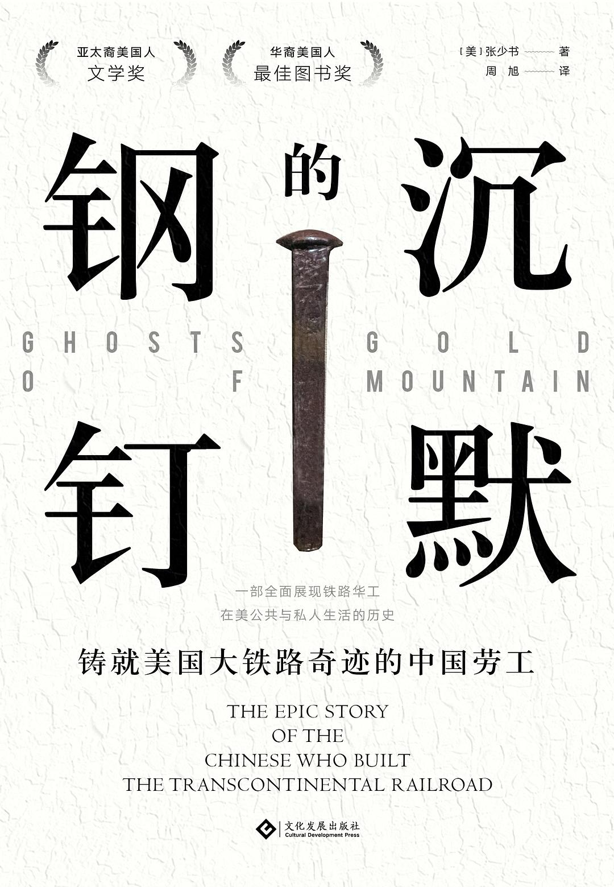

|  |
沉默的钢钉：铸就美国大铁路奇迹的中国劳工 |
前言
在拍摄和公开活动结束之后，斯特罗布里奇邀请记者、军官及社会各界名流前往他的私人车厢，随意地喝点饮料、吃点东西，以更加安静的方式来纪念这一时刻。他主动邀请了熊华，这在当时看来是个颇为大度的姿态。熊华带了几个中国人一起来庆祝这一特殊的时刻，他们代表了成千上万为中央太平洋铁路公司埋头苦干的中国人，一度被认为不可能完成的建设难关被他们顽强攻克。
两万多名华工几乎完成了太平洋铁路整个西段工程的建设，他们占了中央太平洋铁路公司全部劳工的90%。联合太平洋铁路公司则主要依靠爱尔兰人、其他欧洲移民以及内战中退伍的白人和黑人士兵。虽然中央太平洋铁路公司承建的西段（690英里，1110千米）只有联合太平洋铁路公司承建的东段（1086英里，1748千米）的一半多一点，但西段面临的挑战要大得多。联合太平洋铁路公司以美国现存铁路网的终点——奥马哈为起点，所经地区，即便是乡村地区也相对比较开阔平坦。中央太平洋铁路公司修建的西段虽然较短，但地势颇为险峻。起点萨克拉门托的海拔与海平面大体持平，未几就直接过渡到内华达山脉的崇山峻岭之中，地势越来越高，最高点甚至高达7000英尺（2134米）。除了需要克服高海拔的风险之外，中央太平洋铁路公司的劳工还需要在坚硬的花岗岩中实施爆破和挖掘，艰苦的工作环境随时挑战人类想象极限。华工完成了当时普遍认为根本不可能完成的工作，他们忍受着高海拔地区的烈日、尘垢、令人窒息的灰尘以及持续爆破引发的烟尘，忍受着孤独、刺骨的寒风、稀薄的空气、冬天的暴风雪以及极寒的天气，此外，偶尔的爆炸、山上滚落的树木、雪崩、塌方、疾病、断肢以及普遍精疲力竭的身体使得风险无处不在，所有这一切都是为了实现联邦政府意图用一条中央大动脉将美洲大陆连接起来的雄心壮志。华工用极短的时间加快了美国西进的步伐。
为了纪念这一伟大的功绩，具有传奇色彩的“金色钢钉”被钉入路轨，象征着中央太平洋铁路公司和联合太平洋铁路公司修筑的两段铁路正式合龙。横贯北美大陆，连接太平洋和大西洋的铁路自此建成通车，原来长达三到六个月的危险路途现在仅需要一周。不仅如此，这条铁路还让伤痕累累的美国重新焕发了生机。虽然早在四年前内战就已经结束了，但战争造成的破坏依然随处可见，分裂的阴影迟迟未曾散去。“金色钢钉”的一侧镌刻着一行字：“这条铁路连接了世界上最大的两个大洋，愿上帝保佑我们国家继续保持团结。”为了取得这一伟大功绩，华工进行了艰苦卓绝的努力，扮演着不可或缺的角色。鉴于他们做出的突出贡献，工程负责人斯特罗布里奇热情地招待了他们。
斯特罗布里奇来自遥远的萨克拉门托，那里也是中央太平洋铁路公司承建工程的起点。他的态度较工程伊始发生了翻天覆地的变化，五年前，他极力反对雇佣华工。当时，积极推进太平洋铁路兴建的有四个人——利兰·斯坦福、科利斯·亨廷顿、马克·霍普金斯和查尔斯·克罗克，时称“四巨头”。他们同时也是中央太平洋铁路公司的董事。斯特罗布里奇向他的顶头上司查尔斯·克罗克建言，无论身体素质还是精神状态，华工都不适合这项要求苛刻的工作。不过，他的态度随后逐渐软化，参与铁路建设的华工也从最初的几人迅速增加到几千人。他们用实际行动证明，自己不仅完全胜任这份工作，而且还是至关重要的存在。他们的杰出表现也让斯特罗布里奇改变了自己错误的看法，摒弃了偏见。
熊华从中国南方远渡重洋来到美国，1864年1月入职中央太平洋铁路公司。同公司的华人同胞大约十几岁、二十几岁，对于体力劳动者来说正是当打之年。而当时的熊华已经35岁左右，略微年长一些。来美国之前他受过一点教育，颇有商业头脑、野心勃勃。中央太平洋铁路公司还未打算雇佣华工之前，熊华就是奥本小镇的风云人物，这个小镇位于加利福尼亚州中部，内华达山脉的山麓地带。中央太平洋铁路公司委托他招募华工，他摇身一变，成为建设这条铁路的几百名甚至上千名华工的工头。他掌控着他们的工资，照顾他们的生活起居，处理他们与公司的关系，并全程参与了这项危险而艰苦的工作。
斯特罗布里奇邀请熊华参加在普罗蒙特里峰举办的庆祝活动，似乎证明两人建立了相互尊重的关系，但斯特罗布里奇依旧是一位苛刻的、令人望而生畏的上司，他对待中国人是出了名的严苛。他的面相很凶，脾气也很暴躁，工程开始后不久，一次意外的爆炸就让他失去了一只眼，他用一只黑色的眼罩遮住了脸上那条可怕的伤疤，隐隐给人一种不祥之感。华工私底下都叫他“专横的独眼龙”。
熊华和当天早些时候参与最后铺轨的几位华工——金贵、黄福、李邵发现，他们不仅乘坐了斯特罗布里奇的私家车，或许还是生平第一次与有头有脸的白人如此近距离地接触。因为华工没有被邀请参加会师典礼，出于补偿心理，斯特罗布里奇邀请他们参加这个小型的私人庆典。中国人没有参加任何官方活动，拉塞尔的那张历史性照片中也没有中国人的身影，中央太平洋铁路公司的董事利兰·斯坦福在火车车厢里为主要人物庆功时，压根没有想过邀请中国人参加。
铺设铁路的这几年，华工们饱经风霜。长达数年的艰苦劳作使他们变得短小精悍。他们整日忙着清理道路、砍伐茂密的森林、夯实路基、铲除路面的积雪，为了开凿隧道，在坚硬的花岗岩中实施爆破。寒冷刺骨的冬天，他们坚持在内华达山脉的崇山峻岭中铺设路轨，骄阳似火的夏天，他们穿行在内华达州和犹他州广阔的沙漠和高原地带。他们的皮肤普遍呈深棕色，在近几个月沙漠烈日的暴晒下变得粗糙不堪。那些工作结束后来不及换衣服的华工普遍衣衫褴褛，衣服上的补丁也一层叠着一层。从那天早些时候拍摄的照片中我们也能注意到，他们几乎衣不蔽体。他们的棉质束腰上衣和宽松的裤子污秽不堪，而这种装束在当时是高温环境中体力劳动者的标配。为了保护双脚，他们穿着沉重的美国制皮靴。在其他地方从事其他工作时，他们都戴着从中国带来的手工编织而成的棕榈帽，但修筑铁路的过程中，他们全程佩戴柔软的宽边棉帽。他们的装扮出奇地一致，就像军队里的士兵一样。
斯特罗布里奇热情地将熊华介绍给其他宾客，并把他奉为上宾。他站起身来，对华工所做的贡献不吝赞美之词，感谢华工在铁路修筑过程中发挥的中流砥柱作用。所有人站起身来，数次向他们欢呼致敬，一群白人向华工敬酒，这无疑是破天荒第一次。这是华工们的高光时刻，他们为这条铁路所做的贡献得到了认可，他们的牺牲获得了别人的尊重。
至于熊华对斯特罗布里奇的赞美做了何种回应或者是否发表了什么言论，在场的记者并没有提及，我们甚至不知道他是否一言未发。这篇新闻报道中的他是沉默的，这一形象也是当时在美生活的所有华人的缩影。人们都认为中国的铁路工人不可或缺，但他们又一致保持沉默，没有留下任何书面或口述文字。我们不了解他们的所说、所感、所想，他们是“沉默的道钉”，或者说是“无名的建设者”，对于这群修筑了横贯北美大陆铁路线的华工，学者们最近又提出了一些引发回忆的新术语，试图确认他们的身份，探寻他们的人生历程。
和当时的新闻报道一样，接下来几年内的史书并没有为成千上万的铁路华工发声，他们的身份也没有得到认同。在那些认真探讨横贯北美大陆铁路线的著作中，作者或许会提及华工做出的巨大贡献，但他们也只是提及寥寥数人的名字，根本不会详细叙述某个人的人生经历。在19世纪的美国，中国人的形象是模糊的，使他们的形象清晰起来无疑是一个令人望而生畏的挑战。提到这条铁路线，作者或许会谈及华工所做的巨大贡献，但文献资料的缺乏，作者对美籍华人生活的一无所知以及美国向来对华人的不屑一顾，导致这些华工惨遭忽视。
虽然文献资料的缺失可以在一定程度上解释华工的鲜为人知，但最重要的是，多年来根深蒂固的偏见迫使他们游走在美国主流生活的边缘，生活在美国人的记忆之外。在美国崛起的壮丽画卷中，他们并不认为中国人是足够重要且值得被重视的存在。在某些情况下，中国人甚至被完全排除在故事之外。比如，1969年，庆祝该铁路建成100周年的庆典在普罗蒙特里峰举行，时任内政部长的约翰·沃尔普称赞横贯北美大陆的铁路线是一项不朽的建筑成就，对整个国家具有史诗般的重大意义。他自豪地宣称，这条铁路之所以能够建成，完全是由于“美国人”的吃苦耐劳。“除了美国人，还有谁能够在覆盖着30英尺（9米）积雪的崇山峻岭间开凿隧道？”对于中国人，他只字未提，当时联邦法律禁止中国人成为美国公民，而且骄傲自大的约翰也不会承认华工对此所做的贡献。不管华工曾在美国历史上扮演多么重要的角色，这个由民族主义者举办的盛典上都不会允许有华人存在。
一个半世纪以来，文献的缺乏、记忆的缺失、根深蒂固的偏见使华工始终处于历史的边缘。本书是第一部试图讲述其全貌的著作。参与修筑这条横贯北美大陆铁路线的华工有几万名，这部书试图展现他们全部的生活经历以及发生在他们身上的故事。这群华工并不是沉默的羔羊，也不是温顺的棋子，而是有血有肉、感情丰富、活生生的存在，正是他们创造了这段历史。他们是劳工、工头、承包商、泥瓦匠、厨师、执业医师、木匠、翻译和卡车司机。多年来，他们辛勤劳作，为国内成千上万名亲戚或朋友提供生活来源，工作之余，他们就变身赌徒、烟鬼、男妓或者虔诚的信徒，这些信徒信仰各种神灵，因为自己从事的工作每天都在和死神打交道，他们认为这些神灵能护佑他们周全。他们最广为人知的身份就是铁路华工，这个精妙的词汇是由一个叫“莉莉”的人发明的，她是一名来自中国的移民，祖父曾在铁路线上工作，这个词精准地概括了这群人独一无二的种族和阶级身份。
从1864年到1869年的5年间，在美国的工业领域，华工是最庞大的工人群体，直到19世纪晚期工业革命爆发之后，他们的数量才被其他阶层超越。大批华工参与铁路铺设让记者和旅行者都惊讶万分，他们亲眼目睹了铁路华工极端恶劣的生活环境，以及他们在这种环境下埋头苦干的场景。曾有作家描述过只有数百顶帐篷的营地、黑压压的华工队伍以及黑色炸药雷鸣般的爆炸声，这些爆炸声总让人想起内战期间持续不断的炮声。在普罗蒙特里峰举行的庆典上，牧师约翰·托德主持了祈求上帝赐福的仪式，他对铁路华工的至关重要性表示认同，并传达了自己的敬意：“没有中国人的参与，这条铁路绝无建成之可能。”
这条铁路也改变了美国的面貌，这条铁路线建成之后，极大地缩短了横穿全国所需的时间，费用和危险性也显著降低，旅行的舒适度明显提高。各地的农产品得以进入全国市场，甚至还能运送到东海岸的各大港口和太平洋沿岸的旧金山。这条铁路的建成还为落基山脉丰富的煤、铁矿石和其他自然资源的开采提供了条件。美国成为世界上唯一一个可随时自由出入太平洋和大西洋的发达的资本主义国家。在这条铁路建成之后，其他地区性铁路项目如雨后春笋般涌现，交通基础设施更加健全高效。在政治领域，这条铁路使美国变得空前团结，在社会生活领域，这条铁路的建成，使得东部地区的人不费吹灰之力就能进入远西区，对于居住在加利福尼亚的人以及华人来说，进入中西部和东部也不再是什么困难的事情。所有这些都是付出了巨大的代价之后获得的，尤其对当地的土著居民来说，铁路所到之处，进一步粗暴地剥夺了他们的自治权，改变了他们的生活方式。
这些信件为什么下落不明了呢？19世纪歧视华人的美国暴民的纵火、劫掠以及对华人财产的肆意破坏似乎能够解释这些文献缺失的原因。此外，还有一些信件在移民被迫迁徙的过程中丢失，如1906年旧金山爆发地震，继而引发大火，许多信件在移民的慌忙出走中丢失。另外还有部分信件在战争中被焚毁，如美国的内战以及中国发生的一些革命运动等。长期以来，我们一直对华人及其生活嗤之以鼻，因此我们也不屑于收录有关他们的文献资料。或许，除了他们的后代以及那些对在美华工的生活特别感兴趣的人，没有人愿意主动了解他们在中美两国几十年的生活全景。
随后，我们重点讲述初到加利福尼亚州的铁路华工的经历，他们在中央太平洋铁路公司的生活及工作，这也是这部书的核心内容。绝大多数铁路华工将落脚点选在了繁华的港口城市旧金山，我们将跟随他们的足迹穿越加利福尼亚州的中央河谷地带，到达中央太平洋铁路公司修筑铁路的起点——萨克拉门托，随后来到位于内华达山脉山麓地带的奥本小镇，在这里，大批铁路华工选择入职中央太平洋铁路公司。随着铁路线向东推移，进一步深入内华达山脉内部，海拔逐渐升高，华工的数量也在稳步增加。到这段铁路线推移到内华达山脉的最高点，唐纳湖和太浩湖附近的越岭隧道完成之时，华工已经占到了中央太平洋铁路公司总人数的90%。平心而论，若没有他们，这条隧道根本不可能成功开凿。他们在内华达山脉的山巅上穿梭，在难以想象的极端恶劣的环境下工作，因此造成的死伤不计其数。待隧道开凿成功之后，他们马不停蹄地向东推移，在内华达州连绵不断的丘陵地带和犹他州一望无际的沙漠地带继续工作。当中央太平洋铁路公司和联合太平洋铁路公司修筑的铁路在普罗蒙特里峰成功合龙时，在5年修筑过程中死亡的华工已高达数百人，甚至上千人。他们的勤勉、奉献以及牺牲引起了全美关注，一时间，铁路华工在美国站稳脚跟的梦想似乎马上就能实现。从那时起一直到19世纪末，成千上万名铁路华工散布在美国和加拿大，修筑了许多其他铁路线。他们开始在美国的各大城市和小镇定居。然而希望只是昙花一现，中国人被视为劣等民族和工作上的竞争对手，他们的辛苦劳动换来的竟是可怕的暴力和被驱逐出美国的悲惨命运。
上万名华工被驱逐出美国，为了生存，他们不得不前往世界其他地区。许多人返回家乡，因为华工们参与了铁路建设，这些村庄被人们称为“铁路村”。留下的那些人则为后来的美籍华人奠定了基础。他们随着铁路的修筑而迁移，在铁路沿线建立了社区，为后来追随他们而来的同胞开辟了一条道路。如今，铁路华工的后裔遍布美国甚至世界各地。
这些问题的核心是际遇到底在铁路华工的生活中占据何种角色。他们的生活中充满了或好或坏的选择、境遇、意外和运气，他们或许像其他人一样相信命运，但是他们却面临着许多未知的风险，生命随时遭到威胁。为了生存和获取财富，他们离开了位于中国南方的故乡，对于面临的危险，他们也心知肚明。19世纪，在太平洋地区和美国西部地区，灾难、伤害、暴力甚至横尸街头，都是再平常不过的事情。船舶在公海航行时，疾病和虐待已经夺走了许多人的性命，在加利福尼亚，那些鄙视中国人、将他们视为掠夺和嘲弄对象的恶棍也夺走了不少人的性命。时有发生的雪崩导致无数华工葬身峡谷，爆破过程中发生的意外也让一部分人粉身碎骨。在铁路线修筑完成之后，不怀好意的政客煽动对华工的仇视情绪，意在将华工驱逐出美国，数十名华工死于暴民私刑、纵火和枪击。不论是自然环境还是人为因素，华工们都极有可能丧命异乡。虽然他们不使用这个词，但他们经常面临“毫无机会的绝境”，当提到华工们动荡的生活环境时，美国的种族词典中经常会出现这一众所周知的词汇。
然而，数以千计的铁路华工坚持了下来，虽然绝大多数人没有实现发财致富的梦想，但还是有一小部分人在美国过上了富裕而有意义的生活。一些人像英雄一样衣锦还乡，比如创造了“铁路华工”这个词的莉莉的曾祖父，他还从美国带回了一个外国媳妇。莉莉的家人一直称美国为故乡，三代人之后，混血儿莉莉又移民回美国。其他在美国站稳脚跟的成功人士则奠定了美籍华人的基础，他们的成就应该得到认可，他们的遗产应该得到尊重，他们的精神应该得到抚慰。虽然这是关于逝去的人的故事，但他们的经历也能引发生者的共鸣。这个故事关乎勇气、梦想、成就、灾难和非凡的决心。
第一章 广东
绿色和褐色相间分布的田野以及湛蓝的天空，在铁路华工的故乡营造出一种慵懒闲适的氛围，人群的骚动在这里显得格外微不足道。数百座碉楼在郁郁葱葱的树林中若隐若现，与田野中的自然风光形成鲜明对比。碉楼是一种多层的砖石建筑，19世纪末20世纪初，当地土匪横行，村民们将其改造为瞭望塔和堡垒。如今，这些建筑仍矗立在当地，提醒人们不要忘记中国南方这一地区的居民长期以来遭受的苦难。
从19世纪初开始，数百万人陆续离开这个人口稠密，面积却不足75平方英里（194平方千米）的地方，前往远在千里之外的最终定居地。这一决定彻底改变了他们的家庭以及祖祖辈辈固守的生活方式。广东四邑远离中国北方的皇权所在地，远离中国传统的文化和商业中心，这片位于中国南部沿海地区的飞地就是铁路华工的故乡。据统计，仅台山一邑在19世纪就有1/4的人口——大约20万人前往海外谋生。或许他们以前只是普通的农民，但凭借着充沛的精力和开拓进取的精神，他们改变了那方远离其原始村庄、田野和故乡的地方。为了保护留在家乡的亲人，那些获得成功的华人从海外寄钱回来修缮碉楼，因此，碉楼象征着海外华人对故乡的牵挂和忠诚，也代表着海外游子和故乡亲人的联系。
19世纪，广东四邑是指新宁（后来改为台山）、开平、恩平和新会。在广州下辖的15个县当中，四邑是人口最为稠密的地方。19世纪中叶，广东的总人口约为2500万，并且拥有漫长的海岸线，是中国南方的政治中心和战略要地。19世纪，几乎所有赴美华人都从广州起航。连绵不断的群山将四邑与省内的其他地区割离开来，四邑以东是香港，以北是大城市广州。平原地带水道和沼泽纵横交错，用泥土和岩石将这些水道和沼泽改造为耕地，便可增加农田和居住用地。
四邑土壤肥沃，雨量充沛，水道纵横，适宜种植水稻，而水稻是湿地农业的主要农作物。一眼望去绿荫千顷，农田里的水稻是绿色的，丘陵上的柑橘以及其他果树是绿色的，蚕蛹的主食桑蚕叶是绿色的，用来编织篮子、蒲扇、小家具和帽子的耐磨的棕榈叶也是绿色的。根状植物和叶状植物都是绿色的，除此之外还有小型的水生植物和海产品，这些构成了当地独具特色的饮食。在这里，用途广泛的绿竹随处可见。
珠江及其支流东江、西江和北江水量充盈，河道纵横交错，这些河流从西向东注入南海，在下游地带冲积形成珠江三角洲，四邑就是珠江三角洲的一部分。四邑大致与佛罗里达州南部处于同一纬度，在感觉和外观上也与一马平川的密西西比河三角洲类似。实际上，在横贯北美大陆铁路线修筑完成之后，许多华工选择在美国南方腹地定居，也是因为那里在外观和气候方面与家乡类似。此外还有一些人选择在加利福尼亚州的萨克拉门托河三角洲地带定居，该河流所经之地气候温暖湿润，最终注入旧金山海湾。不管在家乡还是海外，四邑人都离不开阳光和水。
早在1000多年前，人们就在四邑这片土地上定居、精耕细作，19世纪初，美国人刚踏上中国时就注意到了四邑这片富饶的土地。著名的美国传教士威廉·斯皮尔曾在珠江三角洲居住多年，曾试图向家乡的人们描绘这里的情景。他满怀深情地回忆那被“竹林包围的村庄”、“菩提树以及其他树木”，他在日记中写道：“极目所见，皆是绿树。”斯皮尔非常敬佩四邑人精耕细作的种植方式，他写道：“中国人能够在所有平坦的土地上种植农作物，也只有他们知道如何才能从大自然中获得最大的回报。这里就像是一个群山环抱下的大公园。”大片的原始森林早已消失，祖祖辈辈生活在这里的人们，为了生存大量砍伐森林，大部分野生动物不是被吃掉就是被赶走。
一个村庄就是这一小片区域的核心，简陋的砖房密密匝匝地建在一起，有时两家共用一堵墙。村民们都住在一起，农田远离村庄。这一点和美国不同，美国的农民都居住在自己的农场里，彼此相距很远。这样的居住环境使村民之间互动频繁，有关机会的谣言或新闻也会不胫而走，这是当地日常生活的一大特征，也是当地村民的一大习惯。在美国，铁路华工们也保持着这样的社交方式。
在泥土路上步行或在小河流里乘船大约一个小时后，你就能看到另一个村庄。再远一点就是市镇所在地，人们在这里进行基本的贸易活动和简单的娱乐活动，市镇是这一片区域的政治、文化中心。斯皮尔写道：“市镇拥挤的街道上人潮涌动，为了满足最基本的生存之需，人们用尽了各种手段，从事着各种职业。”斯皮尔看到的有商人、批发商、小店主、工匠、手艺人、小贩、工人、艺人、当铺商人、放债人、厨师、屠夫、编织者、演员、造纸者，行销海内外的手工艺品的制造者、赌徒和流浪汉。他们贫富差距明显，教育、文化和家庭背景各不相同。这些来自社会各阶层的人都前往同一个目的地——美国。
四邑人说着不同的方言，不来自同一地区的人根本听不懂。这些差异很大的方言被统称为“广东话”，这一术语抹杀了不同方言之间的差异。这一地区的文化、社会情况和民族状况复杂而多样，但大部分人都接受过初级教育。虽然绝大多数前往美国的人教育水平都不高，但还是有一小部分人学识渊博。
广州的历史可以追溯到公元前200年，从四邑乘船沿珠江三角洲纵横交错的河道就可到达这里。从公元226年开始，广州就成为中国南方的政治中心，近几个世纪以来，它又成为南方的经济中心之一。广州是古代海上丝绸之路的起点，这条繁忙的商路对中华帝国来说至关重要，它将中国与太平洋沿岸地区、东南亚、南亚、信奉伊斯兰教的地区，甚至非洲联系起来。
葡萄牙人是最早经海路来到中国的欧洲人，16世纪早期，他们定期与广州附近的中国人进行贸易。16世纪中叶，他们侵占了由一个半岛和两个小岛组成的澳门，这是欧洲人在亚洲取得的第一块永久居留地。澳门与四邑隔海相望。
广东的地理环境使中央集权制度很难在这里推行，因此地方主义强烈。这里靠近海洋，为远洋航行提供了可能，同时也激发了当地人的冒险精神。沿海地区方便了人们外出探险，但也同时面临着走私者掠夺、海盗抢劫和外国人入侵的风险，有时这三种危险同时存在。19世纪初，英国殖民者开展违法的鸦片贸易，最初也兴盛于这一地区。从英国的殖民地印度购买的鸦片沿着疏于管理的海岸线流入中国，由此引发了土匪横行、官员贪腐、社会运转不畅和经济崩溃等一系列问题。最终数百万人，包括许多移民到海外的人都对这种残害身心的毒品上了瘾。不久之后，中英两国于1840年开战，战争持续了3年之久，史称第一次鸦片战争。四邑地区的渔民每天听着轰隆隆的炮声度日，还亲眼目睹了中英海战的场景。在四邑这片热土上，人口的迁徙、对家园的深切依恋和社会动荡都不可避免地联系在一起。
中国南部沿海地带是亚热带气候，因此四邑人几乎没有体验过北美地区极寒的天气。一年中的大部分时间都是艳阳高照，夏季气温最高可达80华氏度（26.7摄氏度），冬季最低则降至50华氏度（10摄氏度），充足的水汽使这里的空气在一年中的大多数时间里都潮湿沉重，降雨也都是倾盆大雨。即使是十一、十二月，大雨也有可能持续数天之久，降雪则是百年难得一遇的奇异场景。这种气候下，农作物全年皆可生长，农民一年能收获两到三季庄稼。为了适应当地的气候，方便劳作，四邑人全年都穿着轻便宽松的棉质衣物，戴着遮阳草帽，穿着最简陋的草鞋，穿行在尘土飞扬或潮湿炎热的田野中。孩子们赤着脚到处乱跑，四邑人冬天也会穿棉袄，但他们想都没有想过穿厚厚的毛衣、沉重的皮靴、粗布工作服和防风的厚外套，不过，这些都是在加利福尼亚山区工作时必需的装备。内华达州和犹他州寒冷的天气、暴雪和炙热的沙漠，对他们来说就像是闻所未闻的传说或荒诞的民间故事。
四邑地区季节分明，恐怖的暴风雨时有发生。季风通常在夏季和冬季来临，暴风席卷沿海地区，带来倾盆大雨。每逢季风来临，出海航行就变得非常困难，尤其是在冬季。最可怕的是台风，这是一种热带气旋，以每小时50-100英里（80-161千米）的速度向前推进。台风在香港可达到创纪录的150英里（241千米）的时速。台风通常在每年夏季出现，一般会造成大规模的人员伤亡和普遍的破坏。气候还决定了四邑人出海的时机，由于天气和家庭因素，每年农历新年过后是出海的最佳时机。春节期间，家庭成员欢聚一堂，祝福即将出海的亲人旅途平安，在海外一切顺遂。
四邑人对故土怀着深切的依恋，但他们深知自己并不是一直生活在这里。在相当长的历史时期，四邑只是一个毫不起眼的偏远地区，家族宗谱和村史显示，他们的祖先也是很久以前从中国其他地区迁移过来的。许多人的祖先几个世纪以前从北方或中部迁徙到此，四邑人对家谱极其重视，男性子孙每年都要举行隆重的仪式祭奠祖先。通过这种仪式，四邑人希望把家族精神世代传承下去。这种需求塑造了四邑的社会生活和文化，并在美国被忠实地传承下去。这种对家庭和仪式的关注也意味着他们会分享有关家人、朋友和邻居的消息，当然也包括那些移居海外的人的消息。
目前为止，还没有任何铁路华工对19世纪中期四邑的乡村生活进行过完整的描述，但同一时期作为铁路华工来美的四邑人许芹撰写了一部值得关注的回忆录，其中描述了19世纪50年代到60年代，他还是个孩子时自己所在乡村的生活图景。多年以后的1932年，那时的许芹已经80岁高龄，他回忆起自己在中美两国的生活，撰写并出版了回忆录，帮助其他人了解在美华人的生活经历。在一生中的大部分时间里，他都被公认为美国最著名的华人牧师。
和大多数其他华人移民不同，许芹抵达美国后接受了西方教育并在纽约定居，后来被任命为纽约中华基督教长老会的第一任牧师，他在这个职位上一待就是将近40年。虽然他从未受雇成为铁路工人，但对铁路华工这一群体却非常熟悉。他和华工们来自同一个地方，从小在相似的环境下长大。他关于自己孩提时代家乡、村庄和当地环境的描述，展现了许多深刻而敏感的细节，远远超出了个人范畴，具有普遍的代表性。这部书深刻洞察了在美华工的普遍经历，他于1868年来到美国，那时横贯北美大陆的铁路线马上就要竣工。
许芹出生于1854年，祖籍广东省台山县永宁村。许氏家族200多年前从中国北方迁徙到此，根据他的描述，他所在的村庄“距离大海不远”，“四周群山环抱，所到之处皆是稻田”。根据他提供的线索，他所在的村庄就像台山县其他被群山环抱的乡村一样，不算太大但并不贫困。他小的时候中国南方爆发了几次社会动乱，生活在与世隔绝的小山村里，反而没有受到这些动乱的波及。虽然，他生活的乡村“距离省会城市广州只有90英里（145千米），但我们与其他县市几乎没有任何往来”。他对发生在周围的重大事件一无所知，包括19世纪50年代席卷中国南方大部分省份，造成毁灭性破坏的太平天国运动和1856-1860年爆发的第二次鸦片战争。在第二次鸦片战争期间，英法联军占领广州长达3年之久。他没有关注这些重大的社会事件，到底是因为所在村庄的与世隔绝还是由于他的年幼无知，我们不得而知。
他家的房屋非常简陋，他的父亲、两个哥哥、他以及一头牛住在一间屋里，这间屋还要被用作厨房。他的母亲住在另一间屋里，因为地方狭小，他的两个姐姐晚上只能睡在祠堂里或者村里为未婚女子准备的公屋里。从6岁起，她们就在这里学习中国传统女性必备的手艺、技能和方法，她们也在这里完成裹脚，这是对女子的残害，但大部分汉人都认为这样做可以让女子看起来更摇曳多姿，便于出嫁。许芹的姐姐白天和父母兄弟一起在稻田里劳作。在许芹家里，供奉着三个神明（一个护家，一个保护牲畜，一个保护厨房，这是一家人食物的所在地）的牌位，粗糙的砖炉里燃烧着水稻的秸秆。这个家庭在当地属于中产阶级家庭，许多出身这种家庭的年轻子弟都选择去海外闯荡。
通过血缘和千百年来流传下来的传统，村民们紧密地联系在一起。对于世界和人类的关系，他们信奉着一种复杂的宇宙论。他们走到哪里，就会把这种信仰带到哪里，包括去美国。他们相信人定胜天，但是在做任何重大决定之前，他们都会进行占卜，请示上天和神灵的旨意，以便得到不可控制的神秘力量的帮助。铁路华工来到美国之后，依旧固执地坚持自己的传统，公开举行传统的仪式，这让许多美国人感到困惑，他们认为四邑人举行的这些仪式属于封建迷信或异教信仰。面对危机四伏的生存环境，虽然这种仪式给不了四邑人什么实质性的帮助，却能给他们带来精神慰藉。
举行礼拜仪式不仅对每个家庭很重要，对整个村庄也是如此，村里建有祠堂和神龛。神龛是放置神仙塑像和祖宗牌位的小阁，四邑的一些村民甚至宣称有一位新的女神（Songjiu Funu），她会保佑那些出国的人。祠堂是一个规模稍大的建筑，里面供奉着历代祖先的牌位，放置着村民的出生簿和死亡簿。祠堂也被用来当作私塾，村里的男孩都来这里接受教育。许芹在这里接受了几年教育，学习了基本的读写和语法知识。即使许芹来自偏远的小山村，但具备基本的读写能力是很常见的事情。女孩接受教育即便不是闻所未闻，也是十分罕见的。没有受过教育的女孩被称作文盲，许芹在回忆录中语带悲伤地说，她们不得不依靠男人为她们读信和写信。
四邑人的生活以耕田为核心，记录着人的生老病死、成家立业。村里的人很小就下地劳作，甚至连当地的野生动物都提倡辛勤劳作：当地的一种鸟悠扬的叫声被村民们解读为“阿公阿婆，割麦插禾”。艰辛的生活不养懒人，传教士威廉·斯皮尔认为，华人在加利福尼亚州表现出来的勤勉是与生俱来的：“多年辛苦劳作似乎磨平了中国人的棱角，以至于忍耐和勤勉已经成为他们精神和身体的一部分。他们工作是因为他们热爱工作、敬畏工作，能够从工作中获得幸福和尊严。工作已经成为他们身心的必需品，就像消化系统需要食物，肺需要空气一样。”
许芹回忆说，孩子们玩耍的时间虽然很零散，但依旧很快乐，一些重要的节日就是最快乐的时候。以农历计，春天的端午节、夏天的七夕节、秋天的中秋节以及初春最重要的春节，贯穿整整一年的时光。每天的食物都很简单，基本上都是大米、土豆、绿色蔬菜，一个月只有几次可以吃到鱼或肉。无论去哪里都是步行前往，没有任何机械动力，有的只有人力、火以及最基本的水力和风力。
如果不是永宁村之外的地方发生的动乱迫使他离开的话，许芹可能永远不会离开深爱的家庭和熟悉的村庄。因为他所在的村庄并不像他在回忆录的开头所说的那么闭塞，这一点他也很清楚。19世纪30年代，欧洲列强对中国的侵略逐步加剧，在这种外力的冲击下，南方地区传统的生活方式、社会关系和经济模式都被打乱了。19世纪50年代末，虽然许芹年龄很小，但对于当地人和客家人之间的矛盾冲突肯定也有所耳闻。客家人操持着不同的方言，保留着不同的生活方式，比如客家人从不给女孩子裹脚。客家人和本地人在广东共同生活了几百年，彼此邻近却相互仇视。19世纪中期，双方的冲突升级为大规模的血战，上万人在械斗中死亡，这一地区的经济遭到毁灭性的破坏。
本地人与客家人之间的冲突与另一场更激烈的冲突密切相关。1644年，清入关建立统治，1850-1864年爆发的太平天国运动令清朝的统治风雨飘摇。这场革命运动的起源地就在广东的邻近省份广西，太平天国实际控制中国长江流域长达数年之久，至少250万人在这场内战中丧生。此外，19世纪50年代，红巾军起义也席卷了整个广东地区。
这些冲突引发的流血事件举世震惊、臭名远扬。容闳是首位留学美国的华人，于1854年从耶鲁大学毕业。他回忆说自己曾亲眼目睹可怕的处决场地，清朝总督叶名琛在那里处决了上万名叛乱分子。来自珠江三角洲的移民将种族间的不和和政治上的对立带到了美国，19世纪50年代在加利福尼亚的山区，甚至在铁路修筑过程中，他们内部依旧冲突不断。
许芹曾有一个年轻的亲戚去海外闯荡并返回家乡，他在回忆录中写道，对于外面的世界，他从这位亲戚那里听到了令人心潮澎湃的故事。他讲到了“奇怪的城市，红头发蓝眼睛的人以及山区里随处可见的金块”。一位从加利福尼亚回来的堂兄描绘了旧金山的富饶场景，之所以称其为旧金山，是因为1849年兴起的淘金热（中国人为了淘金前往澳大利亚，将墨尔本称为新金山）。这些故事让孩童时代的许芹对海外的世界充满了向往，他回忆说，他的妈妈告诉他，自己有一次陷入狂热的臆想状态，不停地说自己要去“金山”。“淘金热”对他有异乎寻常的吸引力，对早年从乡村向外迁徙的移民来说，寻找黄金是一个普遍的诱惑。
因“淘金热”前往加利福尼亚的人绝不止许芹一人，19世纪中期的加利福尼亚是一个令人惊叹和向往的地方。中国人为其取名“金山”，虽然有夸大的成分但还算恰如其分。1850年加利福尼亚州刚刚加入联邦时，还是个地广人稀的地方，总人口不到93000人。但所有人都知道，这片土地拥有无穷的潜力。它的人口激增，得克萨斯州的面积比加利福尼亚州大得多，但在繁忙的旧金山海港、太平洋沿岸长达800英里（1287千米）的海岸线、通往亚洲的联洋高速公路、中央河谷肥沃的土壤、四通八达的河道系统以及太浩湖、约塞米蒂国家公园、红木森林公园、高耸入云而又连绵不绝的内华达山脉的壮丽景色面前，马上就相形见绌了。不仅如此，1848年，有人从发源于内华达山脉的溪流中发现了金子，这种贵金属吸引了大批人前来淘金，世界上其他地区从未让人如此向往和惊奇。
19世纪绝大多数时间里，对于中国人来说，“金山”意味着该州北部的广大地区。南方的发展相对滞后一些，北方看似蕴藏着无尽的机会，许多人怀着一夜暴富的梦想来到这里。加利福尼亚州北部非常适宜人类居住，沿海地区气候温和湿润。中央谷地被沿海丘陵包围，不会受到太平洋的直接影响，拥有世界上最肥沃的土壤，气候炎热多雨，和广东省类似。这对于血液中流淌着农耕文明的四邑人来说，是再好不过的定居地了。他们在中国南方的故乡地狭人稠，拥有上千年的农耕文明，但19世纪加利福尼亚州广袤的土地上，除了在此定居的土著人之外，大部分地区仍是未开发的处女地，其丰富的资源具有巨大的开发潜力。
还有一些中国人选择在太平洋沿岸定居，靠海吃海，以捕鱼为生。旧金山海湾也蕴藏着丰富的自然资源，来自四邑地区的华人对鱼、牡蛎、蛤蚌、鲍鱼、螃蟹和海菜都了如指掌。华人聚集形成的渔村被称为“中国营地”，他们还从事养殖活动，为该州不断增加的人口和他们的故乡中国提供了大量新鲜或腌制的食品。据前往加利福尼亚旅行的人说，该州到处可见华人的身影。一些华人后来离开加利福尼亚州，前往俄勒冈州、内华达州以及更远的地方，但自远古以来，中华文明就对金光闪闪的黄金推崇备至、梦寐以求，中国人之所以来到美国，尤其是加利福尼亚州的山区，也是因为黄金，那里丰富的矿产资源正等着人们去开发。随着时间流逝，“金山”成为远离家乡的梦想之地的代名词，在那里，人们可以轻而易举地实现一夜暴富的梦想。
清政府害怕从海外回来的移民散布煽动性言论，引发社会动荡，因此屡次发布移民禁令，而且还威胁要处决从海外回来的移民。尽管如此，许多人仍不顾禁令的阻挠，毅然决然地离开了故乡。后来，地方政府对移民潮转而采取放任态度，迁徙到离广州不算太远的东南亚地区已经成为该地区历史上的一大特色。为了逃避当局的禁令，华人移民一般将由外国控制的香港和澳门作为中转站。
最终数百万人，其中大部分为男性，离开了故乡前往东南亚，少部分人前往美国。许芹回忆道：“我们年轻人也受到这股移民热潮的影响。”从19世纪50年代初开始，中国人开始大规模赴美，到1868年许芹移民美国时，大约有107000名华人抵达美国。后来，大概有33000人返回故乡，留在美国的有70000人，这些人绝大多数都来自四邑地区。没有人想永远留在美国，他们最初的计划是努力工作，积累一笔可观的财富，然后回到故乡安度晚年。但是加州对他们具有足够的吸引力，再加上铁路上的工作，都成为他们留在美国的理由。许芹和铁路华工是同一代人，他们在战争和动乱中长大，同样受到移民热潮的影响。
负责招募华工的人和华商为许多移民安排了行程，在旧金山，招募华工的组织和同乡会负责安顿刚到美国的移民。一些人乘坐华商拥有的船只从香港转道赴美，大部分人乘坐英船或美船赴美，其中最著名的当属太平洋邮轮公司以及由铁路公司直接创建的后起之秀东西洋轮船公司，两家公司都从这一航线中获利颇丰。从1860年到1874年，大约有112000名华人取道香港前往美国，大部分人选择在旧金山登陆。
这篇文章宣称，一家铁路公司“急需数千名工人”，修筑一条从萨克拉门托远至密西西比河流域，横贯整个北美大陆的铁路线。该公司已经招聘了11000名工人，还需要再雇佣10000多名工人，即便这样，整个工程至少还要持续三四年。此外，连接亚利桑那州和俄勒冈州的铁路线也已经开始修建，如果不愿意修筑铁路，农业领域也大有可为。这篇文章用飞扬的笔触提醒读者，在加利福尼亚广袤的土地上，蕴藏着大量等待开采的黄金。这篇文章的作者向读者们保证，去美国工作，每月的工资是20到35美元，对于质朴的农民来说，这是一笔相当可观的收入。现在可以乘坐蒸汽机船前往美国，耗时只有原来乘坐帆船时的一半。此外，华商还能协助他们做好具体的安排。该报宣称，“便捷的旅途和对工人的巨大需求，使旧金山成为全世界工人福利最好的地方”。这一消息充满了鼓动性和诱惑性，证实了之前口口相传的听闻。铁路上的高薪工作吸引另一个中国少年罗耀来到美国，他的朋友和堂兄告诉他，在旧金山，“去铁路上工作可以赚大钱”。
801名乘客都是男性，大约来自110个不同的村庄，拥有5人以上的村庄只占小部分，不过约80%的乘客都有来自同一个村庄的同伴，许多人都拥有同一个姓氏。比如，最大的一个群体来自成春县的新兴村，共53人，在这53人中，有32人姓李，还有10人姓黄。当时，汉语的英译存在许多前后矛盾的地方，除了22名8到12岁的男童标注自己是“学生”之外，其余所有乘客都声称自己是“工人”。这些男童之所以赴美可能是因为政府推行的“幼童留美计划”（1872-1881年），在这一计划的推动下，清政府先后派遣120名幼童赴美留学。年纪最大的乘客是50岁，但是这批乘客的平均年龄只有20出头，许多人只有十几岁。
第二份乘客名单来自从英国利物浦出发的盖尔人号。1876年8月，这艘船停靠在旧金山港，虽然这艘船的载客量是700人，但当时只载了192名乘客，大部分是中国人。美国移民局驻香港的工作人员核查了乘客的身份之后，证明他们全部都是“自由且自愿的”。在192名乘客中有一名或者两名成年女性（据记载，一位母亲带着一名5岁的男童），一位女性乘客标注自己的身份为“学生”，剩余的皆为男性乘客，平均年龄为20出头。和阿拉斯加号上的乘客一样，这份乘客名单也是按照籍贯排序的，最大的群体来自孙宁村，大部分乘客集中为两个姓氏。这两份乘客名单表明，华人赴美是集体行为，与家庭、宗族和籍贯密切相关，而且绝大多数移民为年轻男性。
这些旅客的移民经历可能与许芹类似，他们离开熟悉的家乡前往美国主要是为了寻找黄金和怀揣着一夜暴富的梦想，而不是受到丰厚薪资的吸引，主要是为了实现个人野心，而不是迫于生计而离开。就像许芹后来所说的那样，首先想到去海外发财致富的是他和他的三个堂兄弟，而不是他的父母。他们告诉父亲自己的冒险计划，当时，许芹的两个堂兄才20岁出头，他和他的一位堂弟才只有14岁。
他们的父亲没有反对这一冒险计划，实际上，他们还支付了30美元的旅费。许芹的父亲把家里的田地拿去典当，据他回忆，自己的父亲很少提及外出闯荡这一野心勃勃的计划，他相信自己的父亲“非常具有商业头脑”，将这种冒险看作是一种投资。实际上，许芹写道，自己的父亲“有一些亲戚，离家的时候和他一样穷，回来时都已经飞黄腾达”。这个故事可能是杜撰的，但因为被反复提及，也便有了鼓舞的力量。这也证实了一些历史学家的结论，即从四邑前往美国闯荡的移民并不是“穷无立锥之地的人”，按中国的社会阶层划分，他们大部分都是中产阶级。移民需要旅费，四邑地区当时的借贷合同显示，像许芹这样的家庭，为了支付年轻的家庭成员外出闯荡必需的旅费，一般都质押家里的土地获得贷款。
许芹和他的堂兄弟认为自己只是短暂地离开，很快就能衣锦还乡。许芹的家庭为了支持他移民负债累累，但许芹自己却是自由的，相比那些出卖自己未来的劳动力来获取旅费的人来说，他在海外选择时拥有更多的自由。后者的旅行方式被称为“赊单制”，订立契约的雇主预先支付借款人的旅费，借款人用在美国的收入支付本息。尽管许多前往美国的欧洲移民也采取这种方式支付旅费，这种方式却因与契约奴役制类似而备受争议。（很多）在美华工经常被激进的反华势力称为奴隶，他们认为华工甘心被华商和订立契约的雇主利用，从事各种繁重的工作。这种错误的认知很大程度上源于种族偏见，许芹的回忆录和其他各种详实的资料证明，移民美国的华工很多都是自由且自愿的。
他们终于登上一艘船，向着最终的目的地出发，他们从头到尾仔细地打量这艘船，这艘船和周围的环境一样让他们感到新奇。虽然那时候，明轮汽船经常出现在太平洋洋面上，但许芹乘坐的却是一艘“有着三根巨大的桅杆和漂亮白帆”的大汽船。他回忆说，虽然亚洲人、太平洋岛民和其他来自欧洲以外地区的人经常在航行于太平洋的汽船上工作，但所有的船员都是白人。与许芹同乘一艘船的乘客并非都是中国人，还有欧洲人和美国白人。据许芹回忆，他并不知道航行路线，只知道天气比较温和，船只一路上也没有停下过。
行到中途，许芹最年长的堂兄，也是他们几个公认的领袖突发高烧，最后在抽搐中死去。虽然许芹没有记录这位堂兄死亡的具体细节，但他还是记录了自己的绝望。他回忆道，堂兄的尸体在简单包裹之后被扔进大海，自己盯着黑漆漆的大海看了好几个小时。他的遗体永远不可能回到故乡，这就意味着他的魂魄只能永远游荡在无穷的海底。那些后来死在美国的中国人，如果他们的遗体没有运回故乡，也意味着他们的魂魄只能游荡在异国的土地上，这是一个令人恐惧的结局。“我们的灵魂人物死了，我们三个将何去何从呢？”许芹在心中暗想，“不安的情绪总是涌上心头，他的死必然为我们的冒险之旅投下可怕的阴影。”
1870年，一位旅行者记录了华人移民美国的旅途中的场景，大部分华人挤在甲板下面狭小的空间里，自发地分成不同的社会群体。他们选出一个人来做饭，并委托他向白人船员索要食物。根据记载，吃完饭之后，中国乘客就会“躺在自带的躺椅上，或者倚着舱板之间的竹竿，听着二胡声沉沉睡去”。他们玩纸牌或其他游戏，偶尔会发生争吵甚至打架，但大部分时间能够和平相处。如果要举行什么仪式，他们会穿上自己最好的衣服。“只要想祈祷，中国人总能找到合适的场所。”从其他搜集到的航行日记中我们得知，航行时条件是非常艰苦的，包括令人饱受折磨的晕船、沾染重病、极度拥挤的空间和偶有发生的争斗等。我们可以推测，在前往美国之前，这些乘客的境遇应该有着巨大的差异。
许芹在回忆录中讲到了几个困扰许多学者多年的重点问题。首先，许芹的家乡虽然位于台山县一个偏僻封闭的小山村，但与广阔的珠江三角洲地区有着千丝万缕的联系。19世纪中期，珠江三角洲地区是中国最早的、也是最发达的市场经济体。虽然生产工具比较落后，但农民们为农业经济贡献了相当大的力量，并非对东亚的变化毫不知情。敢于冒险和求富的文化使个人的经济野心不断膨胀，商人们买卖柑橘、大米、海产品、丝绸和手工艺品来获取利润。数百年来，临近的佛山市一直生产金属制品和陶瓷，供销海内外市场。根据许芹的描述，乡村生活虽然质朴，但他的父亲对他移民美国持支持态度，表明他的家庭受商业文化的浸润已久，以及他想外出试试运气的广泛动机。事实上，贫困并不是所有人移民的动机，对于许芹以及和他类似的人来说，他们只是抓住了稍纵即逝的机会而已。
矛盾的是，虽然四邑地区在中国内部相对孤立，但与其他地区相比，这一地区与外界的联系更频繁。19世纪，欧洲人和美国人的入侵快速而显著地改变了珠三角地区，这一地区是中国首个受到外国士兵、商人和传教士深远影响的地区，广东人尤其讨厌傲慢的英国人，普遍厌恶那些不守规矩的外国士兵、商人和探险家，因为他们扰乱了中国人的生活和秩序。早在19世纪40年代，广东就经常爆发大规模的暴动和抗议活动，外国人认为广东是中国最排外的地区，因为广东人频繁地与外国人爆发冲突，但他们也是最熟悉外国人的中国人。
许芹的描述与那些因苦力贸易被迫移居海外的人的经历截然相反。他承认，上万名华人被运往古巴当“奴隶”，他们被暴力挟持或被诱拐到那里的种植园当苦力。19世纪30年代到60年代，苦力贸易在广州周边地区达到鼎盛，后来因受到越来越严厉的道德谴责而不那么猖獗。1859年，一份详尽的统计数据显示，从1847年到1858年，至少有28000名华人乘坐71艘船来到古巴，这些船大多来自欧洲。至少有4000人在旅途中丧生，英国船只上的死亡率在15%左右，秘鲁船只上的死亡率高达40%，而美国船只的死亡率在12%左右。
这些悲惨的数字反映了中国侨民历史上广泛的强迫劳力输出模式，虽然1833年英国政府出台法律，在大英帝国范围内废除奴隶制，但一直到19世纪，在这个蓬勃发展的帝国内部，契约劳工一直以苦力贸易的形式持续存在。海盗和土匪从中国和印度劫掠了数万人，把他们输送到世界各地的种植园或矿场做苦工。许多人是战争中的俘虏，还有一些人是借债人或被劫掠的流动人口。从19世纪40年代到70年代，大约50万华人被劫掠到古巴、秘鲁和加勒比海地区，其中大部分都以葡萄牙的殖民地澳门为中转站。苦力（coolie）这个词来源于泰米尔语，在泰米尔语中，这个词就与工作有关。无独有偶，在汉语当中也有一个类似发音的词“苦力”（kuli），意思就是干重活的劳动者。
1852年，来自美国康涅狄格州的罗伯特·布朗号从福建南部的厦门起航，目的地可能是加利福尼亚州，据称船上大约有400多名中国人。航行到第九天时，中国人发动暴动，杀死了船长和其他几名船员，他们要求剩余的船员将船驶回中国。但是这艘船在琉球群岛附近搁浅，船员们重新控制了这艘船并在英国海军的帮助下抓捕了逃跑的中国人，许多人被杀或被捕。美国军方审讯了70多名中国人，并将其中的17人以海盗的名义处死。罪犯被移交给中国当地政府，官员们在经过长时间的调查并审讯了相关人员之后认为，中国人之所以发动暴动，是因为这艘船的船长欺骗了他们。这艘船没有按照原计划开往加利福尼亚州，而是驶向了秘鲁，去秘鲁臭名昭著的鸟粪矿工作无疑就是死路一条。根据中国官员的调查，船员不但残忍地虐待他们，还将奄奄一息的华工扔到海里，残忍地殴打其他人。他们没有别的办法只能奋起反抗，最后中国政府释放了剩余人员。
1855年，美国船只韦弗利号载着450名华人前往秘鲁，在船长意外身亡之后停在了菲律宾。据报道，船员们因害怕船上爆发痢疾，也害怕焦躁不安的中国人发起暴动，就把他们驱赶到甲板下面狭小的空间里，在混战中造成多人死亡。船员们锁上了舱门，整整一天之后，有船员鼓起勇气到甲板下面查看，发现300名华人因受伤和窒息死亡，场面惨不忍睹。
资料显示，19世纪50年代，经常有美国船只载着几百名华人乘客前往外国，他们没有告诉乘客具体的目的地，也没有完全遵循他们的意愿。对船上人员进行调查和询问后得知，这些乘客大都是被欺骗或强迫上船的。比如，1860年美国信使号商船的船长坚称，船上的400多名中国乘客实际上只是“货物”。中国官员试图解救这些乘客，遭到了船长的强烈抗议。他声称自己已经在广州缴纳了足额的入港费，因此有“权利”自由处置这些乘客。最终，他成功抵达澳门，并载着他的“货物”逃往古巴。驻香港和中国内陆的美国官员对这些残忍的行径深感忧虑，向华盛顿如实汇报了这些悲剧。在关于信使号的报告中，美国驻华大使约翰·沃德向美国国务卿汇报，仅去年一年，就有1000多名华人的死与美国船只有关。他写道：“这是对我们国旗的羞辱。”虽然没有确凿的证据证明，19世纪中期移民美国或加拿大的华人是因签订了卖身契或被强迫来做苦役，国会仍于1862年通过立法，禁止美国公民和美国船只参与苦力贸易。自此美国驻香港领事馆的工作人员必须一一核实前往美国的华人是否出于自愿。
第二章 金山
这个陌生的国家给许多华人移民留下了深刻的印象，多年后他们仍能清楚地回忆起那段经历。1882年，15岁的J.S.卢克跟随叔叔从广东来到旧金山，20世纪20年代，他回忆起自己的这段经历。卢克记得，他和其他1000多名中国乘客一起下船之后就来到了唐人街，发现“那里挤满了中国人……人实在太多了，我们不得不打地铺，因为唐人街没有足够的床位”。据他描述，卢克也新奇地打量着“美国人”，“在我们看来，他们的长相和服饰都非常可笑，看着他们的打扮，我们都忍不住哈哈大笑”。但是当时生活非常艰辛，“我们都非常穷，许多刚到美国的移民不得不在各个代办行门前晃荡，捡人家扔掉的卷心菜叶、绿菜叶和水果充饥”。中国人只能在“铁路、洗衣店、餐馆和罐头厂找到工作”，卢克回忆说，“在大街上闲逛也很危险，调皮的男童会朝我们扔石子”。
描述来自亚洲的伟大共和国号抵达的场景时，埃文斯宣称，这是他“在美国看到的最奇特的场景之一”。这是一艘长达400英尺（122米）的侧轮桨汽船，是当时最大的在洋航行客船之一。从1867年首次出现在太平洋到1879年被风暴摧毁，仅这一艘船就运载了大约10000名华人到达美国。1869年，它抵达旧金山后在当地引起巨大轰动。这艘庞然大物本身就让人啧啧称奇，但它运载的东西更让人好奇：5000吨来自亚洲的货物和1300名中国人，其中许多人可能打算来修筑铁路，此外还有数百名欧洲人和美国人。
船只靠岸之后，数百名中国人走出船舱，甲板上立刻变得拥挤起来。埃文斯写道：“甲板上一点空间都不剩，全是中国人。”他们“沉默而新奇地”看着眼前这片“新大陆”，待所有其他乘客都下船之后，“身穿蓝衣的亚洲人才开始源源不断地下船”。两个小时之后，他们陆续上岸，耐心地等待着办理入境手续。埃文斯详尽的描述激发了读者的想象力，所有中国人“都留着满族人强迫他们剃的辫子头，辫子一直垂到腰间。这种发型看起来与众不同，相当引人注目。他们跳下甲板，肩上扛着一条竹竿，两头拴着被褥、席子、衣服以及我们既不知道名字也不知道用途的东西，”埃文斯继续写道，“他们的平均年龄大概在25岁上下——很少有人在15岁以下，好像也没有人超过40岁——虽然他们的身材没有白种人魁梧，但是非常健康、强壮且充满活力。他们走上码头，就自发地10个人、20个人或30个人聚在一起，负责接待他们的中介机构通过某些我们难以理解的标志来辨认他们，然后安排他们站在码头的不同位置……等待海关人员的查验。”
埃文斯推测，所有人都是“劳动阶层，里面没有学生、小商贩或大商人”。“他们的衣服布料虽然都很粗糙，但是却很干净。崭新的蓝色棉布衬衫和宽松的马裤，及膝的蓝色棉布长袜，鞋子就是拖鞋或沉重的木屐。”他们都拎着自己的行李，几乎所有人都戴着“用竹子做成的宽檐帽，手持用棕榈叶制作而成的大蒲扇”。
所谓的“中华公馆”是一个以籍贯为基础的在美华人互助协会联盟，非中国人经常误以为它是一个商业组织，这个组织负责接待刚来美国的移民。中国人非常遵守秩序，这给埃文斯留下了深刻的印象。据他观察，“在海关工作人员和警察搜查走私鸦片和其他违禁品时，所有人都耐心地等待着，像士兵一样秩序井然”。与赞美中国人的克制形成鲜明对比的是，埃文斯毫不客气地批判了美国政府官员的心胸狭隘和蛮不讲理。埃文斯目睹了他们“毫无根据地滥用暴力”，随手拿起警棍疯狂地抽打中国人。在他眼里，中国人是“最节制、最遵守秩序的一群人”。埃文斯说，如果海关工作人员省去不必要的叫喊和恐吓，办理入境手续的时间就能缩短一半。最后，中国人办理完所有的入境手续，打算前往不远处的华人聚集区，也就是众所周知的“唐人街”。有些人乘马车前往，大部分人步行或跑步前往，挑着行李“一个接一个地连着走”。
除了这些人之外，几个突然出现的、衣着艳丽的中国女子也吸引了埃文斯的目光。很显然，她们是远在国内的亲人为在美华商物色的新娘，因为华商已经迈入精英阶层，所以这些女子也与华人劳工保持着一定的距离。一位身材娇小的女性尤其吸引了埃文斯的注意：她和自己的随从走出船舱，他写道，“她的黑色头发被精心地梳成某种发髻，脸上的妆容十分完美，精致得就像某种高雅的艺术”。她的束腰上衣“用天蓝色的绸缎做成，绸缎上还绣着几朵花作为装饰”，她的裤子“是用绣着同样花朵的深蓝色绸缎做成的”，她那“小巧玲珑的双脚上穿着一双精致的鞋子，鞋面用带有金色刺绣的蓝色绸缎做成，鞋底则用抛光的薄木底和白色厚毡毛缝制而成”。她从头到脚都戴着明晃晃的银饰和贵重的宝石，手持“两把扇子，尽可能地遮住自己的脸，不让其他人看到”。埃文斯显然站在离这位女子不远的地方，能够感觉到她的焦虑。和这位女子一起来的丫鬟护送她找到正在等待自己新妻子的丈夫。不一会儿，十几个年轻的中国女子走下码头，她们可能是签订契约的妓女，被埃文斯笔下的“购买者”带走。这些“购买者”将她们交给“穿着黑色衣服，腰间挂着一串钥匙，面色灰黄的女人”。这些女人就是妓院里的老鸨。这些妓女将“受到可怕的奴役，还要上交肉体交易获取的金钱”。这些妓女穿着样式简单的“丝棉上衣和裤子，涂着俗气的腮红和口红，头上戴着象征着卖淫的花格子棉布手帕”。她们被带到唐人街和旧金山的红灯区巴巴利海岸街后，游荡在那里的中国男性立刻骚动起来。看到坐着妓院马车的妓女经过时，为了吸引她们的注意，这些男性大声喊叫，试图冲上前去抚摸她们或抓她们的手臂。在被带到这座陌生的、令人堕落的城市之前，她们经历了多么可怕的事情啊！
埃文斯想要探寻眼前这一场景的历史意义，他认为，中国人的到来不仅会对旧金山或加利福尼亚州，而且会对整个美国产生不可估量的影响。他预测，在几年之内，“中国劳工问题将瓦解原有政党，促进他们革新和重组，彻底改变几个州甚至是整个国家的工业体系，进而影响美国接下来数代人的命运”。那天他在旧金山目睹了历史性的一幕，“东西方终于面对面地站在一起，这次会面必将意味着人类历史进入一个崭新的时代”。
最初，美国人还是欢迎他们到来的。1852年5月，加州最重要的报纸《加州日报》将华人描述为“对美国人口有益的增加”，并乐观地预测，“华人儿童将和美国儿童在一个投票站投票，在同一所学校读书，并和美国人持相同的信仰”。1854年4月，据旧金山的一家报纸报道，近期大约800名华人乘坐沃里斯顿勋爵号从香港抵达旧金山，该州已经有两万名华人，预计还有更多的人陆续抵达。该报接着指出，华人在该州已经占据了一席之地，在矿山和旧金山工作的华人，“已经从极端贫困变为相对富裕”。尽管该报认为华人在“智力、品行和能力等诸方面皆明显不如白种人”，但华人已经在美国人口中占据重要地位。“白人天生就是占统治地位的民族，他们适合做主人，但是谁来服侍他们呢？”该州“已经解放了黑奴，印第安人也在迅速灭绝，大英帝国也不再派遣白人劳工，谁来种植并收获农作物呢？”“公路必须要修，铁路马上也要修筑”，但是“这个国家的白人会从事这些职业吗？”“不会！”该报宣称，但华人会从事这些体力劳动，他们“就是这样的民族”。
19世纪中期，尽管各方对抵达美国的中国人给予了极大的关注，但对于这些移民的具体数目，却没有形成广泛共识。1876年，政府针对华人展开了一项联邦调查，关于具体数目的争议也随之而来。其中一个联邦委员会的任务就是确定华人在美国的居住范围，以及华人对该国的经济、社会和道德品质产生了多大影响。在调查之初，该委员会提出了一个简单但最基本的问题：**到底有多少华人居住在美国？**政府官员、市民组织和华人组织提供了大相径庭的数字。
旧金山的社会名流查尔斯·沃尔科特·布鲁克斯认为，这个国家仅有67000名华人，但与华人联系密切的最知名的教会领袖之一奥蒂斯·吉布森估计，仅西海岸就有15000名华人。美国的中华会馆在查看了保存完好的花名册之后表明，当时美国有大概148600名华人。联邦委员会的一名成员宣称，他有足够的证据证明，美国有20万华人，其他成员则宣称，美国有6万、9万、11万或者21万多名华人。仅旧金山一座城市，预计的数字就从春秋季最低的30000人到冬季最高的65000人不等。这一问题始终没有得到解决，白人对此愈加焦虑。
与数字问题密切相关的问题是，反华势力一直坚信，尽管美国国会在1862年通过法律禁止美国公民与美国组织参与苦力贸易，但许多华人并不是自愿来美国的，而是受契约胁迫的仆役。加州这片“自由的土壤”并不适合这类人。
不过，新闻记者深入而独立地调查了华人的入境情况，基本证实华人都是自愿来美的。1869年，一篇详尽的新闻报道专门提出了这样一种猜测，即为中央太平洋铁路公司工作的华工并非出于自愿。《纽约晚邮报》是当时美国最受欢迎的报纸之一，以积极维护少数族群的利益而闻名，该报指出，“几乎所有参与修建中央太平洋铁路的工人都是自愿前来的”。他们在美国领事馆的帮助下，自愿签署合同，并没有违反美国禁止苦力贸易的相关法律。该报指出，一名身份不明的美国商人委托一位华商招募工人，的确有很多人自愿签署了合同。合同的基本条款是，雇主预付华工的旅费，并向中华会馆缴纳了一定数目的押金，如果华工在旅途中死亡，这些押金就用来支付遗体运送回国的费用。这为华工提供了某种形式的保障。作为回报，一些人以不动产作为抵押，另一些人则接受较低的工资来偿还旅费。待还清债务之后，工人们可以“和雇主重新讨论工资事宜或者去任何他们想去的地方”。早在19世纪40年代，前往加州的华工就签署了这样的劳工合同。
该新闻报道指出，和被运往古巴和秘鲁的劳工不同，移民美国的华工并非来自“社会最底层”。几乎所有的赴美移民“都受过教育，具备基本的读写能力”，因为他们在许多寄回中国的信件中提到了“大量关于美国的信息”，那些跟随他们的脚步来到美国的人“知道自己的目的地，也知道自己初到美国应该抱有怎样的期待”。华工来美的主要目的是“提高自己的生活水平”——挣钱和积累财富，“如果想留在美国，他们就会想尽办法拥有自己的土地，做一门属于自己的生意”。这位记者提供了大量令人信服的证据，也得到了当时其他可信描述的证实。
尽管如此，争议并没有消弭。争议的核心是，当时美国的中华会馆拥有一套严密控制和剥削华工的体系。这一体系起源于19世纪50年代，当时，为了满足华人移民的需要、为新移民提供帮助和解决华人内部的纷争，华工的领导者们开始成立一些组织。虽然这些组织被华商控制，但并不是商业组织，而是一种互助组织。其中最有名的就是会馆，负责维护来自同一地区的华人的利益，一般是广东的各县市。出于生意上互助的需要，广东商人经常在中国境内成立类似的会馆，但在美国这片陌生的土地上，其形式和功能都发生了改变。和中华会馆有过接触的移民和美国人都对这些组织和组织的宗旨大加赞赏。
不过，不熟悉中国人及其处事方式的美国人可能仍会感到不安和怀疑。对于一些人来说，中华会馆不仅是一个神秘的组织，而且很有可能是一个邪恶的组织。美国的恐华人士经常指控中华会馆为“奴隶主”，这一指控极具煽动性。他们声称，“中华会馆就是一个他们自发组织的专制政府”，与美国的价值观格格不入。
多年来，该组织一直为自己辩护，与华人有广泛接触的学识渊博的美国白人，包括在中美两国与华人长期接触的白人基督教牧师也为中华会馆辩护，驳斥这些无端的指责。比如受人敬重的威廉·斯皮尔和奥蒂斯·吉布森，奥蒂斯·吉布森在福州工作了十几年，直到1865年才返回美国，与加州的华人有广泛的接触。他公正地谴责那些不道德或残忍的行为，如强迫年轻的中国女子卖淫。但是他们也为中华会馆辩护，指责无端的诽谤。吉布森旁征博引来支持自己的论点，他写道：“为什么数百名在美国的学识渊博的中国基督徒不断声称，除了妇女之外，他们的同胞在美国从未遭受过奴役或受到契约的胁迫？”他语气夸张地提出这个问题以强调自己的观点，吉布森宣称，“所有赴美的移民都是自愿的”。
来自台山的梁库克是一个小店主，在旧金山唐人街的一条商业街上拥有一家店铺。1876年，他在给加州调查委员会做证时，描述了他眼中的中华会馆。他曾担任中华会馆最大分馆宁阳会馆的馆长，根据他的记述，该组织成立于1853年，那时候华人赴美的移民潮刚刚开始，他们听不懂一点儿英语，对美国的习俗一无所知，“不管是就业还是去任何地方”，他们都急需帮助。他说，中华会馆的唯一目的就是“照顾赴美的中国人”。据他估计，在中华会馆登记在册的华人总共75000人，因为许多人返回了中国，所以实际人数应该在三四万左右。他通过翻译用自己的话描述了中华会馆的宗旨：
沃特金斯照片中的旧金山华人一般都在唐人街的商店、寺庙、餐馆和烟馆里。其中最著名的两幅照片拍摄于19世纪70年代。《旧金山的中国女子》展示了两个穿着丝质长袍的美丽女子，她们坐在一间阳光充足的房间里，房间里摆放着中国南方地区常见的硬木家具，墙上挂着传统的弦乐器和书法作品。照片只拍到了书法作品的一部分，但这些优雅的字迹足以表明房间的主人是一个有修养的人。房间的布置显然超出了大部分欧美人的想象。图片中的女子可能是母女关系，气氛比较舒适安逸。她们没有裹脚，证明她们不是客家人就是满族人，这两个族群没有裹脚的习俗。从穿着上看，她们所在的家庭应该比较富裕。她们手持彩扇，戴着玉镯和玉环，她们之间的桌子上还放着一杆烟枪。从移动的光影判断，过了一小段时间之后，沃特金斯在同一间房间拍摄了另一张照片《旧金山的中国演员》，这幅照片展示了一个穿着做工精美的京剧服饰的中国男子。这套服饰用颜色艳丽的丝绸制成，又用红、蓝和金线刺绣，因此闪着耀眼的光芒。他很有可能在内华达山区为铁路华工表演过，或者铁路华工曾来旧金山观看他的演出。他身后的台桌上摆放着一尊布袋佛的雕像，在中国，布袋佛代表着好运和幸福。盛开的水仙花和柑橘类的水果，或许是柚子，表明拍摄时间是1月底2月初的春节期间。
早在19世纪50年代早期，旧金山的华人摄影师就因为作品出众而广受赞誉。1854年，旧金山的一家报纸就曾报道了一个名叫周贾的华人的摄影作品。他经营着一家摄影馆，为华人男女拍摄照片，不过他的作品好像没有保存下来。到19世纪60年代晚期，至少有16位华人艺术家或摄影师在旧金山拍摄作品。其中最著名的当属黎墉，至少从1867年到19世纪80年代后期，他一直从事摄影和创作肖像画的工作。
摄影并非黎墉表现自己情绪的唯一方式，作为一名辩论家，他与同胞合作撰写了一篇驳斥反华论调的声明，这篇思维清晰、逻辑严谨的声明让他名声大噪。1873年，在从事摄影工作的同时，黎墉以第一作者的身份，和其他四位同胞合作撰写了一份声明——《以华人视角看待中国问题》。这篇雄辩的声明将矛头直指“美国人民”，后来由奥蒂斯·吉布森翻译并在旧金山市议会上宣读。他愤怒地要求按照国际条约和人道主义精神，公平地对待在美华人。他为自己的同胞辩护，称他们都是“温顺而勤勉的人”，“在铁路线上埋头苦干”，为美国西部经济的腾飞做出了实质性的贡献。他和其他撰写者抗议美国人对“在美同胞”的“严重的歧视行为”，并辩称如果对中国人的虐待不停止的话，中美之间的条约就应该废止。所有美国人都应该离开中国，而所有中国人也应该离开美国。“各人自扫门前雪，莫管他人瓦上霜”，他用这句古老的箴言强调了自己的观点。几年之后，也许黎墉践行了他在声明中提出的方法，离开旧金山返回了家乡。
许芹、J.S.卢克和不计其数的铁路工人初次踏上加州的土地时建立了盛极一时的华人社区，而像黎墉这样居住在旧金山的华人的摄影作品或文学作品，为我们窥探这些社区提供了一个多彩的视角。《大西洋月刊》的资深作家阿尔伯特·S.埃文斯也进行了相关报道，1869年，当伟大共和国号汽船抵达旧金山时，他对华人移民生活中最重要的一部分——饮食进行了生动而详细的介绍。从货船上卸下来的货物包括爪哇的咖啡、鞭炮、大黄、丝绸、茶叶和其他广东人喜欢的食品：成吨的大米、鱼干、墨鱼、“鲨鱼的鱼鳍、蜜饯、咸瓜子、烤鸭、精选的鸭蛋、咸菜芽、甘甜的香橼、枣、橙子、姜、熏制的牡蛎和100多种其他的食物以及餐桌上的美味佳肴”。远离旧金山的铁路华工也能吃到这些来自家乡的爽口美食。
另一位对中国赴美移民进行敏锐观察的是一位年轻的律师兼作家丹尼尔·克利夫兰，他最近刚来到加州。华人越来越多地涌入加州，促使他进行了几项关于华人进入加州以及对整个国家影响的研究。他将其中的一份报告寄给了美国驻华大使，大使觉得这份报告中的观点非常有见地，就转交给了国务卿威廉·西沃德。克利夫兰撰写的这份私人报告用词谨慎、实事求是，而且明显对中国人报以同情。他谴责了各地方对华人的暴力行径以及社会和法律层面对他们显而易见的偏见，他认为应该公正地对待华人，这将大大有益于国家。克利夫兰随后对加利福尼亚的华人进行了全面调查，并形成了一份长达400页的报告，他想出版这份报告，但最终未能如愿。个中原因我们不得而知，但这些手写稿中包含了许多敏锐的第一手观察资料，例如对1868年末到1869年初的某个时间点，华人在旧金山登陆场景的详细记述。
在克利夫兰的描述中，华人受到的待遇比许芹所经历的以及埃文斯观察到的残酷得多，这引起了广泛的争议。根据克利夫兰的报告，船只到岸之后，在华人移民下船之前，签订劳工合同的雇主和他们的代理人就涌上船只，让乘客分类站好。克利夫兰写道，那些通过“赊单制”才得以来到美国的乘客，必须用未来的工资来支付旅费的本息，“他们像奴隶一样被白人雇主占有，直到整个旅途结束，最后安全交给铁路公司之前，他们一直受到密切监视”。其中的一个场景让他尤为震惊：
我曾经见过一位黑白混血儿，他是船上的一名士官，或许他之前也是奴隶，现在他利用旅途中小小的权威，对华人发号施令。他残忍地虐待他们，看着那些无助的华人屈服于自己的淫威，他似乎还十分享受。无精打采的华人漫无目的地在拖船的甲板上挤作一团，像无助的羊群一样任人虐待和禁锢，这是一幅悲惨而绝望的画面。一群铁石心肠的白人手持重棒，像雨点一样打在华人身上，他们时刻监视着华人的动向，以防他们逃跑。
克利夫兰继续写道，白人雇主直接用小船把他们从旧金山海湾运送到上游的萨克拉门托，紧接着被塞进火车车厢，车厢门关闭之后，白人监工还在外面上锁，以防他们逃跑。克利夫兰写道：“即便是十恶不赦的罪犯，也不会受到如此严密的监视和如此残酷的虐待。”他说，在旅途中，一些华人成功地打开车厢跳车逃跑，但是却不幸摔死，其余的人必须在中央太平洋铁路线上像奴隶一样工作，相比于他们在美国的生活，这只是个悲惨的开始。
第三章 中央太平洋铁路
1868年夏天，当许芹走下旧金山的码头时，在数以万计的铁路华工的埋头苦干下，中央太平洋铁路已经成功穿越看似高不可攀的塞拉岭，这座绵延千里的山脉的顶峰像一条坚不可摧的脊梁一样，横亘在加州东部。早在四年前，中央太平洋铁路公司就开始招募华工，到1868年，华工已经占了修筑这条铁路的建设大军的90%。19世纪的某段时间，中国人似乎注定要成为美国西部最重要的移民劳动力。中国人人数众多，吃苦耐劳，跨越太平洋来到美国所需要的时间，与从美国东海岸到加州的时间差不多。
19世纪40年代，当修筑横跨北美大陆铁路线这一雄心勃勃的计划首次提出时，中国就已经被纳入这一美好的愿景之中。修筑铁路线这一计划最积极的早期倡导者当属阿萨·惠特尼，他是一个相当成功的商人，也是轧棉机的设计制造者伊莱·惠特尼的亲戚。1842年，阿萨·惠特尼前往中国，很快便因利润丰厚的出口贸易而一夜暴富。仅仅两年之后，他就积累了足够的财富，返回美国过起田园生活。他坚信，美国的未来在于加强与亚洲，尤其是中国的商业和文化联系。为了促进商贸发展，他为这条铁路线的建设积极奔走。
其他大陆扩张主义者则认为控制太平洋地区是美国的昭昭天命，人们普遍认为，美国应该而且必须向西扩张，其中立场最坚定的支持者当属密苏里州的议员托马斯·哈特·本顿。19世纪50年代，哈特·本顿坚定支持修筑横跨北美大陆铁路线的计划，并计划招募大量华工来满足美国西部巨大的劳动力需求。他相信，中国人是美国经济腾飞和取得历史性成就的关键力量。哈特·本顿甚至异想天开地认为，华人很快就会融入美国社会，成为美国社会的关键一环。“白种人”和“黄种人”的通婚必将蔚然成风。“他们会互相交流，彼此之间进行商贸往来，而且会步入家庭，”他宣称，“商贸往来是有益的媒介，社会交往的媒介作用更大，当然，最有效的媒介是婚姻。”
美国早期赴华传教士威廉·斯皮尔回国之后，继续从事与中国人有关的工作。他也将华人的到来视为天定命运，认为这对美国来说具有里程碑式的意义。他毫不夸张地说，华人的到来是自新大陆发现以来最重要的事情。斯皮尔坚信，华人将为美国的经济发展做出突出贡献，尤其是铁路建设。1855年1月，斯皮尔在美国创办了第一份中文期刊《东方》，“虽然除了残暴野蛮的捕杀水牛的人之外，北美大陆广袤无垠的高原上现在仍荒无人烟”，但是他预测，在不久的将来，“铁路华工将建成四通八达的、繁忙的铁路线，这些铁路线将联通两大洋，为两岸居民带来财富和舒适的生活”。
1855年晚些时候，萨克拉门托地区的一位早期华人移民萨姆·米尔（中文名为林太新）发明了一辆可以在轨道上运行且功能齐全的微型蒸汽机车。这台蒸汽机的问世给公众留下了深刻的印象，当地报纸称米尔是一位“天赋异禀的建筑工人”，并报道说他的工作“是以让人叹为观止的方式完成的”。这辆蒸汽机车车头的模型大约长20英寸（51厘米），里面配备了锅炉、火炉、气缸和活塞，此外还有两个驱动轮。这并不仅仅是一个生动的故事，这篇文章表达了对包括米尔在内的所有“华人移民”的真诚赞美，而且也证明了华人移民具有高超的技术水平。他们并非是毫无技能，只能出卖劳动力的工人，威廉·斯皮尔对此大为赞赏：“这是中国人在太平洋海岸发明的第一辆蒸汽机车。”
抛开各种预言，在实际生活中，华人移民也是较早来到新世界的铁路工人。19世纪40年代末到50年代初，他们可能就在古巴和巴拿马修建过铁路。1854年，总部位于纽约的巴拿马铁路公司从中国南方招募了1000多名铁路工人，准备在巴拿马修筑一条跨地峡铁路线。不过由于工作条件太过恶劣，这条铁路线最终并未建成。大约一半中国人死于意外事故、疾病和自杀，铁路公司把剩下的华人运到了牙买加，或许有一小部分人被运到了加州。
19世纪50年代后期，华人移民开始真正参与加州铁路线的修筑工作，1858年，《萨克拉门托联合日报》报道称，加州中央太平洋铁路公司雇佣了50名华人，安排他们修筑萨克拉门托地区的铁路，铁路公司发现“他们非常能干”。他们“从天蒙蒙亮一直工作到日落西山”，这个实验足以证明，“华人绝对可以胜任加州坡度较缓地段的铁路修筑工作”。大约在同一时间，华人还在修筑从圣何塞到旧金山的铁路线，这是密西西比河流域仍在持续运营的最古老的铁路线。
当时，华人移民在国内的同胞对铁路一无所知，但加州的华人对铁路已经相当熟悉。直到19世纪末，中国才修建了第一条铁路，但是关于 “火车”的传闻不断从移民国外的亲人口中传来。实际上，这些工人对铁路的了解比中国的学者或者官员还要早。一位名叫志刚的满族官员在海外游历时第一次见到火车，并把他的见闻记录了下来。1868年，他作为中国第一个外交使团——蒲安臣使团的成员访美，并在几年后出版了自己的部分日记。他的描述显示了他对铁制机器的迷恋以及对现代科技的简单理解。
美国政治家首次公开称赞铁路华工发生在1852年1月，加州州长约翰·麦克杜格尔在参加州议会时公开赞扬他们：“在我们新近接纳的公民当中，他们是最有价值的。加州的气候和特质也特别适合他们。”他提到了铁路华工的勤勉以及他们巨大的劳动价值，并称自己正在考虑采取经济措施激励他们移民。即便没有激励措施，华人也迅速占据了加州总劳动人口的20%。许多人在当地的企业中享有良好的声誉，被认为是值得信赖和有才干的员工，多年来，白人雇主一直感激他们对企业所做的贡献。
忍受着整个国家愈演愈烈的种族偏见，华人被视为不同寻常的存在。即使在那些为了发财致富而涌入这个国家、通晓多国文字的人群间也是如此。他们不吝啬用最恶毒的文字描述华人在身体、面部特征、服饰、语言、行为举止、风俗习惯以及饮食方面的差异。煽动者恶意指责中国人擅自开发国家的自然资源，像奴隶一样工作，降低了白人及其家人的生活水平。尽管麦克杜格尔和其他人声称加州的天气和特质尤其适合华人移民，但他们认为，无论从文化上还是种族上来说，中国移民都不适合生活在加州。19世纪的绝大部分时间里，加州的中国移民成为该州最具煽动性的政治和社会问题。
约翰·麦克杜格尔的继任者约翰·比格勒是邪恶的排华情绪的坚定支持者，他改变了前任的政策，呼吁禁止华人进入该州。1852年春，也就是麦克杜格尔刚刚赞扬了华人之后几个月，比格勒宣布，他支持专门针对华人征收一系列税收，包括外国矿工税和人头税，以及一系列旨在驱逐他们出境的其他措施。在他们的描述中，中国人是像奴隶一样的“苦力”，无法被同化，不利于美国的社会“安定”和繁荣。（10年后，美国内战爆发，身为民主党人的比格勒宣称自己同情南方同盟，这并非巧合。）
比格勒的表态立刻遭到中国人的反击，其中最强有力的驳斥来自旧金山的居民袁生。他是一名祖籍珠江三角洲地区的商人，已经加入美国国籍，而且是一位杰出的社区领袖。他在《上加利福尼亚日报》上撰文，用雄辩的文字驳斥了加州州长的言论，声称他的言论违反了美国的历史、惯例和法律。袁生坚称，移民让美国变得更加伟大，在国际社会受到更多的尊重。此外，中国人并非比格勒所说的“劣等民族”，中国人勤勤恳恳、尽职尽责，许多人从事着体面的工作，他们“希望从事所有高贵的职业”。袁生宣称，美国不应该是一个以种族划分等级的国家，用他的话来说就是，美国人不应该“以肤色论贵贱”。
10年后，中国人再次听到该州的一号政治人物发表不欢迎华人的言论，这次发表这一丑陋言论的是加州的第一任共和党人州长，中央太平洋铁路公司未来的总裁利兰·斯坦福。1862年，在加州州长的就职演讲中，他呼吁采取重大措施解决“中国问题”。他声称，接纳移民是该州增加人口的重要措施，但必须是合适的人。“我们应该抵制劣等民族定居在我们的土地上，”他敦促道，“亚洲各国把不计其数的劣等国民输送到我们的港口城市。”这位州长断言，如果不尽快采取有力措施，该州的前途就会毁于一旦。斯坦福给中国人贴上“堕落的劣等民族”的标签，认为他们会“对优等民族施加不利影响”，并排斥“合适的移民”前来加州。他宣称自己正热切地敦促政府采取相关措施。他在州议会门前对着欢呼的人群发表了这番激烈的反华言论，至今仍是他关于中国的最著名的言论。
他显然是出于政治目的发表了这番言论，为了迎合普遍存在的种族偏见。实际上，在个人的宅邸及私人生活中，斯坦福都与中国人保持着密切甚至是亲密的联系。尽管斯坦福在公开场合贬低中国人，但他和妻子简私下里一直悄悄地和中国人保持着密切的联系。1861年夏，这对夫妇在萨克拉门托市中心买了一套破烂不堪的房子，雇了几个中国人，厨师梅振基把他的弟弟梅振文介绍给了这对夫妇。梅振文最近才从中国来到美国，开始为斯坦福夫妇工作。好几份资料记载，简·斯坦福彼时膝下无子，非常喜欢这个少年，打算收养他。但是梅振基婉拒了简的好意，一方面梅振文的父母虽远在中国，但尚且在世，另一方面，两个家庭之间存在着种族隔阂。虽然收养计划被搁置，但梅振基一直与斯坦福夫妇保持着密切往来。19世纪60年代中期，当他决定辞职时，简送给他一条刻有他姓名的金项链作为纪念，根据梅振基的儿子提供的传记，我们得知他非常珍视这条项链，在1936年去世之前一直戴着它，并以此为傲。根据其家族史的记载，19世纪70年代，梅振文曾在中央太平洋铁路公司当过华人工头。
梅振基在斯坦福夫妇的家庭生活中扮演了重要的角色，1862年，利兰·斯坦福发表了就职演说，表示将出台驱逐华人的政策。此后不久，他的妻子简·斯坦福肺部严重感染，生命垂危。西医疗法没有改善她的病情，梅振基把中医余宏中介绍给她，余宏中于1850年移居加利福尼亚，住在萨克拉门托的华人社区。简喝了余宏中为她开的中药，很快便康复了。余宏中后来专职治疗修建中央太平洋铁路的华人和白人，成为加利福尼亚州最杰出和最具传奇色彩的华人医生之一。
在商业领域，斯坦福也不像他在公共场合宣扬的那样敌视华人。斯坦福担任中央太平洋铁路公司的总裁只有短短几年时间，但他比任何人都热衷于吸引华人移民来美。此外，终其一生，在加利福尼亚州附近的私人庄园和商业地产中，斯坦福直接雇佣的华人达几百人，其中包括他在帕洛阿尔托的农场，这个农场就是后来斯坦福大学的所在地。由此可见，斯坦福在公开场合对华人采取的敌视态度，仅仅是他的一种政治谋略。悲哀的是，这是美国政坛常用的一种策略。临终时，斯坦福因自己早年对华人的偏见懊悔不已，由衷地赞美了华人的勤勉和优秀的品格，当然，华人也帮助他成为世界上最富有的人之一。
美国南北方关于奴隶制的冲突阻碍了阿萨·惠特尼实现修建横跨北美大陆铁路线的梦想。这条铁路线将给沿线地区和人民带来巨大的利益。修筑这条铁路不仅会获得巨额联邦补贴和优厚的土地政策，沿线各州也会在政治、经济、社会领域获得决定性的战略优势。这条铁路将以前所未有的速度将人员、物资和装备运送到更远的地方，但南北方的分歧使整个国家的政局错综复杂。这条铁路一共规划了五条线路，但这五条线路都从南方贯通到北方，一个分裂中的国会绝不会同意其中任何一个规划。但是1861年春，南方各州宣布脱离联邦，随后内战爆发，华盛顿当局得以在北方各州修建以前南方反对修建的铁路线。
1862年春，早年在铁路公司当过律师的总统亚伯拉罕·林肯签署了《太平洋铁路法案》，授权中央太平洋铁路公司和联合太平洋铁路公司共同修筑第一条横跨北美大陆的铁路线。该法案规定，将以土地赠予、债券和贷款的方式为这一项目提供财政支持。这两家铁路公司现时和未来的收入和利润大部分都来自于政府的财政支持以及预期的客运和货运收入，因此双方展开了激烈的竞争。公司铺设的铁路长度直接关系着对线路的控制以及对特殊路线的关键决策。联邦政府希望这种竞争能够提高工作效率，加快工程竣工，但这种竞争也滋生了财务渎职、玩忽职守、政治阴谋、行贿受贿和劳资纠纷。最终，这两家公司共获得了至少1.75亿平方英里的公共土地作为补贴，此外，在私人融资之外，还获得了数千万美元的政府补贴。如此巨额的财政支出，政府却从未告知公众具体的流向，结果引发了19世纪70年代震惊全国的动产信用公司丑闻，该丑闻成为镀金时代商界和政府联合腐败的标志性事件。
联合太平洋铁路公司从奥马哈附近开始，这是现有铁路线在西部的终点。直到内战结束，成千上万的人才获得解放，铁路修筑工作也才真正开始。联合太平洋铁路公司雇佣了一大批退伍军人、获得解放的黑人、爱尔兰人及其他欧洲移民和摩门教徒。他们修筑的铁路线主要经过平原地区的山丘、河道以及落基山脉的隘口。修筑铁路所需要的物资，如钢铁、工具、火车引擎、汽车和食物，都可以通过现有的铁路线相对容易地运达。
两家公司要联合铺设1800英里（2897千米）的铁路，这似乎是一个野心勃勃的计划。这是当时世界第二大建设项目，仅次于当时正在开凿的苏伊士运河。《萨克拉门托联合日报》用具体的数字说明，仅中央太平洋铁路公司就面临着巨大的挑战。该报估计，若从铁路实际上的起点——萨克拉门托以北55英里（88千米）的科尔法克斯到两家铁路公司预计的相遇点——犹他州的大盐湖地区，仅这一段路程就需要“5.5万吨铁和铁钉以及110万根铁轨”。仅运送所需钢铁的火车车厢就长达28英里（45千米），需要416个火车头牵引。如果加上各个车厢之间连接的长度以及额外的火车头，总长度将达到52英里（84千米）。
不过，中央太平洋铁路公司能否成功到达犹他州还是个巨大的问号，许多人甚至认为它出不了加利福尼亚州。建设过程中遇到的挑战是惊人的，其中一项便是巨大的海拔差。起点萨克拉门托的海拔与海平面大体持平，仅仅100英里（161千米）之后就直接到达内华达山脉的崇山峻岭之中，地势越来越高，最高点唐纳峰甚至高达7000英尺（2134米）。在高海拔地区，极端的天气条件致使长达半年无法工作，为了铺设路基，必须在坚硬的花岗岩上实施爆破，开凿隧道。几乎所有的建筑用品，包括铁轨、铁钉、联结零件、炸药、发动机和汽车都要经海路从东部绕过南美洲的最南端运输到加利福尼亚州。
除了这条铁路线的规模以及需要克服的地形条件之外，在许多人看来，资金、测量工作、距离、政治以及正在进行中的内战都是无法克服的困难。最重要的是，修筑这条铁路所需要的最基本也是最重要的人力资源，即能够让蒸汽机车在这条横贯全国的铁路线上川流不息的，出卖血汗和劳动力的劳工，仍是整个规划中至关重要的变量。没有工人，整个计划就只剩下一堆债务，最后流为空谈。
中央太平洋铁路公司急需成千上万名铁路工人，他们将成为美国第一代工人阶级：他们活跃在金属加工、木器制作、爆破、运土、清理木材、水位控制、短途运输等各个领域，并凭借自己的技能和劳动力获得报酬。所有的工作，包括夯实路基、开凿隧道和铺设线路都只能靠双手完成。在这个偌大的建筑工地上，没有一辆蒸汽挖土机或机械运土车，更没有任何电钻和隧道推进机。除了现有铁路线经过的区域，没有一辆运送工人和物资的机动车辆，更别提液压打桩机和柴油升降机了。除非环境极其恶劣，否则不管什么季节，工人们都必须坚持户外作业。对于工人们来说，除了因天气原因被迫停工之外，他们几乎全年都生活在荒山野岭之中，风餐露宿。这条横贯北美大陆的铁路线可以说是名副其实的“手工制造”。
1863年1月，即将担任中央太平洋铁路公司总裁的时任加州州长利兰·斯坦福，在萨克拉门托河沿线举行了盛大的破土仪式。1861年担任加州州长之后，斯坦福一直游说联邦政府支持修建一条横贯北美大陆的铁路线。与此同时，他和“四巨头”中的其他三人于1861年6月组建了中央太平洋铁路公司。寄希望于联邦政府支持这一项目。一年之后，林肯总统签署了法案，授权中央太平洋铁路公司和联合太平洋铁路公司修筑这条铁路，并提供了有限的财政支持。不过这一工程并未立刻开工，因为该工程在募集启动资金时遇到了重重困难。尽管斯坦福和中央太平洋铁路公司的其他领导人认为自己能完成各自的募集任务，但民众都认为他们“有点精神不正常”，甚至是“疯了”。许多人认为，该公司至多把铁路修筑到内华达山脉的山麓地带，跨越令人望而生畏的塞拉岭简直是天方夜谭。地理条件是困难之一，缺乏资金是困难之二，但最大的困难依旧是缺乏铁路工人。
如今，在萨克拉门托斯坦福首次手持铁锹破土动工的地方，展示着一幅纪念壁画，在人群中我们可以看到几个华人的身影，承认了他们对修筑这条铁路线发挥的至关重要的作用。事实上，中央太平洋铁路公司的高层曾在公开场合表达过对华人的种族偏见，他们起初只想招募白人。只有几百名白人应召前来，而且很快就被证实并不可靠：当发现新金矿的消息传来时，他们毫不犹豫地辞掉了现有的这份工作。中央太平洋铁路公司的主要工程师之一刘易斯·M. 克莱门特就曾说：“只招募白人是不可能的。”内战结束之后，联合太平洋铁路公司获得了稳定的劳动力来源，相比之下，中央太平洋铁路公司却毫无进展。
由于缺乏可靠的白人工人，中央太平洋铁路公司在初始阶段进展相当缓慢。从1863年1月到1864年6月的最初一年半时间里，中央太平洋铁路公司负责修筑的路段只推进到了距离萨克拉门托31英里（50千米），海拔不到1000英尺（305米）的小镇纽卡斯尔。高耸入云的塞拉岭甚至连影子都没见到。中央太平洋铁路公司的领导层不得不考虑一些激进的措施，内战尚未结束时，他们打算雇佣内战中的南方战俘。后来他们又打算从南部引进成千上万名自由黑人，或者从墨西哥雇佣短工，以满足对劳动力的巨大需求。中央太平洋铁路公司缺乏劳工，这并不是什么秘密，华人并非不知道这一消息。萨克拉门托的华人聚集区离中央太平洋铁路公司破土动工的地方以及项目总部所在地只有几个街区的距离。报纸每天都密切关注着这一工程的进展以及他们面临的问题，那些关心时事的华人肯定知道公司对劳动力的巨大需求以及摆在他们面前的机会。不管是在旅馆、会馆还是其他聚集地，他们可能都会讨论这些事情。当时，华人在整个加州的新闻网已经相当完备。一些铁路董事雇佣了中国人做家仆，他们或许会听到主人私下里沮丧地谈论公司面临的问题。一个叫阿灵的人当时在查尔斯·克罗克的家中做仆人，他不仅忠实可靠而且头脑灵活，深得克罗克的信赖。甚至连克罗克的后裔都猜测，在1863年末或1864年初的某个时间，阿灵曾提议克罗克雇佣华工来修筑铁路。
当查尔斯·克罗克或他的哥哥E．B．克罗克在中央太平洋铁路公司的高层会议上提议雇佣华工时，这种激进的想法令他们深感愤怒并由此产生了分歧。克罗克手下的项目监工詹姆斯·斯特罗布里奇跳起来反驳道：“我不可能监管中国人。”克罗克坚持自己的观点：“他们不是建成了世界上最伟大的土石工程——万里长城吗？”随后，他命令斯特罗布里奇前往奥本小镇招募华工。
奥本小镇位于内华达山脉西部的山麓地带，在萨克拉门托东北约35英里（56千米）处。中央太平洋铁路公司规划的路线经过这个小镇，但当时铁路线尚未修筑到此。斯特罗布里奇对这个小镇了如指掌，在入职中央太平洋铁路公司从事铁路修建工作之前，他在这里生活了数年之久，在这个小镇结婚和做生意。他可能并不想雇佣华人，但如果不得不这样做，他将是招募华工的最佳人选。
在奥本，斯特罗布里奇、在美华人和中央太平洋铁路公司产生了交集，他们的命运就此改变。斯特罗布里奇遇到了一位可以为公司招募华工的华人包工头，他就是熊华。
尽管人口普查册上记录的也是这个名字——以“熊”作为姓氏。但几乎可以确定的是，这并不是他的真实姓名。从法庭文件和他后来在中央太平洋铁路公司工资簿上的签名我们得知，中国人一般不用“熊华”两个字取名。这可能是他拥有的公司的名字。“熊华”粗略地翻译过来就是“在一起和谐地工作”，这表明华人雇主希望和自己的员工建立理想的社会关系。在当时，将公司的名字错当作华人雇主的名字的事情时有发生。根据1931年4月熊华去世时一篇简短的新闻报道，我们可知他出生于1835年，1850年抓住机会移民美国。作为第一批来到美国的四邑人，他或许是和自己的亲戚一起来到加州“淘金热”的中心——奥本小镇。人口普查的数据虽然错误百出，但我们也可以窥见他的背景和经历：1860年的人口普查数据显示，熊华当时29岁，他的职业是“矿工”。负责人口普查的人称他为“蒙古人”，出生于1831年，而不是后来所说的1835年。他和另外三个人——24岁的华盛、33岁的华松和30岁的宋琦生活在一起。这些名字或许是他们真实姓名不甚准确的翻译，但也表明他们或许是亲兄弟，或许是表兄弟。兄弟四人与其他中国人比邻而居。不过，从这些记录中，我们看不出熊华是一个野心勃勃、颇具开拓精神的人。他最终并不是依靠采矿，而是依靠向那些需要华工的公司提供劳动力发家致富。
1860年人口普查后的两年里，熊华已不再是一名工人，凭借掌握的些许英语，他成为奥本小镇最出名的华人包工头，为各个矿区提供华工。在“淘金热”中，奥本位于主矿脉上，是早期的采矿中心。1848年，附近的科洛马发现黄金后不久，这座小镇就形成了。自它成立之初，中国人就在该镇人口中占据很大比例。到19世纪50年代，大约3500名华人居住在附近的达奇弗拉特镇，占该镇人口的一半以上。此外，华人占奥本小镇总人口的30%，在该镇10000多人中，华人约为3000人。亚美利加河和许多其他水中含有黄金的河流流经此地，吸引了成千上万来自世界各地的人们。四通八达的交通网将奥本小镇和其他矿镇联系起来，作为交通枢纽的奥本也是普莱瑟县的县政府所在地。“普莱瑟”这个词或许让许多中国人燃起了希望，激起了他们的寻金梦：“砂矿”代指包括金矿在内的一切矿藏。此外，奥本还拥有肥沃的土地，该镇的海拔约为1200英尺（366米），终年无雪。不管是象征意义还是实际条件，这里都是最适合中国人居住的地区之一。19世纪70年代，美国的反华情绪不断高涨，华人被驱逐出美国。在此之前，一直有华人居住在这里。
中国人来到这里勘察溪流，也受雇于白人或其他华人经营的大大小小的矿场，从事采矿工作。华人经常以小组的形式集体处理被白人抛弃的工作，然后再集体分享收益。在完成这些工作的过程中，华人掌握了一些技能，为他们日后胜任铁路修筑工作奠定了基础。
华人定居在附近的区域，甚至给所在社区起了奇怪的名字，如响尾蛇酒吧、谋杀者酒吧和穷人酒吧等等。“酒吧”这个词的另一层含义就是河流中的砂砾层。几乎主矿脉附近的村镇都有华人社区的存在，社区里有商店、餐馆、供短期租住的房屋、赌场、会议厅、妓院和寺庙，有些社区甚至还有剧院，从中国来的剧团在这里举行巡回演出。到19世纪50年代，华人已经占了整个矿区总人口的30%。
这一地区早些时候也爆发了严重的反华暴行。1853年，在临近的内华达县，一位名叫林兴的中国矿工被一位白人从背后射击了15到18枪。法院文件显示，乔治·W. 霍尔和他的两名同伙想要抢夺这位华人的行李，最后残忍地杀害了他。起初，州地方法院基于几位华人目击者的证词，认定霍尔犯了谋杀罪。但是霍尔提出上诉，这一案件就转由加利福尼亚州最高法院审理。最高法院对犯罪事实没有提出异议，但援引禁止非白人在涉及白人的案件中做证的规定，驳回了地方法院的判决。霍尔被无罪释放，在被推翻之前，“人民诉乔治·W. 霍尔案”已经在案卷里记录了20年之久，这位华人早已不知被葬在何地。
尽管外部环境充满敌意，但熊华还是成功地成为一名举足轻重的杰出人物。1862年，也就是斯特罗布里奇在奥本小镇接触到他的一年多以前，熊华和几名白人商人爆发了冲突。这几个人想开发美利加河沿岸的一个大金矿。这场争论的细节已无从考证，但是民事诉讼文件的摘要里记载了有关熊华的详细信息。法院文件显示，熊华和其中一个白人订立了合约，熊华为他们提供并监管150多名华工，负责铺设和运作清洗大量砾石以提取黄金的引水槽。作为回报，熊华将获得60%的砂金，这在当时是相当惊人的收益。据推测，熊华需要从这部分收益里拿出一部分支付工人的工资，鉴于该项目的规模，这应该是一笔不小的数目。此外，金矿的所有者还会再给熊华一小部分份额，用作金矿开采出来之前的预备金，大约有数千美元。双方似乎在工人的工资数额上产生了分歧。在庭审文件里，熊华用英语进行了总结发言，没有提及用到中文翻译。虽然他清楚地用中文在商业文件上签署了“熊华公司”的字样，但证据显示，他的英语书写水平和口语水平都相当出色。他有自己的法律代理人，而且他好像也为其他中国人做过法律代理人，这些人亲眼目睹了合同的签署并希望加入他的团队。庭审文件显示，熊华不仅受到法院工作人员的尊重，而且涉事各方都很尊重他。不过最令人惊讶的是，庭审文件中反复提到，熊华经营着一家杂货店，并且和“家人”生活在一起。鉴于没有证据证明熊华结过婚，所以“家人”或许是指他的男性亲戚，而不是妻子儿女。在美国，华人男性不管是和华裔女性结婚还是和非华裔女性结婚，尽管人数不是很多，但都会有正式的文件记录。当时，只有富裕的华人才能够在加州拥有家庭，有时候，他们甚至会把家人为他们物色的对象接到美国来生活。
1863年8月，也就是利兰·斯坦福为中央太平洋铁路公司承建路段举行盛大的破土动工仪式之后几个月，熊华在奥本当地的报纸上刊登了提供劳务服务的广告。他用英语写道，“不管是修铁路、公路还是开采矿产，我都可以为您提供任何数量的工人”，而且保证“价格最低”。熊华宣称自己“在这一行颇有经验”，有“渠道”获得“所需的任何数量的劳工”。值得注意的是，他有意将“修铁路”放在首位，他坚定地做出承诺，为此他还提到了当地一位德高望重的商人威廉·麦克丹尼尔，熊华曾与此人合作过，以此来证明自己的信誉。
威廉·麦克丹尼尔与华人来往密切，这在当地是众所周知的事。或许正是他把熊华介绍给了中央太平洋铁路公司的监工斯特罗布里奇。也或许是与斯特罗布里奇有私交的奥本当地人，在报纸上看到了熊华发布的广告。斯特罗布里奇前往奥本小镇的时候，双方很有可能碰面了。不管双方是怎样结识的，有一点很确定：他们会面之后迅速达成了互惠互利的商业共识，并由此产生了重大的历史意义。
中央太平洋铁路公司的工资簿显示，1864年1月就有华人加入了修筑铁路的队伍。这是第一份确凿而有力的证据。多年之后，查尔斯·克罗克回忆说，公司起初雇佣了“50名华人”，接着又招聘了“50人”，接着又招聘了“50人”。中央太平洋铁路公司安排他们清理奥本小镇北面的达奇弗拉特——唐纳湖马车路，在工资簿上，熊华用中文签上了自己的名字，代表“华工”领取了675美元的月薪以及大约25名工人的“每日津贴”，“每日津贴”用来支付工人们的食品和其他生活开支。在这份工资簿上，只有熊华和阿涛两个中文名字，阿涛也是一名包工头。他们的名字下个月又出现了，领取了与上个月差不多的金额。人们早已记不起修筑这条铁路的华工们的姓名，但他们留下的遗产让今天的我们依旧受益匪浅。
华工的数量远远高于白人的数量，白人工人当时大约为800人，他们或者担任华工的监工，或者当卡车司机和工匠，还有一部分和华工一样只是普通工人。这些华工在萨克拉门托就给雇主留下了深刻的印象，起初他们的月薪是26美元，每周有一天的休息时间，差不多一天1美元。公司不为他们提供食宿，他们就住在铁路线旁边临时搭建的帐篷里，随工程的推进而转移。为了吸引更多的劳工前来，公司提供给他们的工资比采矿工人要高，但是他们获取的工资依然比白人工人低30%左右。这种基于种族而出现的工资差异在当时非常普遍。尽管白人工人，甚至是像华工一样出卖劳动力的普通白人工人拿到的工资都明显高于华工，但这份工作依旧吸引了大批华人前来应聘。他们在中国国内根本拿不到这么高的工资。金山，不仅是一个运气好的人在地上就能捡到金子的地方，而且还是一个不需要任何门槛，就能获得比较丰厚的工资的地方。至少在白人把他们当成竞争对手之前是这样的。
中央太平洋铁路公司的领导层知道，要建设这样一条铁路线，他们需要大量工人。但在建设的初始阶段，他们对修筑铁路线将遇到的困难以及到底需要多少工人缺乏准确的估计。铁路线要经过中央河谷，这是众所周知的事情。但他们对中央河谷到塞拉岭这一路段并没有多少了解。工程师们也是随着铁路线的推进才进行测量工作，了解周围的地质情况。开工之前并没有经得住推敲的详细蓝图。随着建设大军的推进，测量工作才得以进行，最终的路线在测量之后才确定下来。几乎没有人见过高原地区寒冷的雪季，更别说活着熬过来。没有人知道，接下来的两年是该地区有史以来最寒冷的两个冬天；没有人知道，为了在极端恶劣的环境中生存下来并完成建设任务，铁路华工想出了多少令人拍案叫绝的主意；世界上没有人解决过，甚至没有人认真地想过，在由坚硬的花岗岩构成的山脉上挖掘隧道，在冻土和厚达40英尺（12米）的雪地里铺设路基的难题。修筑和维护这样一条在崇山峻岭间穿梭的，极易受到破坏的铁路线，无疑是一个巨大的挑战，但他们能够依靠的只有自己的双手。如果铁路华工知道，他们面临的将是随时夺走他们年轻生命的雪崩和滑坡，他们还会继续为中央太平洋铁路公司服务吗？
所有的答案即将揭晓。
在最初的一年半时间里，中央太平洋铁路公司修筑的路段是整条线路最容易的一段，但进展却相当缓慢。整条铁路线推进了不到50英里（80千米），公司需要面临的最大挑战——塞拉岭仍远在天边。塞拉岭像一堵墙一样阻断了从犹他州和内华达州广袤的土地上自西向东的铁路线，能否跨越塞拉岭，是两段铁路线能否最终会合的关键。中央太平洋铁路公司和联合太平洋铁路公司最终会合的地点尚未确定，一切取决于工程的进展情况。他们能够获得的商业资源、财政支持、影响力和权力以及未来能够获得的收益完全有赖于他们铺设的路线长度。比起渺茫的前途，唯一确定的就是两家公司领导层残酷的竞争。他们要求自己的工人在尽可能短的时间内修筑尽可能长的铁路。中央太平洋铁路公司的铁路华工能否征服巍峨的内华达山脉还要拭目以待。
第四章 山麓地带
这条穿越加州的中央太平洋铁路线，沿线拥有世界上最壮丽、最复杂多变的景观。中央太平洋铁路线的起点位于萨克拉门托河沿线，海拔几乎和海平面持平。夏天这里水汽弥漫，空气沉闷，让人倍生窒息之感。东北方不到100英里（161千米）的地方就是内华达山脉的起点，这条山脉属于坚硬的花岗岩断块山，是北美最险峻的山脉之一。唐纳峰海拔高达7000英尺（2134米），因不幸的唐纳探险队而得名。1846年冬天，这个探险队几乎有一半人丧命于此处可怕的风雪当中。周围的山峰比唐纳峰还要高，有的高达9000英尺（2743米）。这里空气稀薄，对人的肺部来说是巨大的挑战。中央太平洋铁路线只有跨越这个望而生畏的障碍，才能抵达加利福尼亚州东部，并穿越内华达州和犹他州广袤的沙漠和高原。
据我们了解，幸存下来的铁路华工并没有将他们在中央太平洋铁路线上的经历记录下来，因此我们只能猜测他们当时的经历。不过一位联邦老兵曾于1864年12月乘船从纽约前往旧金山，他的日记罕见地记录了在铁路线上工作和生活面临的挑战，即便对拥有些许特权的工程技术人员也是如此。斯蒂芬·艾伦·库里是一个非常虔诚的人，也是一个非常敏锐的观察家，他希望自己充满危险的加州之旅获得丰厚的回报。在旧金山登陆之后，他马不停蹄地赶往萨克拉门托，在那里，他遇到了利兰·斯坦福和工程师塞缪尔·蒙塔古和刘易斯·克莱门特，他们邀请他加入他们的团队。1865年2月，也就是熊华和他的同胞入职中央太平洋铁路公司大约一年后，库里被派去协助绘制和规划穿越山区的铁路线。虽然加利福尼亚的景色壮观绮丽，野生动物成群，但比起他不得不忍受的艰苦的生活环境，这些完全可以被忽略了。如果幸存的铁路工人留有日记的话，他们肯定也会描述库里在日记里叙述的那些困难。
这不是唯一的工程，也不是第一个工程。1865年，铁路华工开始填充奥本小镇附近的峡谷，他们称之为“大填埋”，这也是许多铁路华工参与的第一个大项目。350名华工和30辆手推车、35辆马车涌进了一条长约1000英尺（305米）、宽约53英尺（16米）的峡谷，一旦将峡谷填平，他们就马不停蹄地开始铺设铁轨。根据一位记者的报道，在附近的“野猫峡谷”，数百名铁路华工或用手推车，或赶着四轮马车，从“很远的地方”运送来不计其数的沙土，才把这个峡谷填平。在这一路段，浩大的挖掘工程也屡见不鲜。克利珀峡谷上的两条隧道都大约400英尺（122米）长，50英尺（15米）深。野猫峰上的隧道深约941英尺（287米），大约需要运走3万立方码（22937立方米）的土石。星屋峡谷上的隧道长约800英尺（244米）、深37英尺（11米），乔治峡谷上的隧道长约150英尺（46米）、深36英尺（11米）。为了保证这些隧道正常运行，有时还需要在出入口修筑巨大的路堤，其中野猫峰上的一个路堤长约1000英尺（305米），高约45英尺（14米）。跨越山涧的木桥长约500英尺（152米），虽然中国人也参与构筑，但木匠主要是欧美人。
在这份清单的每一个条目下面都有欧美人的名字，大概是隶属于劳工中介公司的监工或工头。每个条目下面都写着一定的金额，从最少的1000多美元到最高的4000多美元。拿到4000多美元的包工头是熊华，在这份工资单上，有两个条目都签着他的名字。还有其他几个华人工头拿到了3000多美元，但是只有熊华在最后用中文签上了自己的名字，其他人都只写了“付清”两个字。
这张工资表上几乎都是华人包工头的名字，实际上，在中央太平洋铁路公司破土动工的前几年，在五六千名华工中，近500名包工头提供了一半以上的劳动力。现存的工资单显示，大部分包工头领导着一支最多25人的队伍，他们很有可能和工人们一起工作。一些工头负责好几个小组，还有一些人领导着数百人。最著名的几个包工头的名字只简单地写作阿冯、阿佑、阿昆、古升和阿荣，这些名字写得非常模糊，又缺乏其他辨识信息，因此我们也无从得知更多信息，包括他们的真实姓名。“阿”是中国人小名中经常用到的字，这些华工似乎并不打算告诉中介公司他们的真实姓名，也或许公司并没有兴趣知道他们的真实姓名。
根据现有的资料，我们得知为中央太平洋铁路公司提供劳工人数最多的包工头是熊华。虽然资料残缺不全，但铁路公司的记载显示，1864年初他只提供了20名工人，在接下来的几个月里，又提供了几名工人。不过一年之后的1865年4月，工资单上的人数激增到140人，5月，人数又增加到250人。
前往加利福尼亚州的铁路华工早期拍摄的一张照片，其中可能有第一批铁路华工林立洪（第一排左二）和其他华人。或许熊华也在其中，他或许位于照片的正中间。
第二年，熊华依旧财运亨通。1865年6月到1866年，他手下的工人数量似乎进一步增加。1866年4月的工资单显示，熊华的手底下似乎已经有500多名工人。那一年的春夏两季，熊华手下的工人逐月增加。根据工资单显示，熊华手下的工人在1866年7月达到了最高的900余人，几乎占了全部建筑工人的1/4。仅那一个月，熊华领到的工资总额就达28400美元，相当于今天的78400美元。
熊华如何处置这些经自己手的钱，我们无从得知。关于他的会计系统、他的管理模式、他手下工人的个人信息、他与其他工人的关系以及其他工人对他的看法，也没有留下任何记载。按照习俗，他们可能和熊华来自同一地区，说同一种方言。熊华手下的工人数量持续而显著地增加，也表明工人们相信他的人品，并认为他能为他们争取最大的利益。他在工人中建立了良好的信誉，并且赢得了工人们的信任，这是中国人能够维持长期工作关系的关键。反观其他华人包工头，因为肆无忌惮的暗箱操作和虐待工人，已经激起了众怒。毕竟华工并非处于完全被动的地位，至少他们能够决定自己跟随哪个包工头打工。
不管怎样，可以肯定的一点是，许多铁路华工都是擅长管理金钱、进行交易、监管劳工和互动管理的商人。例如，前面提到的工资单上列举的那些中国人，他们似乎管理着多个项目上由华人组成的团队。这些团队大多包括25到50个工人，这些工人几乎从日出苦干到日落，每月休息四天，可以拿到大约26美元的月薪，最后以白银或黄金的形式发放。
查尔斯·克罗克的哥哥E. B. 克罗克曾经对中国人是否能胜任这份工作持怀疑态度，如今，勤勉的铁路华工给他留下了深刻的印象。E. B. 克罗克从加州最高法院退休后在中央太平洋铁路公司任律师。1865年4月，在给密友的一封信中，关于工程进展，他作为“内部人士”给出了自己的看法。克罗克写道，华工在整个工人队伍中占了相当大的比重，大约3000余人，“他们完成的工作量与白人旗鼓相当，而且他们更为可靠”。中国人从事“各种工作：爆破、赶马车、搬运土石以及用铁锹和铲子挖掘”。克罗克写道，如果看到华人完成的工作量，他的朋友一定会感到“震惊”。他们不仅“迅速地搬运土石”，而且还非常自律。在信中，克罗克还信誓旦旦地向他的朋友保证，雇佣华工，不用“担心罢工的危险”。不过不久之后，华工就用实际行动推翻了这种乐观的估计。
国会已经批准拨款修筑横跨北美大陆的铁路线，1865年10月，利兰·斯坦福应国会要求向总统安德鲁·约翰逊提交了一份正式的工作报告，对中央太平洋铁路公司的工程进展情况进行了说明。他宣称，公司已经雇佣了几千名华工，他们“安静平和、吃苦耐劳、勤劳俭朴”，他们分布“在铁路建设各个不同的岗位上”，能够“迅速掌握相关技能，迅速胜任自己的工作”。斯坦福总结说，华人不仅“能够像白人一样高效地工作”，而且他们“更加精明，擅长节约建筑材料，满足于更少的工资”。相比之下，“白人工人不愿意受雇于中央太平洋铁路公司，他们更愿意从事铁路建设之外的工作”。
公司的其他高层也提到，中国人参与各种各样的修建工作，尤其是高风险的工作。公司的首席工程师塞缪尔·S. 蒙塔古在他的年终报告中提到，中国人在“钻孔、爆破和其他有关土石的工作上表现得越来越专业”。斯坦福则在自己的年终报告中写道，公司在1865年取得了巨大的进展。他指出，从来没有一个铁路公司像中央太平洋铁路公司这样，面对过如此危险和艰巨的任务，但公司成功地赢得了这些挑战，这是一个史诗般的壮举。艰难的开凿岩石的工程，本来计划18个月完成，但由于华工“日夜不停地苦干”，我们最终四五个月就完成了全部工作。
1865年9月，铁路修筑到了科尔法克斯附近，这座小镇距离萨克拉门托只有50英里（80千米），海拔约2500英尺（762米）。大自然向建筑工人发起了迄今为止最大的挑战。在这座小镇的东面有一处险峻的大断崖，库里已经探测过这一路线，没有任何迂回的道路可循，工人们将其称为陆上“合恩角”。合恩角位于南美洲的南端，原是大西洋和太平洋的分界线，该洋面波涛汹涌，终年强风不断，几乎是所有航船的梦魇。站在合恩角上，人们可以俯瞰周围村镇壮丽的景色。铁路线旁边是深达1000英尺（305米）的峡谷，亚美利加河就从那里咆哮着奔流而去。历史上争论最激烈的问题之一就是，在中央太平洋铁路公司穿越塞拉岭的过程中，这里到底发生了什么。
许多研究铁路建设的历史学家认为，他们坐在用藤条编织而成的箩筐里，从山顶吊下去，悬在半空用最简单的工具凿石钻眼，然后用炸药把岩石炸开，开辟出一条岩石通道，以铺设枕木。他们就这样悬在半空中，炸药就在他们下方爆炸。据说，有些华工来不及在炸药爆炸之前返回，悲惨地葬身崖底。这一戏剧性的描述颇具信服力，成为华工为修筑中央太平洋铁路遭受苦难和做出牺牲的象征。从颇具影响力的图书《四巨头》的作者奥斯卡·刘易斯到《华工》的作者马克辛·洪·金斯顿，许多作家都曾讲述过类似的故事。金斯顿在《华工》的一个著名章节中，还讲述了她的祖父坐在箩筐里，悬在半空中和大自然亲密接触的故事。画家们也不厌其烦地在绘画作品中展示箩筐这一物件。
1869年，一本有关旅行的图书记载了一位游客眼中的合恩角，这位游客在铁路线竣工后不久就前往该地旅行。“铁路修筑过程中，从河面往上看，悬崖上的华工就像一群蝼蚁一样……当这个地方需要铺设枕木时，人们就会用绳索把第一排站立的人吊下去，他们悬在半空中作业，直到在悬崖峭壁上凿出一个坚实的落脚地。”
19世纪70年代的几篇文章中也有类似的描述：在合恩角附近的某个地点，人们用绳索把华工吊下去，他们在悬崖峭壁上凿出一个立足点以铺设枕木。其中一篇文章描述华工被下放到距离峰顶500英尺（152米）的地方，距离下方的峡谷还有1200英尺（366米）的距离。弗雷德里克·A. 比是一位从事铁路生意的杰出商人，他在1876年证实，“我参与了这条铁路的建设，我用绳索把华工吊下去，白人干不了这种活儿，白人自己心知肚明，中央太平洋铁路公司对此也一清二楚”。
关于合恩角路段的铁路线，最激动人心的描述来自于一位年轻的女性伊莎贝拉·L. 伯德，她在1873年到全国各地游历。她把这段经历写信告诉了自己的姐姐，这些信件后来付梓出版。在其中的一封信中，她生动地描绘了自己经过塞拉岭峰顶时惊心动魄的场景。
最后，一些人认为合恩角的地形根本不适合使用箩筐。今天，我们看到的合恩角的坡度只有45度，不过，1864年，中央太平洋铁路公司的首席工程师蒙塔古描述了当时合恩角的地形条件，为我们呈现了一幅完全不同的画面。他写道，“合恩角是一个陡峻的悬崖，亚美利加河在深达1200英尺（366米）的谷底咆哮而过”。此外，根据他的观察，“合恩角的坡度大约为75度，甚至可以说几乎是垂直的”。据工程师所说，要想在此地修建路基，只能在岩石表面开凿钻孔，然后形成一个平面，因为在岩石周围修建挡土墙是“不安全”，也是“不切合实际的”。几个月之后，年轻的测量员斯蒂芬·艾伦·库里得出了和蒙塔古几乎相同的结论。据库里的估计，合恩角的坡度大概是70度左右。关于合恩角的坡度出现如此大的差异，很有可能是人为因素的干扰。在工程完成后的150年里，铁路公司对这一地区进行了数次改造，显著改变了合恩角的坡度，逐渐形成了现在的样子。
大约在同一时间，中央太平洋铁路公司招聘了大批华人，公司雇佣了一位优秀的摄影师阿尔弗雷德·哈特，负责记录和宣传公司的工作。在当时，大多数美国人认为，这条铁路对自己的日常生活没有任何影响，公司高层认为，不管是启迪公众，还是拓展公司业务，能给人造成视觉冲击的照片都是至关重要的。政府官员、投资者、未来的货运客户以及未来的旅客都可通过这些照片看到远西区的奇观以及公司取得的成就，这条铁路改变了整个国家的面貌。
出现在这些照片中的铁路华工都使用简陋的工具、手推车和牲畜。几乎所有有中国人出现的照片里，他们都是组队工作，偶尔可以看到几个白人工人或工头。其他照片则显示白人工人单独组队，不同肤色的工人在这些照片中都是分开工作的。
一些没有人物的照片反而凸显了建设铁路线遇到的巨大挑战。在距萨克拉门托77英里（124千米）处拍摄的《用马车在沟壑里垒起土墙，挖掘灰熊山隧道》中，可以看到一面巨大的挡土墙，数吨被移动的土石，一座被削平的山丘，山体上粗糙不堪、黑漆漆的隧道入口，这些都让远处的华工、牲畜和手推车显得十分渺小。他们头顶上就是参差不齐的树木，这些哨兵亲眼目睹自己的土地被入侵。这张照片无法告诉观者，是否是数百个在这张照片拍摄之前就在这里工作的华工完成了这种惊人的转变。巨大的挡土墙静静地矗立着，这面挡土墙是用石头砌成的，没有使用砂浆，这种独特的建筑形式表明，这是华工用中国传统的石工技术建造而成的。这条铁路沿线有许多类似的挡土墙，它们支撑着山体，保护着路基。这张照片拍摄完成之后，工人们还要夯实路基、铺设枕木和铁轨，以便巨型火车和蒸汽机车可以安全地通过。最著名的挡土墙至今仍屹立在40号高速公路沿线，位于内华达山脉的唐纳峰附近。这个历史标记让游客想到了“中国的万里长城”。
第五章 高耸入云的塞拉岭
自古以来，中国人就根据月亮的盈亏来推算时间。农民观测天象来安排农时，何时种植，何时收获。他们根据月相确定一年中的四个重要时刻：春分、秋分、夏至和冬至。新月或朔月代表月初，月满则表示是月中，也就是每月15号。这就是所谓的农历。相比以地球绕太阳公转的运动周期为基础订立的公历，农历虽然没有那么精确，但却容易理解和观察。一个人只需夜观天象，记录月亮的盈亏变化就可以了。
对于铁路华工来说，冬至是一年中夜晚最长的一天，从这一天往后推，大约第二个月的月初就是新一年的开始。这就意味着中国人的新年一般是在1月底到2月底的某一天。按照传统，人们会欢天喜地地庆祝这一节日：这是一个家人团聚、祭祀祖先、驱除邪恶、祈求神灵庇佑，在来年赐予好运和财富的日子。中国人把这段一年中最重要的日子称为春节，预示着春天的到来和万物复苏。一些铁路华工不远万里回到家乡与家人团聚，大部分华工则选择留在加州和朋友一起欢度春节。
在家乡时，清明节是中国人慎终追远的重要日子，一般是在春分之后不久。但对于加州的铁路华工来说，他们无法扫墓，这个日子也就不那么重要了。9月中旬的秋分就是另一番场景了，因为中秋节就要到了。中秋节来临时，一轮满月悬在夜空，满月一般象征着家人的团聚和收获的圆满，对于铁路华工来说，这是一个充满乡愁甚至可以说是悲伤的日子。他们远离家乡和亲人，孤独地生活在加利福尼亚州偏僻的山区，皎洁的月亮只会让身处异乡的他们倍感孤独。远在家乡的亲人是否也在仰望同一轮明月，是否也在盼望着团聚的时刻？
1865年8月，利兰·斯坦福接待了前来视察工作的众议院议长斯凯勒·科尔法克斯，他不久之后升任副总统。铁路线推进到塞拉岭脚下的时候，其他政要和东部地区著名的新闻记者都受邀前来参观游览，视察中央太平洋铁路公司的工作。斯坦福自豪地称之为一项“伟大的工程，对整个国家都有至关重要的意义”。看到数千名华工在山区内埋头苦干，各方人士都大吃一惊。一位目击者称，工地上到处都是华工的身影，他们“不是在用铁锹和手推车运送土石，就是在钻孔实施爆破”。当时，中央太平洋铁路公司大约共有4000名工人，其中约90%是华人，其余10%是爱尔兰人。旅行者们发现，华人就在营地里席地用餐，他们拿着筷子，狼吞虎咽地吃着碗里的米饭，津津有味地吃着华人厨师做的熟悉的饭菜。对于从美国东部前来的游客来说，这些不远万里来到美国的华人就像小说里的情景一样，和这个伟大而不朽的工程一样，给他们留下了深刻的印象。
为了凿开塞拉岭坚硬的花岗岩，中央太平洋铁路公司的工人们不得不用石锤、5英尺（1.5米）长的钢钻、火药和一种名为硝化甘油的液体炸药。除了面对在崎岖的工地上作业的风险之外，这些粗糙的工具使得工程更加危险。虽然许多铁路华工对火药极为熟悉，这是他们的祖先在9世纪发明的，在他们的家乡，这种火药广泛应用于制造烟花、火枪和火炮，19世纪初，清政府在广州地区建立了一个火药生产厂。
巨大的长方形洼地表明帐篷里的人们可能在这里吃饭和进行社交活动，小的防空洞表示华工借此躲避风雪和严寒。风，特别是穿过唐纳峰的风尤其干燥，常年刮个不停。常年处于这种环境下，工人的皮肤变得粗糙干燥。用石头堆积起来的粗糙的地基和简易的帐篷支架意味着工人曾在此长久居住。考古学家收集的废弃物显示，居住隔离是普遍现象，华人和非华人都是分开居住。工地上的物质文化遗迹可以明确断定，这群工人主要是华人还是欧美人。即便华人和欧美人住在同一个地方，华人一般也被安排在更容易受到恶劣天气影响或者蚊虫叮咬的地方。居住空间的安排表明，中央太平洋铁路公司一贯推行种族等级制度和种族歧视政策。
1869年，作家丹尼尔·克利夫兰描述了他见到的华人营地，为我们呈现了一幅完全不同的场景：（华人）都居住在由帆布帐篷组成的小村落里，一个村落大约有5到500名居民。随着工程的进展，他们再拆掉帐篷，在铁路沿线的其他地方再组成村落。昨天还是一个热闹的中国城镇，今天就变成荒无人烟的荒地，只剩下垃圾和杂物，证明这里曾经有人居住。结束一天的工作之后，夕阳西下，克利夫兰目睹了一种充满魅力的静谧场景。他写道：“夜幕降临，帐篷里的华人点亮蜡烛，我们可以看到成群的华人赌博、吸食鸦片、收拾家务和从事社交活动。”
在通过塞拉岭的铁路线的最高点，华工在海拔7000多英尺（2134米）的地方扎营安寨。他们在那里居住了4年多，最后发展成一个小村镇。他们夜以继日地埋头苦干，终于在坚硬的花岗岩上开凿了一条隧道。照片和考古资料显示，他们居住在木屋里。然而，摄影师并不能完全记录下工人们面临的恶劣环境。1867年到1868年，工人们不得不度过一个难挨的严冬，仅那个冬天，山顶就下了40多场暴风雪。积雪至少44英尺（13米）厚，温度一般都位于零华氏度（零下18摄氏度）以下。暴风雪来临时，通过隘口的疾风时速可达100英里（161千米），塞拉岭的峰顶是美国下加利福尼亚地区降雪最多的地区之一。
积雪不但堵住了隧道的入口，也掩埋了整个生活区。这就要求工人们在雪堆中挖开一条“隧道”往来于居住场所和工作场地。中央太平洋铁路公司负责开凿隧道的首席工程师约翰·R. 吉利斯说，中国人一度在雪下工作长达数月。他们在雪地里竖立起烟囱和通风口，挖掘了连通库房和铁器铺的通道。有些雪地里的通道长达200英尺（61米），宽度足以让两匹拉着雪橇的马把碎石运出隧道。除此之外，工人们还在雪地里挖出一个大洞，修建挡土墙保护铁轨。他们用起重机把碎石通过雪地里的竖井运送给下面的工人，无数人死于突如其来的雪崩。如果不是公司高层传递出这些信息，我们简直无法相信，生存条件和工作条件竟能恶劣到如此地步。中央太平洋铁路公司的首席工程师刘易斯·克莱门特证实，即便到了严冬时节，公司的管理层也不打算中止隧道开凿工作，用他的话说就是“不惜任何代价也要把工程继续下去”。克莱门特主要从金钱的角度出发，但很显然，公司的这个决定造成了巨大的人员伤亡。中央太平洋铁路公司工程施工负责人詹姆斯·斯特罗布里奇表示，那个寒冬，人员伤亡是惨重的，“雪崩多次掩埋了我们的营地，”他回忆道，“许多人被大雪掩埋，直到来年夏天冰雪融化，尸体才被发现。”有一次，几个华工躲在巨大的岩石后面躲避雪崩，但后来他们还是被厚达50英尺（15米）的积雪掩埋了，直到第二年春天，天气转暖后尸体才被找到。已经死去的华人僵直地站在那里，手里还拿着铁锹，场面惨不忍睹。
春末和夏秋是加州山区最适合工作的时节，工人们从日出工作到日落，每天工作时长10到12个小时，但是由于工程难度太大，隧道的挖掘工作进展缓慢。在一天的工作结束之后，满身汗水和灰尘、筋疲力尽的华工们回到居所，按照他们的习惯，先洗掉一身疲惫，休息一会儿之后吃晚饭，在上床睡觉之前或许还会抽点烟或者吸点鸦片。适量地吸食鸦片并不影响劳动，那时吸食鸦片并不违法，公司也没有禁止他们吸食鸦片。工人们每周工作六天，星期天休息。每逢周日，他们就会休息、梳洗、整理衣物和处理私人事务。他们把前面的头发剃掉，其他头发梳成一条辫子垂在脑后，这是满族统治者要求他们保留的发型，许多人来美之后依旧梳着长长的辫子，周日他们会认真打理自己的头发。工人们还喜欢唱歌、谈论奇闻异事、赌博以及喝米酒和美国威士忌，这些都是加州的华工热衷的休闲活动。如果他们的营地靠近小镇，镇上的彩票推销员就会前来兜售彩票。如果一个人足够幸运就可能大赚一笔，或许他和他的朋友就会辞掉铁路公司的工作。
华工的营地上空总是弥漫着浓重的气味，几十个甚至上百个华工拥挤地住在一起，厕所就在不远处，而且相当简陋。鱼和肉就在户外贩卖，食物就在露天的锅里煮，在地上挖个火坑就可以生火烧水。晚餐的特色菜肴是咸鱼，这是一道非常受欢迎的菜，味道辛辣，不仅吸引了四邑人，也吸引了一些非华人。烟草和鸦片燃烧生成的蓝烟弥漫在营地上空，夹杂着淡淡的酒香。华工们还在露天的场地上烧煤生火，在陶罐里熬制草药，这些草药由各种草本植物、树皮、草根、动物或昆虫的干尸构成，水蒸气里散发出发霉的气味，令人反胃。汗水、脏兮兮的工作服、袜子、靴子、用了许久的被褥和旧帆布帐篷都会发出刺鼻的气味。除了华工的营地，加州山区的空气都是新鲜而干净的。
对于中国人来说，饮食构成了他们卫生保健的全部。实际上，保健、医疗和饮食之间的界线是相当模糊的，甚至根本就不存在。按照中国的传统，华工会饮用各种各样的茶，不仅能够补充水分，而且对健康也颇有裨益。人们用山泉水浸泡新鲜的茶叶，然后用小桶运送上山，为沿线的华工补充茶水。观察者们注意到，华工患胃病和疟疾的概率比其他人低得多，因为他们饮用的水都是烧开的。华人的汤营养丰富，生病或身体恢复期间一般会多喝汤以滋补身体，汤勺是当时华人营地上最常见的日常用品之一。
加利福尼亚的山区彼时尚未开发，拥有丰富的鱼类和野生动物，比如鳟鱼、鲑鱼、野禽、鹿和熊等。华人都有用来自卫和捕猎的猎枪，而且中国人在获取和扩展食物来源方面似乎有着异于常人的天赋。比如在塞拉岭峰顶居住的中国人，为了获取足够的蛋白质，将鲶鱼放养到附近的湖水里。直到今天，在塞拉岭峰顶的湖泊以及中央太平洋铁路沿线的水域里都可以发现非本地的鲶鱼，大概就是这些早期物种的后代。
中国南方人有名的什么都吃，只要是活着的东西，从变温的蛇到四条腿的恒温动物，没有他们不吃的。加利福尼亚的山区正好有丰富的野生动物。为了获取丰富的食材，华人营地里的厨师可谓挖空了心思。他们利用华工们白天修筑铁路的时间去搜寻和猎取野生动物。尽管工地上的噪声和人员流动吓跑了一些野生动物，但他们依旧收获颇丰。有证据显示，华人与加利福尼亚州和内华达州的当地人有过交往，他们用中国的陶器和瓷器换取了一些粮食。鉴于加利福尼亚山区位置偏僻，再加上恶劣的生活和工作环境，铁路华工的饮食有时候肯定很差，但或许并非一直都很差。中央太平洋铁路沿线的华人营地上出土的动物骨骼残骸，显示中国人并没有挨饿的迹象。实际上，食物的供应是十分充足的，公司出于自身利益也会给他们提供充足的食物，更何况华工都自己承担食宿费用。根据当时新闻记者的报道，华工的饮食比白人工人更丰富多样、更优质，或许比他们在家乡吃得还要好。至少有一部分铁路华工在美国的饮食的确比在他们家乡更有营养，曾经有人对一些铁路华工的遗骸做过法医鉴定，证实他们小时候营养不良，在美国时营养得到改善。
华人无论在加利福尼亚的哪个地方定居，都会努力种植农作物，饲养牲畜、捕捞鱼虾，为自己的同胞和当地人提供食物，在内华达州也是如此。19世纪五六十年代，华人就在萨克拉门托地区和山区培育蔬菜、饲养家禽和猪。1860年，华人在普莱瑟县经营了36个菜圃，占了当时全县总数的一半以上，到1870年，菜圃的数量增加到了63个。1870年，有人在地图上标注了华人经营的这些菜圃，发现它们都位于铁路沿线。如果把华人经营菜圃的聚集地读出来，一定有人误以为是列车时刻表：萨克拉门托、纽卡斯尔、克利珀峡谷、科尔法克斯、达奇弗拉特，附近的格拉斯瓦利和内华达城，然后是特拉镇。华人经营的农场都在铁路线附近。他们从家乡带回种子，种植的蔬菜可供夏秋两季食用，后来也种植一些可以度过严冬的农作物。在特拉基，他们种植了卷心菜、芜菁、胡萝卜、防风草、甜菜和洋葱，并把它们储存在冷库中。华人也开始接受美国的罐头、脱脂牛奶、切肉、小麦粉、白兰地、威士忌、杜松子酒、火腿、猪油、芥末、沙拉酱和清汤。在铁路华工的营地上，还发现了大量李派林酱油的瓶子。
为铁路华工提供补给是一门利润丰厚的生意。虽然没有确凿的证据证明像熊华这样的包工头从事这门生意，但新闻记者的报道和华人包工头的档案资料显示，不仅向铁路公司提供劳工让包工头们挣得盆满钵满，而且向华工提供食物、鸦片、酒和其他日用品也让他们获利颇丰。在奥本，熊华不仅是一个包工头，也是一个供货商。他不仅向自己手下的工人提供食物，貌似还提供可以准备和处理这些食材的厨师，借此大赚一笔。其他华人包工头的运作方式也大体一样，他们更愿意通过供应补给来赚钱，而不是从铁路华工的工资中抽取更高的分成。东海岸为铁路公司提供欧洲劳工的包工头都是从工资中抽取一定的数额或一定的比例，而加州为中央太平洋铁路公司招募了上千名劳工的大公司，它们的运作方式和中国的包工头大体一致。
希森与华莱士公司成为中央太平洋铁路公司最大的劳务公司。1857年它成立于萨克拉门托，是一家进口和销售中国商品的综合性公司，1866年开始为中央太平洋铁路公司招募华工。该公司在旧金山、香港、特拉基镇和其他铁路沿线小镇都设有办事处，在订立劳务合同时，该公司并没有要求劳工支付多少酬劳，但它要求控制食品和物资的供应。由于不用支付多少酬劳，众多劳工前来应聘，公司用提供劳务赚取的钱来买工具、衣服、鸦片、酒和食物，然后再把这些物品卖给劳工。这样的运营模式让公司获利颇丰，尤其是克罗克家族，运营的每个环节都让他们日进斗金。中央太平洋铁路公司的董事查尔斯·克罗克也是克罗克建筑公司的老板，他利用铁路公司董事的身份雇佣自己建筑公司的工人。此外该公司还和希森与华莱士劳务公司合作，工人们必须从它的商店里购买物品。查尔斯的一个兄弟克拉克·W. 克罗克成为希森与华莱士公司的主要合伙人，提供劳务的条件就是劳工必须从他的公司购买日用品，同时劳务供给也为物资供给提供支持。毕竟中央太平洋铁路公司的董事们最初就是凭借为前往加利福尼亚州的淘金者提供物资而发家的。
19世纪70年代，阿路易斯成为加州中部海岸最重要的华工包工头，商业档案显示，他采取了类似的运营模式。阿路易斯出生于四邑地区，1861年来到旧金山。他在俄勒冈州工作了几年，或许也做过铁路工人，后来定居圣路易斯奥比斯波，在这里从事劳务承包生意。他负责为延伸至加利福尼亚州南部的太平洋海岸铁路招募数百名华工。他为这些订立合同的劳工提供物资和其他生活用品。他或许还向他们提供一条龙服务，不仅为他们提供食物，还为他们配备厨师。对于不愿意接受一条龙服务的华工，他就仅为他们提供物资和生活用品。
铁路华工总能把废弃的物品改造成他们的日常用具，节约了公司的成本。他们在这方面可谓充满了智慧。在华工的营地上发现了用废弃金属做成的储藏容器、漏斗、过滤器甚至还有豆芽发芽器，此外还有用废弃材料制成的赌博用的骰子，他们总是能创造性地制作出自己很难获得的东西。不过，华工们的浪费也非常惊人。他们丢弃了大量器物，这让考古学家大为震惊。这证明华工们的物资并不匮乏，至少在大部分时间里，他们的物资供应是充足的。在以前华工的营地上，丢弃的个人用品随处可见。比如说中国制造的牙刷，这种牙刷起源于15世纪的中国，用野猪的鬃毛穿过扁平骨上的小孔制成。考古学家在营地发现了金属的纽扣和鞋扣、直边的剃须刀、钩扣、角钉以及中国风的纽扣，这表明华工们的服饰和鞋子综合了中西方的特点，美国的皮革和橡胶工装靴尤其受他们青睐。在加利福尼亚山区的冬天，他们都穿着厚厚的羊毛外套，戴着暖和的手套，用围巾把自己包裹得严严实实，在家乡，他们根本用不着这些东西。
在以前华工的营地上，还发现了大量保健用品。装着药丸、粉剂和药油的小玻璃瓶随处可见，比如中国人保健常用到的薄荷油。此外考古学家还发现了一些装有补品的大玻璃瓶，这些补品大多能促进血液循环、补气养元、帮助消化。他们会用一种用天然成分制成的特殊药酒来治疗胃痛、消化不良、食欲不振、抑郁或易怒。铁路华工用草药、矿物质、水、酒和鸦片制成了中国的传统药膏，能够达到与西方专利药品同等的疗效。他们用膏药、药糊、中国和西方的各种酒水治疗皮肤、肌肉和身体内部的损伤或按摩。他们用各种各样不值钱的东西来缓解病痛、调理身体。营地上还发现了大量清朝的钱币，华工不仅用这些钱币赌博和作护身符，也用来治疗疾病。经验丰富的中医大夫经常出入华工的营地，他们知道怎么使用这些铜钱。吸食鸦片的工具，比如烟枪和存储鸦片的容器在华工的营地也十分常见，矿工和铁路华工一般都付现金买高质量的鸦片，考古学家发现了一个大约1859年的盛鸦片的罐子，上面贴着一张中文标签，显示这里面存放的是优质鸦片，而不是从走私贩那里买来的“冒牌货”。鸦片的制造商要求顾客：“请认准我们的商标”。
在加州各地的中国寺庙中，供奉着各类神灵的雕塑或画像，其中最常见的神灵是关公和观音。关公是汉代的一位将领，代表着勇气、力量和忠诚；观音代表着慈悲和仁爱。祭祀家中去世的长辈是四邑人日常生活的中心工作之一，熏香、蜡烛、画像以及象征着世俗生活的物品，如纸钱和祭品都摆放在牌位前面。他们在铁路沿线的营地上也会搭建简易的祭台，举行祭拜仪式。和西方不同，他们不需要任何神职人员或牧师便可自行举行祭拜仪式，许多铁路华工经常在晚上睡觉之前举行祭拜仪式。中国人节日期间举行的繁琐仪式吸引了非中国人的注意，他们想弄清楚加利福尼亚各小镇华人定居点循环往复出现的情绪、食物、音乐、仪式、焚香、烟火到底有何含义。
每年农历的七月十五（公历8月中旬到下旬）是鬼节，也叫中元节，对华工来说是一个特别重要的节日。喧嚣、刺耳、恐怖、好玩的仪式会持续好几天，最后会在晚上举行一场盛大的仪式。这个节日主要是为了安抚那些冤死的鬼魂，所以对铁路华工来说，具有特殊的哲学和现实意义。一个人若没有入土为安或死于非难，便不能吃东西（按照中国的传统，鬼魂也需要吃东西，这就是祭坛上总是摆放食物的原因）或享受死后的安宁。他们是孤魂野鬼，铁路华工认识的人中，有许多就死于天灾人祸，其中就包括修建中央太平洋铁路的工友。
鬼节还有一个当时的观者没有意识到的深层含义，对中国人来说，比客死异乡更悲惨的是尸骨无法返回故土，比死亡更可怕的是成为孤魂野鬼。因为如果得不到体面的安葬，就无法受到子孙后代的祭拜，将会永世不得安宁。鬼节就是为了安抚这些孤魂野鬼。
第六章 峰顶
查尔斯·克罗克向聚集的人群发表了演讲，他骄傲地宣称“火车在海平面3600英尺（1097米）以上的地方奔驰”，距离峰顶还有23英里（37千米）。他乐观地估计，如果一切进展顺利的话，1867年1月，铁路线就将延伸至塞拉岭东侧，两年之后，就将到达大盐湖。彼时的克罗克并不知道，他到底在多大程度上低估了穿越峰顶以及犹他州、内华达州的沙漠面临的挑战。
在庆典上，人们为伟大的美利坚共和国以及其崇高的理想而欢呼，庆典上尤其提到了北方在一年前结束的内战中取得的辉煌胜利。演讲者们欢呼万恶的奴隶制终于结束，呼吁支持被解放的人民，改善他们的福利。他们提醒市民，现在白人和黑人正在并肩作战，“人生而自由”。旧金山也举行了盛大的庆祝活动，一位杰出的演说家呼吁给予所有人自由，明确提到了“黑人和华人”。
作为中央太平洋铁路的建设者，铁路华工逐渐得到认可和尊重。正如一位演讲者所说的那样，这条铁路“像一条纽带一样，使东西方建立了亲如兄弟般的联系”。根据旧金山中华会馆的估计，当时加州共有约58000名华人，大约1/4受雇于中央太平洋铁路公司或从事其他改善公共福祉的工作。实际上，“华人”几乎成为“铁路工人”的代名词，在正在崛起的美国，华人作为一个有价值的元素，似乎正在慢慢被主流社会接受。
铁路沿线美丽的风景和工人们没黑没白地奋力工作形成巨大反差，主持隧道修筑工作的首席工程师约翰·R. 吉利斯一向以不苟言笑著称，就连他也为工人们的拼命精神动容。在几年后的一份报告中，他动情地向公司的管理层回忆起一次特殊的经历。1866年末的一个夜晚，暴风雪刚刚停止，他前往峰顶散步。他说：“峰顶的道路在夜晚显得异常美丽，高大的冷杉被积雪压弯了树枝，但仍指向远处高耸的群山。在那里，火光照亮了7条隧道，在覆盖着皑皑白雪的山坡上，像星星一样闪耀。”根据吉利斯的描述，除了铁锤敲打钢轨的声音以及巨大的爆破声，山顶沉寂的冬夜没有任何声响。铁路华工们深夜仍在这些隧道中拼命工作。
中央太平洋铁路公司的总裁利兰·斯坦福的文笔向来浮夸而平庸，但1866年，在关于公司工作进展的一份正式报告中，他用异乎寻常的感人措辞叙述了铁路华工付出的艰辛努力，引发了读者的共鸣。他强调，“这项工程即便不是全欧洲，也是全美国最难完成的工程”，他毫不夸张地称这是“一项极为艰巨的任务”。铁路经过的地方地势险峻，铁轨必须铺设在“崎岖而多石的路面上，穿过陡峻的山腰，跨过深深的沟壑，需要不断地挖掘深槽、架设高架桥，许多铁轨需要修建坚固的石墙加以维护”。此外，还需要用“最坚硬的岩石修筑又宽又长的暗沟，来躲避从山上降落的激流”。因为一直关注着公司的预算，斯坦福还提到，这项工程花费巨大，因为公司必须用黄金支付“所有工人”的工资。当然他指的是中国人。但工程并不像预期中那样顺利，因为西海岸缺乏足够的黑火药，以及公司“无法获得足够的、足以胜任的劳动力”。（当时，西海岸所有的火药都是靠近圣克鲁兹的加利福尼亚火药厂生产的，这个火药厂建于1864年，和华人的关系相当密切：工厂全部275名工人都是中国人。）公司本打算雇佣15000名工人，最后只成功招聘了10000名，因为华人还有其他的工作机会。那些受雇于中央太平洋铁路公司的工人，“春、夏、秋三季都在忙碌地工作”。根据斯坦福的报告，1866年冬天，公司仍雇佣着6000名工人，还有数千名工人一直休假到来年春天。鉴于从锡斯科到峰顶还有至少15英里（24千米）的距离，在来年冬天到来之前，公司计划安排20000名工人攻克斯坦福眼中的“最坚硬的花岗岩和最危险的陷阱”。当然，斯坦福描述的这项任务，绝大部分要由华工来完成。公司已经非常依赖他们。
至于规划铁路穿越山顶的路线，这是一个艰难的决定。铁路线应该沿着山脉陡峻的表面，穿过在坚硬的花岗岩上开凿的重重隧道吗？如果选择这一路线，火车必须在弯曲的峡谷中通行，在悬崖峭壁旁迂回前进，在陡峻的斜坡上上下颠簸，在之字路上蜿蜒前行，还要穿越在山体上开凿的重重隧道。工人们不得不忍受高海拔地区酷暑炎炎的夏天和塞拉岭令人恐惧的寒冬，铁路线还必须经过唐纳探险队全军覆没的地方，在那里，唐纳探险队被暴风雪困了整整四个月之久，被困期间甚至发生了食人惨剧。了解了这段历史之后，中央太平洋铁路公司的高层一度曾考虑在塞拉岭上开凿一条完整的通道，来避免所有这些危险的可能性。根据设想，这条隧道长5英里（8千米），宽16英尺（4.9米），高32英尺（9.8米），位于海拔1000英尺（305米）的地方。隧道的入口位于唐纳峰的南侧，出口应该位于内华达一侧的科德斯特里姆。据估算，在19世纪中期，这条隧道每英里将耗资100万美元。至于工人们在那条望不到边际的黝黑隧道里工作将面临怎样的危险，公司高层似乎并没有考量。公司最终放弃了这个想法，选择了一条最安全的线路。他们不再修筑5英里（8千米）的隧道，决定在山体表面修筑铁路，即便如此，也需要在山体上开凿15条较短的隧道。
地面上的积雪越来越厚，为了在峰顶隧道继续工作以及在其他地区休息，工人们不得不在雪堆下挖掘洞穴。雪堆下的洞穴像迷宫一般，连接着生活区域、不同隧道的入口以及工作区域。这简直闻所未闻，但为了在难熬的严冬继续挖掘工作，这种方式又是必须的。挖掘隧道是最耗时的任务，为了保持施工进度，必须日夜不停地挖掘。
在山体表面钻孔时，铁路华工会先用钻子和锤子在坚硬的花岗岩表面打孔，然后在钻好的孔里放置炸药、引线、黏土、沙子和干草，并把它们压实。工人们点燃引线后，迅速逃离洞穴，随后，好似加农炮炮声的爆炸声就会传来。火药炸开了坚硬的岩石，产生了浓重的烟雾，在搬运岩石碎片和继续钻孔之前，铁路华工必须将这些烟雾驱散。震耳欲聋的爆炸声在群山深处回荡，并不是所有钻好的孔都会被用到，今天，我们仍能在岩石周围或隧道里发现保存完好的钻孔。我们无法想象，工人们是如何在这些冰冷污秽、四处通风、阴暗潮湿的洞穴中生存的，更别说还要承担艰苦而繁重的工作了。
在《西峰东坡的科德斯特里姆》中，3个铁路华工站在塞拉岭上的一座湖泊旁，湖水清澈见底。鉴于地面上并没有积雪，因此可知当时应该是夏天或秋天。其中一个男子穿着黑色的宽松衣服，戴着圆顶礼帽，或许他把辫子垂在胸前。他看起来并不像铁路工人，或许他是个包工头或营地里的职业赌徒？第二个人也面向镜头，穿着围裙和皮靴，看起来像个屠夫或厨师。第三个人是所有人中最清晰的，他应该是个运水工，用扁担挑着两个小桶或小罐。他站在木制的码头上，准备把肩上的容器放进湖里清洗。三个人后面是一间木屋，一个破旧的木制车轮和手推车上的其他部件被扔在地上，表明这里很久以前是铁路工人聚集的营地。这张照片显示，铁路沿线的华人是有分工的，他们从事着不同的职业。
当时摄影技术尚不发达，严重影响了摄影，尤其是户外摄影的效果。照片通常是静态的，有时候甚至死气沉沉。其他视觉艺术家创作的关于铁路工程的作品更加多样，更富活力，也更能激发观者的想象力。通过他们的作品，观者可以想象出人类的活动。插画家约瑟夫·贝克尔（18411910）的作品便是如此，提供了观察铁路华工的不同视角，而这些都是摄影师无法做到的。贝克尔为《弗兰克·莱斯利画报》工作了41年之久，是19世纪最著名的插画师之一。在为该画报创作了一系列关于南北战争的插画之后，他又被派往美国的远西区，创作关于铁路华工的专题作品。这些作品后来以《新移民》为标题分期出版。鉴于铁路华工成为修筑中央太平洋铁路的主力，所以他们引起了美国公众极大的好奇心，引发了广泛的新闻报道和描写，而这一系列插画是美国主流媒体第一次对华人这个群体做的专题报道，编辑莱斯利凭此获得了“独家报道权”。
公司一度让工人们使用液体的硝化甘油，不过这种爆炸物刚发明不久，还颇具争议。它有几个明显的优点：它产生的烟雾比黑火药少得多，火力却是黑火药的8倍。此外，放置这种火药所需的钻孔也比黑火药的小（仅需直径3.1厘米的小孔），由于爆破力强，岩石的碎片清理起来也更容易、更快捷。对于公司来说，使用这种炸药的成本也更低，不过这种炸药使用起来也有明显的缺陷。许多人担心这种火药的不稳定性和不可预知性，尤其是这种炸药意外爆炸，引起旧金山市中心强烈震荡，并把富国银行的一栋大楼夷为平地之后，这种担心就更加强烈了。1866年4月，中央太平洋铁路公司曾进行过一次试爆，6名进行试验的工人全部丧生。随后，公司还打算在唐纳湖附近的一个小工厂生产这种炸药。铁路华工不得不冒着危险把这些液体炸药装在小瓶里，然后带到工地。在开凿6号、7号和8号隧道时，工人们曾使用过它们几个月。使用这种炸药必须十分小心，温度只要达到45华氏度（7摄氏度）以下，这种炸药就会结冰，工人们必须小心翼翼地加热，然后再把它倒入钻孔中。这种炸药引爆时必须使用雷管，意外爆炸是常有的事。铁路公司很快就弃用这种炸药，不过并不是因为它的危险性，而是它的发明者阿尔弗雷德·诺贝尔设定的专利限制，以及政府对这种炸药在运输和使用上的限制。
为了尽快凿通隧道，铁路工程师们想出了一个极端的措施：他们命令工人们在隧道的中点从上往下开凿一口长12英尺（3.7米）、宽8英尺（2.4米）的竖井。1866年8月27日，铁路华工开始开凿竖井，在最初30英尺（9.1米）的开凿过程中，他们平均每天只能往下推进1英尺（0.3米）。后来由于要清理碎石，工程的进度更慢，一天只能开凿7英寸（0.18米）。经过85天的艰苦努力，他们终于开凿了一个深达72英尺（22米）的竖井。工人们通过一台由蒸汽机驱动的梯子来运送碎石，在竖井底部，工人们可以两个方向同时开工，开凿隧道。待隧道开凿出一定长度，他们就会铺设临时轨道，用机车运送碎石。他们合力将机车推到竖井底部，机车连同沉重的碎石被吊上地面。由于同时在4个截面开凿，工人们每天大概能开凿4英尺（1.2米）。为了让工人全年都可开工，公司在竖井的顶部修建了一座木屋。
工程进度不断加快，峰顶隧道马上就要完工，突然，工人们罢工了。
第七章 罢工
1867年1月，可怕的严冬刚过去一半，中央太平洋铁路公司的法律顾问E. B. 克罗克就给在纽约为中央太平洋铁路筹款的科利斯·亨廷顿写了一封信，克罗克在信中坦言，公司的状况不容乐观。由于一直密切关注着公司的财务状况，亨廷顿提议，为了大幅削减开支，公司可以在冬季解聘一部分劳工。克罗克写信的目的之一就是要他打消这个念头。克罗克在信中说：“如果想要按计划在夏天抵达交界处的重镇特拉基的话，就一定不要这样做。”“如果削减工人的数量，我们就不得不解雇对公司来说最优秀的包工头。他们就会为手底下的工人安排其他工作，当我们再次需要工人的时候，他们手下就没有那么多中国佬了。这些工人可能会去挖矿，当我们需要他们的时候，不知道还能不能招募到。”克罗克的话清楚地表明，铁路华工并不像某些批评家们所说的那样温顺和受约束，他们是独立且自由的，可以选择任何比修铁路更有吸引力的工作。
克罗克进一步强调，鉴于公司的要求，“保证组织的完整和周密是第一要务”。招募、运送和安置目前这些劳动力就需要几个月的时间，“把数千人安排在合适的营地，选出称心如意的工头，为了一切正常运行，为每一位工人确定具体的职责，这本身就是一项大工程”。克罗克想要亨廷顿明白，公司不能“解雇任何一个人，因为那会毁掉所有的希望”。他直截了当地告诉亨廷顿，这个做法是“致命的”。在谈到中国人时，克罗克写道：“去年夏秋两季，为了让中国人留在工地上开凿隧道、铺设铁轨，我们做了大量艰苦的工作。但是人员还是持续流失。现在我们拥有的这些工人，已经对工作环境相当熟悉，有着丰富的经验，最重要的是，他们值得信赖。我们无法指望新人，我们需要在峰顶开凿又长又深的隧道，摆在我们面前的是一个巨大的工程。我们准备竭尽全力尽快攻克它。”“这些经验丰富的工人每天能完成的工作量是新人的1.5倍，”克罗克争辩道，“我们现在拥有的这些铁路华工，不仅经验丰富而且值得信赖，并非只是身强力壮而已。”
利兰·斯坦福、中央太平洋铁路公司的书记E. H. 米勒和首席工程师塞缪尔·蒙塔古也曾公开发表过类似的观点。在一份向董事会提交的报告中，公司高层总结1866年完成的工作，制订1867年的目标。他们给予铁路华工高度赞扬，但同时也担心他们的数量不够。由于严冬恶劣的工作条件，只有6000人在坚持工作。公司的高层表示，未来一年内仍有大量艰苦的工作需要完成，峰顶地区可以露天作业的时间又非常短暂，在下个冬天之前，为了尽快推进工程建设，公司需要“大量的劳动力，或许是2000人”。为了填补巨大的劳动力缺口，中央太平洋铁路公司专门找来一位“中国通”撰写了一份中文广告单，告知广大华人，该公司有大量合适的工作岗位。一位技工又把这份广告单页制成木板，印刷了5000份，在“加州和中国”散发。（我们并没有找到这份宣传单页，因此并不知道这份单页的具体内容，就连公司高层也不确定单页上的具体内容。克罗克告诉亨廷顿，没有人能把中文翻译成英文。他写道：“那些中国佬都能明白单页的内容，但是没有人能把它翻译成英文。”）公司高层没有意识到，这份宣传单页在提供工作机会的同时，也含蓄地承认了现在公司已经雇佣的铁路华工的重要性。不容忽视的是，公司并非只在言语上颇为依赖这些铁路华工，而且实际情况也的确如此。从中国招募新工人需要几个月的时间，而加州的大部分华人均已就业。劳动力市场颇为紧张，而且公司高层对中国人的想法和私下谈论的内容知之甚少。
在中央太平洋铁路公司的高层中，斯特罗布里奇是与铁路华工直接交往和私交最多的人。他居住在这列露营火车最前面的一节车厢里。据一个记者描述，“他有一间办公室和私人卧室，里面舒适整洁，家具齐全。卧室旁边是一个带遮阳棚的阳台，一只金丝雀在门前叽叽喳喳地叫着”。他就在这里陪伴家人、接待来访者。从工程开始到最终结束，他的妻子一直在这列露营列车里陪伴着他，斯特罗布里奇偶尔也会带着孩子们去山区远足，或者在峰顶壮丽的唐纳湖中泛舟。他这种携家带口的舒适生活和周围铁路华工艰苦的生活环境形成了再明显不过的反差。
当时，来自英国康沃尔郡的白人工人被誉为世界上最好的矿工，为了满足自己的猎奇心理，也为了最大限度地压榨工人，公司董事安排康沃尔的白人工人和铁路华工进行一场竞赛。中央太平洋铁路公司花高薪把康沃尔郡的白人工人从内华达的矿场聘来，安排他们和铁路华工一起修筑峰顶隧道。双方各从隧道的一端开始开凿，每天工作结束后测量各自开凿的长度，几天下来，公司董事们惊奇地发现，铁路华工修筑铁路的速度比康沃尔郡的白人快得多。1877年，在美国参议院调查中国移民的特别委员会公开做证时，查尔斯·克罗克说，竞赛时安排的工作“非常艰苦，需要工人付出惊人的体力劳动，不停地敲击岩石”，但“毫无疑问的是”，不论是运送岩石碎片还是开凿隧道，“铁路华工都比康沃尔的白人工人表现优秀”。克罗克明确表示，“在开凿钻孔方面，中国人更讲究技巧”，而且他们“非常可靠，理解能力超凡”，最重要的是，他们严格遵守合同。总而言之，克罗克认为，华人比白人“更可靠、更稳定”，在工作过程中表现出了“更高的天赋和能力”，他们“用自己的努力获得了我们的青睐”。
所有的白人工人，甚至和铁路华工一起铺设铁轨的白人工人的工资都比华工高得多。这种薪酬差异在1866年11月的工资单上表露无遗。这份工资单来源于查尔斯·克罗克建筑公司，标号为“峰顶51‘A’”。欧美人的名字都是姓一栏名一栏，后面是工作类型，例如工头、铁匠或司机。中国人的名字就写成阿敦、阿吉尔、阿努1号、阿努2号、阿敦2号、阿高、阿尤和阿三。（阿这个字通常加在中国人的姓前面表示昵称，他们中的一些人可能是亲戚，甚至可能是兄弟。）他们在职业一栏填写的都是“服务生”，每天的工资只有66美分，远低于从事建筑行业的华工，他们的工资是每天1美元。这些人的总工资从3.96美元（一个人只工作了6天）到25美元（那些工作了30天的人）不等，工资总额远低于欧美工人（其中还有一些人是非裔美国人），职业为“工头”的欧美工人，可以拿到60-90美元的月薪。这几个中国人和其他两个人每日扣除食宿费，这些华人服务生可能负责为峰顶营地的工人提供食物，峰顶是该项目海拔最高的地区，也是该项目的关键节点，已经耗费了工人们4年时间。在这张工资单的下方，我们看到了一个叫“阿吉”的人，他的职业也是服务生，他总共工作了23.25天，每天的工资是1美元，还要去除3美元的食宿费。他或许为一个叫“阿明”的人提供过服务，这个人的职业是铁匠，一共在工地上工作了15天，每天的工资是1.53美元，总共去除了2美元的食宿费。大多数欧美工人的日薪是2.5美元，还不需要扣除食宿费。尽管根据这些名字，我们并不能和具体某个人对应起来，但这份工资单仍然提供了一些有趣的视角。那些欧美人的工资明显高于华工，这些华工按照从事职业的不同，拿着不同的工资，遵循着不同的日程安排。
这张工资单上的华工都是服务生，但即便那些从事危险工作的华工，也无法奢望得到与白人等额的工资。实际上，中国人从事着最危险的工作，却拿着最微薄的薪水。白人和华工工作的区域往往是高度隔离的，非裔美国人、印第安人、摩门教徒、欧洲移民以及爱尔兰人也和华人一起工作，不过美国人，尤其是土生土长的白人一般拒绝和华工一起工作。我们对不同群体的经历以及他们在中央太平洋铁路公司任职期间的交流知之甚少，和当时的资本家一样，铁路公司的高层根本不关心员工的福利，只强调工人们需要完成的工作。有人曾问及刘易斯·M. 克莱门特华工的情况，他表现出漫不经心的态度，并直言不讳地说：“我没有兴趣了解他们，我也不会关心他们，我只需要他们完成公司交给他们的工作。”
在铁路建设完工几年后，负责木材建造的工程师阿瑟·布朗回忆说，大概在1867-1868年，白人木匠的工资是每天4美元，工头是3.75美元，管食宿。华工的日薪大概是2.25美元到2.75美元，食宿费自己负责，根据供给的不同来源，每天需扣除40美分到1.25美元不等。工程师克莱门特说，白人伐木工人的工资是每月40美元，包食宿，华人伐木工人的月薪是30美元，还得扣除食宿费。他还提到，高海拔地区的物资很昂贵，因为所有的供给必须用骡子或驮队运输。即便如此，克莱门特回忆说，公司迫于重重压力不断提高白人的薪资，因为他们总能找到更好的工作，有些工作的薪资甚至是现在工资的两倍。他们不断地辞职，想去新近发现的金矿工作，他们想通过淘金一夜暴富。
斯特罗布里奇对华人的公正评价反而激怒了特别委员会的成员，加深了他们对华人的仇视。参议员们认为，铁路公司之所以青睐华工只是出于金钱考虑，因为华人的工资比白人低得多。在斯特罗布里奇即将结束在委员会的听证时，一位参议员直截了当地问道：“华工的问题难道不就是因为他们的工资吗？对铁路公司来说，难道不就是因为他们的工资比白人低33%吗？”斯特罗布里奇强调说：“还要更低，因为食宿费用也是很大一部分开支。”在早前举行的听证会上，克罗克也表达了类似的观点。当他被问到“你雇佣华工是不是比雇佣白人更省钱”时，他只简单地回答“我想是的”。即便从事同样的工作，华工的工资也比白人低，这一点是毋庸置疑的，更别说白人监工、铁匠、卡车司机、车辆维修工以及其他一些收入较高的工种了。中国人根本没有机会从事任何有点技术含量的工作，反华政客将这种巨大的薪酬差异作为铁路大亨敛财的证据，他们认为，大亨们通过拒绝雇佣白人获得了巨额利润。在他们看来，华工抢走了原属于白人的工作机会。铁路大亨们辩解道，尽管他们愿意雇佣尽可能多的白人来从事这份工作，但劳动力依旧存在较大缺口。此外，他们进一步讲道，雇佣华人实际上为白人创造了更多薪酬更高的工作岗位，因为如果没有铁路华工，铁路公司根本不可能发展壮大。中央太平洋铁路公司的高层们辩解道，由于铁路华工的付出，公司可以为数千名白人提供薪资更高的工作，而不仅仅是雇佣几百名普通的白人劳工。
在铁路华工们看来，尽管出于种族偏见，他们的工资远低于白人工人，日常生活中也经常受到种族歧视，但比起在珠江三角洲地区做农民或工人，他们在这里的工资还是高出了许多倍。虽然受伤甚至死亡的风险非常高，但相比于在家乡，他们的收入也成倍增加。
但是，熊华和其他成千上万名华工用他们辛辛苦苦挣到的钱做什么呢？联合太平洋铁路公司的工人都用现金支付工资，和他们不同，铁路华工坚持只接受金子作为工资。他们只熟悉和信任两种贵金属——金银，现金对他们来说等同于废纸。用来支付他们工资的金币可能来自1854年在加利福尼亚成立的铸币厂，用来加工这些金币的金子也是在加利福尼亚州金矿上工作的华人开采的。铁路华工把这些金币藏在华人营地的隐蔽处吗？他们工作的时候也随身带着这些金币吗？为了安全起见，他们把自己的金币委托给包工头保管吗？他们会定期前往附近的市镇，把钱存到美国西部最早建立的银行——富国银行，或者交到某位华商手中，让他代为保管吗？关于这笔巨额资产安全存放在何处以备日后使用，以及他们如何汇款回中国，供养家乡的亲人，我们没有找到任何相关资料。这好似一笔供鬼魂使用的纸钱。
在中国民间传说中，正直勇敢的文臣武将遭受冤枉，最后获得某种补偿，得以沉冤昭雪的故事比比皆是。在中央太平洋铁路的建设过程中发生了许多充满戏剧性的事件，1867年加利福尼亚发生的一件事激起了华工中的民粹主义，堪称其中最引人注目的一个片段——1867年6月，数千名铁路华工集体罢工。这次罢工是截至那时美国爆发的反对私人雇主的最大规模罢工，而且是在最艰苦的条件下爆发的。虽然这次罢工意义重大，但历史学家只是偶尔才给予有限的关注，他们在研究美国工人运动时，有时甚至不承认这次罢工的存在。这表明铁路华工在美国的形象一向模糊，也助长了一种肤浅的观点，这种观点认为华工在19世纪的美国顶多是一群边缘人物，充其量只是一群逆来顺受、默默无闻的劳动力，毫无个性和话语权。
历史著作中提到此次罢工时，通常会强调中国人的绝望，在这些作者看来，因为不堪忍受恶劣的工作条件，铁路华工被迫罢工。多年之后，在接受采访谈及此次罢工时，克罗克吹嘘是由于自己采取了果断的铁血手段，才迫使华工结束罢工，重返工作岗位。根据他的说法，工人们并没有在这次罢工中达到自己的目的。他的叙述可以说是当时普遍的托词，即雇主为了维持对工人的绝对控制和维护绝对的权威，最终终止了罢工。但1867年铁路华工罢工的真相远不止于此。
然而，相较于克罗克沾沾自喜的态度，公司其他高层在私人信件或其他文件中却表达了截然相反的观点。实际上，公司对自己面对的这场与中国人的僵局一无所知，这次罢工的领导者、组织形式、工人的目标和想法对中央太平洋铁路公司来说完全是一个谜。公司的领导层也不知道铁路华工为什么要罢工，他们罢工的目的是什么，以及他们决定停止罢工的原因。甚至在工人重返工作岗位之后，克罗克和公司其他领导人也没得到这些问题的答案。
铁路华工当然想改变自己的现状，不过他们并不是被迫的，反而是因为他们比较强势的地位。公司的财政状况岌岌可危，而且公司完全依赖铁路华工是个公认的事实。没有他们，公司可能会无以为继，甚至或许会倒闭。因此这次罢工的核心问题并不是铁路华工的绝望，而是公司过于依赖他们。从1867年初一直到华工罢工的6月份，公司高层之间的来往信件可以清楚地证实这一点。
1867年2月初，E. B. 克罗克就不断增长的劳动力需求问题再次致信亨廷顿，在特拉基一带没有足够的劳动力。原因之一是尽管公司威逼利诱，中国人还是坚持离开工作岗位，欢度对他们来说最重要的节日——春节。幸运的是，克罗克写道：“春节马上就要结束，我们希望他们能尽快重返岗位。”不过，该公司的劳动力需求依然很大，而且除了这家公司，华人还有许多选择。他们有许多就业途径，但中央太平洋铁路公司已经越来越依赖他们。克罗克告诉其他公司领导人，与康沃尔郡的白人矿工相比，铁路华工在挖掘隧道方面表现十分抢眼。铁路华工“不费吹灰之力就击败了他们，而且随着时间的推进，差距越来越明显”。“铁路华工是不可战胜的”，而且他们的工资只有白人工人的一半左右。
4月初，《独立报》公开披露中央太平洋铁路公司努力招募工人的情况，“只要中国佬前来应聘，该公司就能为他们提供岗位。”公司已经委托劳务公司走遍了加利福尼亚州的各个矿区，寻找“有意愿且有能力到铁路公司工作的华人”，希望在一个月内，招募到20000名“潜在的非白人美国公民”加入到铁路建设中来。这一计划过于乐观，也有些荒唐，根本不可能实现。
一个月后，克罗克在给亨廷顿的信中流露出失望的情绪，同时表达了自己的担忧。糟糕的天气状况加大了建设难度，直到4月下旬，暴风雪没有丝毫停止的迹象，使得建设工作寸步难行。他在4月27日的信中坦诚道，“似乎上帝都在和我们作对”。不过“我们马上就能看到曙光了，如果能招募到大量中国佬，未来依旧可期”。在5月16日的信中，克罗克提到，铁路华工的勤勉让前来视察工作的人印象深刻。“我们公司几个最大的投资者最近到铁路线上视察，”克罗克写道，“他们都对我们以相对较低的成本完成如此巨大的工作量表示赞赏和惊奇，这主要得益于价格低廉的铁路华工。如此低廉的劳动力能够迅速适应艰苦的铁路建设工作，让那些投资者大开眼界。”现在，不只是中央太平洋铁路公司的领导人认识到了铁路华工的工作效率和低廉的成本。不过，铁路华工似乎还没有意识到自己的重要性。
一周之后，克罗克再次提到了推进工程建设面临的重重阻力，持续不断的暴风雪让锡斯科到特拉基段的工程建设停滞不前。他写道：“另一个难题也日益凸显，我们太缺工人了。”虽然公司依旧在“全州范围内招募工人，但结果却不甚理想”。在克罗克看来，问题的关键是中国人能找到其他更优越的工作。“实际上，大量中国人前去开采水晶，还有许多人受雇于上千个新岗位。我们公司雇佣他们之后，数百家其他公司也争着雇佣他们。导致我们公司想让他们在夏秋两季集中工作时，许多人根本不愿意离开他们更喜欢的那份工作。”具有讽刺意味的是，公司高层经常在公开场合赞扬铁路华工多么优秀，表达公司对他们的赞赏之情，使得更多的雇主愿意为他们提供工作，最终导致公司更难招募到华工。
根据媒体的报道，中国人不只离开铁路建设领域，而且还彻底离开加利福尼亚州。1867年上半年，《上加利福尼亚日报》报道，数千名华人前往爱达荷州、蒙大拿州和内华达州，这些地方的工资待遇比加利福尼亚州更好。另一件私密的事情也让公司高层忧心不已，利兰·斯坦福写信告诉马克·霍普金斯，他从一位朋友和相熟的中国人那里得知，铁路华工普遍对希森公司的劳务合同感到不满，他们所说的希森公司应该就是希森与华莱士公司，斯坦福并没有说明华工不满的原因，但这的确不是一个好消息。
5月中旬致信亨廷顿之后的几天内，为了吸引更多工人前来应聘，克罗克和其他公司领导人采取了一项激进措施——主动将华工的工资提高了13%以上。克罗克向主管公司财务的亨廷顿解释他们采取这项措施的原因时说，“我们能否招聘到足够的中国佬，这一点对公司来说至关重要。我们决定把他们的工资从31美元提高到35美元，看看这样能不能吸引更多的华工前来。”公司之前支付给华工的工资只有白人工人的一半，公司领导人也希望借此能够遏制现有工人的流失。克罗克大胆预测，“如果我们不采取措施，公司将招不到一个华人”。公司预计，随着工资上调，铁路华工每月的收入将比矿工高10美元，大约是40%！然而主动加薪这项措施收效甚微，这让公司领导层倍感失望。霍普金斯很快写信告诉亨廷顿，这项工程没有华工的参与根本“无法”完成，即便上调了工资，公司还是没能吸引足够的中国人前来。
6月初，由于“缺乏劳动力”，E. B. 克罗克对于无法如期完成塞拉岭段的铁路修筑工作更加忧虑。他写信告诉亨廷顿，“我们需要大量华工的季节悄然来临”，但“铁路华工并没有增加的迹象”。中国人都去从事那些“比我们这里轻松”的工作，“好像所有的公司都在招聘他们，我们无法招募到足够的工人”。公司仍旧希望工资的上涨能够吸引更多工人，但克罗克对此毫无信心。“恐怕我们无法招募到如此多的工人[前往塞拉岭段工作]，只能说尽力而为。”在这封信的结尾，克罗克再次向亨廷顿表达了自己深切的忧虑，“由于劳动力短缺，前景变得不甚明朗。到底有多么短缺，目前我们还不清楚”。万般无奈之下，公司呼吁联邦政府“派遣5000名黑人来修筑铁路”，这一消息一经公开，所有人都知道了公司面临的困境，它对于劳动力的迫切需求是公开的，而且再明显不过了。
随后，6月19日星期三，锡斯科以北1公里处的一个隧道内实施爆破时发生了严重的意外爆炸。根据新闻报道，“一个被烧伤的白人医治无效死亡，他的妻子家人都在锡斯科和他一起生活”，此外还有5名华人，他们被“炸飞”，“血肉模糊”。巨大的爆炸声在山麓回响，几英里外的人都能听得到，更别说分散于各处的铁路华工了。
6月24日，在铁路修筑的最佳季节，也就是公司希望取得快速进展的时候，3000名铁路华工在充分协调和相互告知之后，集体放下手中的工具，举行罢工。锡斯科相距特拉基近30英里（48千米），分布在这一路段几十个施工场地，分属于数百个团队的华工集体罢工，有报道称，“这是美国迄今为止最大规模的一次罢工”。
我们并不清楚铁路华工具体提出了哪些要求，只能通过英文报道加以了解，但各家新闻报道的出入又比较大。基本的要求似乎有发放与白人相同的工资，这就意味着每月工资提高到40美元；露天工作时长从11小时缩短到10小时（还有新闻报道说要求8小时工作制）以及增加隧道中的轮班次数。《萨克拉门托联合日报》也报道称，工人们还抗议“公司的监工，不是在他们工作时用鞭子抽打他们，就是在他们想换其他工作时限制他们，不让他们离开”，虽然这一报道没有得到其他资料的印证，但铁路华工经常辞去铁路公司的工作去其他地方，这是众所周知的事。很显然，这并不是华人的第一次罢工，也不会是最后一次。据斯特罗布里奇的一位同事回忆说，在这次罢工之前，这位施工建设负责人就处理了好几起负责开凿峰顶隧道的铁路华工拒绝轮班的事件。
焦虑不安的斯特罗布里奇给查尔斯·克罗克发了电报，汇报了罢工的事情：“中国佬全部要求月薪增加到40美元，工作时长从11小时缩短到10小时。”根据报道，白人工人仍在继续工作，并没有参与罢工。克罗克急匆匆地从萨克拉门托赶来，亲自处理相关事宜。他和公司的其他负责人都认为这次罢工是铁路华工在向他们摊牌。霍普金斯写信给亨廷顿，如果“满足了中国人的这些要求，他们就会控制局势，进而提出更多要求”。不过，他仍愿意相信，公司“完全能够控制局势”。他提醒亨廷顿，“任何商品，包括华工在内，只要是供不应求，价格自然会上涨”。霍普金斯也希望联邦政府派遣5000名解放的奴隶前来修筑铁路，以抵消华工的影响，但这一想法也未能实现。
华工的罢工还在继续，他们安静地住在营地里，靠采集和渔猎为生。6月27日，E. B. 克罗克再次写信给亨廷顿，阐述了他对事态的看法。他在一段发人深省的评论中开诚布公地表示：“他们是越来越聪明了。”众所周知，公司面临着严峻的劳动力短缺问题，“可能我们争取不到想要的结果”。克罗克坦言，“我们不知道是谁领导了这次罢工，但很显然，这次罢工是经过周密策划的”。最让克罗克担忧的是这次罢工可能引发的结果：“公司绝不能屈服，因为如果那样的话，他们很快还会罢工，我们将永远受他们摆布。”绝望的克罗克要求亨廷顿招募尽可能多的新工人，“对我们来说，唯一安全的做法就是让大量工人涌入加利福尼亚州和内华达州，不管是解放的黑奴、日本人还是中国人。”公司可以立即为5000人安排工作。
紧接着第二天，E. B. 克罗克又写信给亨廷顿，信中说他的弟弟查尔斯·克罗克亲自和铁路华工的几位领导人谈判，其中或许包括熊华。查尔斯明确告诉他们，公司给他们的月薪不会高于35美元。据克罗克说，他的弟弟用夹杂着汉语的英语直接和华工的领导者们进行谈判，劳务公司的老板、包工头和普通工人似乎都联合起来了，至少在公司领导人看来，他们之间并没有明显的分歧。罢工的领导者们表现出令人震惊的战斗精神和对平等的迫切要求，他们用英语对查尔斯·克罗克说，“既然白人一天工作8小时，那么中国人也要求获得同等待遇”。不过查尔斯并不打算接受这一条件，据说他对罢工者的领袖说，“中国佬，不要给我制定规则，规则应该由我来定。如果月薪35美元，我接受，每月40美元，我不会接受”。在他看来，“采取强硬立场是对付罢工者的唯一方法”。E. B. 克罗克向亨廷顿透露，“这次罢工是我们在这里遭受的最大打击”。倍感震惊的克罗克写道，“如果我们坚持毫不让步，最后渡过了这一难关，那么事情就会向好的方向发展。”但是现在能够取得什么结果尚不可知。他再次敦促亨廷顿“想尽一切办法从东部招募劳动力”，霍普金斯也不断向亨廷顿施压，招募解放的黑奴来加州。“黑人的到来会让中国佬消停下来，就像中国佬让爱尔兰人消停一样。”工人们的种族和民族差异已经成为雇主惯用的武器。
一周之后罢工结束了，公司失去了宝贵的8天时间。E. B. 克罗克向亨廷顿表示，事情的发展和他的预测完全一致：华工的劳务公司主动停止向工人们提供食物和供给，“他们的日子不好过了”。不过后来查尔斯证实，是他下令停止食品供应的。E. B. 克罗克对亨廷顿说，“整整一周时间，公司没有派任何人与华工接触，我们不想在他们面前流露出焦虑的情绪”。这句话表明，公司领导层私下里是非常焦虑的，而且他们还十分害怕华工看出他们的焦虑。E. B. 克罗克写道，查尔斯·克罗克亲自赶赴工地，公司其他人将他团团围住，他告诉大家，他不会任人威胁，他才是制订规则的人，而不是任人摆布。他也提到，如果华工马上返回工作岗位，公司不会因为罢工而克扣他们的工资。如果他们拒绝返工，整个6月份，他们将拿不到一分钱。双方进行了谈判，华工们希望公司能够缩短一周的工作时长，或者小幅增加工资，但查尔斯·克罗克仍拒绝做出让步。在E. B. 克罗克看来，查尔斯的立场十分明确，公司现在拒绝妥协，就能杜绝将来再次罢工的风险。尽管有些华工想继续抗争，并扬言要“烧掉那些停止罢工的华工的营地，见到他们就打他们”，但大部分华工依旧选择返回工作岗位。华工内部出现了分歧，查尔斯承诺保障那些返回工作岗位的华工的人身和财产安全。他向工人们保证，“他的警卫队不会饶过任何想要伤害他们的人”。他还请求当地的治安官和武装部队随时候命，防止工人之间发生争斗。谈判异常艰苦，他们视这次谈判为最终摊牌，在E. B. 克罗克看来，这次谈判让查尔斯筋疲力尽。
公司自始至终都不知道，是谁组织和领导了此次罢工，霍普金斯私底下大胆猜测，是“中国人当中的赌徒和鸦片贩子策划了这次罢工”，因为公司明确禁止他们进入铁路沿线的营地。不过数千名华工都不相信这种说法。查尔斯·克罗克猜测是联合太平洋铁路公司为了在竞争中获得优势，所以派间谍策划了此次骚乱。一篇新闻报道还宣称，“狡猾的白人”策划了这次罢工。关于此次骚乱的原因可以说是众说纷纭，不过这也显示了公司对华工及其行为的困惑。不过公司主要负责人之间的私信往来却显示，他们对华人罢工的原因有着十分清醒的认识：不管是公司高层还是普通员工都知道，劳动力短缺使公司处境艰难。这次罢工正是利用了公司的这一弱点，正如E．B．克罗克敏锐地察觉到的那样，铁路华工“变得越来越聪明了”。
历史学家基于克罗克的公开表态，重现了每一位老板在与工人对峙时希望树立的形象：面对工人对权威的挑战毫不妥协，完全能够掌控全局。这一形象不仅对罢工者至关重要，而且对好奇的公众，尤其是那些投资者也至关重要，因为投资者可能十分关注公司的经营管理模式和财务状况。中央太平洋铁路公司一直是一个经营状况良好、能够按时完成建设目标的公司，对于一家高度依赖个人投资和公共补贴的公司来说，良好公众形象的重要性不言而喻。查尔斯必须对铁路华工采取强硬立场，不能有丝毫妥协，因为他们知道，这不仅是对铁路工人的摊牌，公司要想继续经营下去、保持良好的声誉，这也是只许胜不许败的一次谈判。
公司没有对铁路华工做出让步，大多数历史学家都认为，这次罢工以铁路华工的“失败”告终，这个结论显然也是不正确的。长达数英里的铁路线上，数千名铁路华工协调一致公然反抗公司的不公平待遇。从公司的内部资料来看，这次铁路华工的罢工让管理层大为震惊。他们都承受了巨大的压力，这次罢工让他们铭刻于心，并且意识到这是一群不容忽视的工人。此外，在罢工后的几个月里，公司悄悄地提高了铁路华工，至少是那些技术娴熟、经验丰富的铁路华工的工资，他们的月薪实际上高于35美元。3年前，他们刚入职中央太平洋铁路公司时的月薪是26美元，其中一些人的工资增长了整整50%！
华工自己也认为这次罢工失败了吗？我们并没有找到确切的证据，不过，中国人可能认为，做出尝试是最重要的事情，他们并不在乎是否达到预期的结果。与其以西方劳务管理术语的标准来看待这次罢工，不如将其看作是一次文化逻辑上的冲突。罢工是他们表达自身诉求的一个重要方式，事关自尊和“面子”，能否达到预期目标远不如反抗本身重要。
在某些重要方面，这次罢工类似于典型的现代工人运动。工人们团结起来要求雇主提高待遇，让公司管理人员措手不及，不过也赢得了他们些许尊敬。这次罢工也带有中国传统社会运动的某些特点，他们选择了一个吉日举行罢工，罢工是为了维护自己的尊严。这次罢工产生的影响也证实了这一点。此后，修筑铁路或在其他建设项目上的华人经常举行罢工或中止工作，如1869年8月，加利福尼亚州斯托克顿市附近的工人因雇主拒付工资而举行罢工，19世纪70年代，1000名华人在旧金山以南的圣克鲁兹山区修建铁路，通过这条铁路，把山区的木材运送到西海岸。其中许多人是修筑中央太平洋铁路的老工人，他们像以前一样分组、挖掘隧道、夯实地基、铺设铁轨。长达4年的工作中，他们的勤勉和诚实给雇主留下了深刻的印象，但他们并非逆来顺受。如果遭到不公平待遇或者辱骂责打，他们就会奋起反抗，根据当地报纸的报道，有时候还会诉诸武力。这次罢工的影响无疑是深远的，其他地方的华人经常用罢工作为反抗雇主的武器。1875年，3000名中国工人因受到不公平待遇，在开凿洛杉矶附近的特哈查比隧道时举行罢工，他们俨然成为“阶级斗争”的老手。并不是每次罢工都能取得物质回报，有时候发表一份表达正当诉求的声明就已足够，这一天也值得被铭记。
并不是所有前来塞拉岭视察铁路华工工作的人都由衷地尊敬这些工人，不过铁路华工取得的成就都让他们赞叹不已。1867年秋，一位从东部来的年轻人罗伯特·L. 哈里斯，后来入职中央太平洋铁路公司担任工程师，他沿着公司修筑的铁路线行进，亲眼目睹了铁路华工取得的伟大成就，并留下了珍贵的记录。哈里斯先是乘火车从萨克拉门托抵达锡斯科，然后徒步在峰顶地区跋涉了整整三天。他认为山区的景色非常壮观，但峡谷和悬崖也非常恐怖。所到之处都有华人的身影。有一次，他看到大约60名华人在努力地攀爬悬崖， 距离他们800英尺（244米）开外的地方传来了几声巨响。他讥讽道，“这些愚蠢的家伙惊慌失措，仓皇四散”。在他看来，被几阵噪声吓成这样实在可笑。就在这时，一个白人工头迅速把哈里斯拉到隐蔽处，“雷鸣般”的“巨大的爆炸声”随之传来。经验丰富的华工都知道，起初的噪声是爆炸的预警，哈里斯写道：“一座年轻的火山喷射着滚烫的岩浆，将树木拔地而起，地面也随之晃动、裂缝，我们的藏身之处及其四周布满了从天上掉落的土石。”他庆幸自己可以毫发无伤地离开那个地方。后来，他来到下榻的峰顶地区的中国营地，尽管他已经精疲力竭，但“300英尺（91米）开外的隧道内传来的低沉爆炸声”还是将他惊醒，铁路华工们依旧在工作。
1867年秋，E. B. 克罗克也曾去峰顶地区视察，目睹了铁路华工工作的场景。眼前的一切让他大为触动，他私下里和亨廷顿分享了自己的经历。克罗克写道，能够在坚硬的岩石上取得如此非凡的成就，他深感震惊。铁路华工的技术水准让他大为惊叹，用他的话说就是“他们的工作合乎科学和逻辑”。克罗克的描述和哈里斯相近，他们都没有提到现场有白人工头或工程师进行指导。铁路华工“会先下到岩层三四英尺的地方，在那里凿一个12到20英寸（0.3到0.5米）的孔，然后在里面放置炸药，炸药的量仅可以‘炸开一条缝’，铁路华工再沿着这条缝把炸药倒进去”。他们“会根据岩石的大小，往裂缝里倒1到50桶炸药不等。目的是清理路面或将悬崖上的大部分岩石炸掉”。这种爆炸是难得一见的场景，爆炸发生时，给人的感觉就像爆发地震一样。“不过爆炸之后，岩石就会消失，露出的路面特别像乡间的土路。”克罗克私下里这段生动的记述不仅表明铁路华工的工作十分危险，对他们的要求极高，而且再次表明，他们的工作给铁路公司的领导层留下了相当深刻的印象。
铁路华工修筑的这些挡土墙有些至今依旧屹立不倒，其中最著名的当属峰顶地区7号隧道和8号隧道的挡土墙。一条陡峻的峡谷横亘在道路中间，必须跨越过去。铁路华工在上面修建了巨大的挡土墙，用挖隧道产生的碎石夯实路基。1867年冬，持续不断的暴风雪迫使工程建设中断，第二年早春，工作得以继续。尽管整个地区被厚厚的积雪覆盖，铁路华工在雪下修建隧道，抵达峡谷底部，从他们铺设路基的地方继续向上修建。铁路华工凭借凿子和中国传统的石工技术，徒手将巨大的花岗岩切割成长三四十英寸（0.7到1米）、高12到20英寸（0.3到0.5米）的小块，因为小块石头更容易填补沟壑。整个过程就像在完成巨幅的三维拼图，虽然没有使用灰泥浆，但这些石块也紧密地拼接在一起。这面巨大的挡土墙呈倒金字塔形，约200英尺（61米）长，75英尺（23米）高。这面挡土墙的底部嵌入山中，挡土墙的最深处是82英尺（25米），但高度只有17英尺（5.2米）。一个用来引流的牢固的岩石涵洞隐藏在视线之外。令人惊奇的是，150多年后，这些挡土墙依旧屹立不倒，堪称建筑史上的奇迹。那段时期铁路华工徒手建造的这些挡土墙，至今依旧可以在加利福尼亚州北部看到它们的身影。1984年，特拉基-唐纳历史协会将这些挡土墙命名为“塞拉岭的长城”，为了纪念这一成就还竖立了一块纪念碑。根据这块纪念碑上的文字，这面挡土墙是“‘亚洲出色建设者们’的杰作，在加利福尼亚州和美国西部留下了不可磨灭的印记”。
铁路华工付出了惨重的代价之后才得到了这样的赞美。公司的领导层很少直接提及铁路工人面临的危险，但关于这一工程的评论和记者的报道经常会提到艰苦的工作环境和频发的事故，这些都让工人面临巨大风险。工程师吉利斯就曾回忆起一次可怕的雪崩，在塞拉岭地区的冬季，雪崩频繁发生，修建工作经常被迫中止。小木屋并不是安全的栖身之所，“雪崩常常会卷走工人们简陋的木屋，将他们埋在底下”。雪崩来临时总是“悄无声息，而且工人们常常来不及反应”，一旦发生雪崩，整个小组的人都会丧命。他回忆道，在开凿10号隧道时，一次雪崩导致15到20名铁路华工丧命。（第十章会全面总结在修筑铁路过程中华工的死亡人数。）
即便静止的雪也会致人伤残。直到1868年春末，许多铁路华工依旧拒绝前往峰顶地区工作，因为积雪反射的强光会伤害眼睛，严重时甚至会致盲。马克·霍普金斯私下里致信亨廷顿，唯一坚持在这一地区工作的中国人“都冒着失明和面部刺痛的风险，那种感觉就像开水浇在脸上导致的烫伤一样”。E. B. 克罗克向亨廷顿讲述了相似的事情，“积雪导致许多铁路华工失明，我们不得不把市场上所有便宜的护目镜都买来。想想看，在修筑铁路过程中，我们得用多少护目镜啊！”不出所料，克罗克讲道，许多中国人对雪“怀着深切的恐惧”。尽管条件如此恶劣，但峰顶地区仍有500多名华工在清理铁轨上厚厚的积雪。这些工人们自制了面具，让中央太平洋铁路公司的管理人员颇为惊奇，就像他们在坚硬的花岗岩山脉上取得的辉煌成就让他们倍感惊奇一样。这都证明了他们穿越峰顶地区的决心和勇气。
第八章 特拉基
不过，如果记者的思绪是由特拉基小镇而激发，倒也无可厚非。当中央太平洋铁路公司仍在塞拉岭西部山麓修筑铁路时，这个小镇就被选为工人在前方的露营地。在穿越令人生畏的塞拉岭西坡时，这个小镇为工人们提供了相对舒适和安全的居所。铁路华工对这个小镇再熟悉不过了，在这里，他们缓解身体的疲劳，获得精神的愉悦，下班后的几个小时以及周末，他们能够暂时逃离枯燥乏味的工作和巨大的压力，在这里休息片刻，利用这来之不易的宝贵的自由时间在营地里抽烟、喝酒、赌博。对铁路华工来说，能够到达一个拥有真正快乐的城镇是一种幸运，这里有舒适的居所、美味的食物、鸦片和性。从唐纳峰山口的特拉基小镇再往下走，可以发现许多小镇都有类似的娱乐活动。
铁路线在塞拉岭修建期间以及铁路修筑完成后的几年内，特拉基小镇成为许多铁路华工生活的中心，该镇一跃成为美国最大的华人聚集区。从19世纪60年代中期一直到19世纪80年代，反华的白人用“特拉基排华范式”驱逐了该镇大部分华人，华人曾经一度似乎可以在该镇获得永久居留权，使该镇成为整个加州最具活力的地区。如今，这里成为那些热衷雪上项目和夏季山地露营的人的度假天堂。不过除了当地的博物馆，已经没有任何迹象能够表明，华人曾在这座小镇的兴建过程中发挥过不可替代的作用，曾成为过这座小镇日常生活不可或缺的一部分。观察中国人在特拉基的生活轨迹，我们可以了解铁路华工在闲暇时的生活状态。
1870年，在全镇1580名居民中，中国人至少占了30%，并且至少占了该镇劳动力的45%。据其他资料显示，当时中国人的数量已超过1000人。季节的变化以及工作机会的波动致使人口统计数据并不十分准确，根据人口普查的名单，数百人被认定为铁路华工、劳工和伐木工。他们在特拉基建立了一个繁华的华人社区，里面建有戏院、餐馆、理发店、茶馆、杂货店、寄宿处、互助会、赌馆、中药馆和妓院。一些华人在白人聚集区的周边工作和生活，另一些则聚集在小镇特定的区域。一位1869年访问过特拉基小镇的纽约记者称其为“中国佬约翰之城”，“长长的街道上满是中国人开的洗衣店、杂货店、储物店、花生摊和其他货摊”。所有的店铺和货摊前都竖着只写有中文的招牌。人口普查数据显示，该镇的5名医生中有4名是华人，第5名是法国人。阿福、冼沃、凯特·杜和阿琛的年龄在30到35岁之间，受过传统的中医教育。该镇还有20名华人厨师，镇上几乎所有的洗衣工、菜农和小贩都是中国人，其中不乏杰出的商人，例如冯利，他已经积攒了数千美元，手上还戴着一枚闪闪发光的钻石戒指。华人劳务公司在当地的英文报纸上刊登广告，声称他们可以提供任何数量、任何类型的华工。镇上的华人几乎都是男性，登记在册的女性只有24名，其中22名是妓女。（目前尚不清楚她们的职业一栏是自己填写的还是其他组织填写的。）在这24名女性中，有9人不到20岁，其中阿芳与何洛桃登记的年龄甚至只有16岁。最大的女性40岁，不过绝大多数人都是20多岁，集体居住在镇中心。镇中心的一户人家里有3名女性都是妓女，她们的名字很奇怪，20岁的古璧玲、22岁的何娣玲和25岁的金碧玲，她们或许是姐妹，和40岁的阿豪生活在一起，阿豪在职业一栏中填写的是“洗衣工”。还有两名白人女性也是妓女，不过她们居住在镇上的其他地方。
就像其他地区的华人一样，特拉基的华人闲暇时候也从事一些传统的娱乐活动，例如放风筝、弹奏乐器、唱歌和踢毽子。记者提到，许多商店里出售中文图书，不少中国人会利用闲暇时间阅读。中国人最喜欢那些虚构的有关冒险、欲望、鬼神、魔法和政治阴谋的书。他们与家中的亲戚朋友书信往来，大声地读出这些故事可以让朋友们开怀大笑。
对铁路华工而言，最受欢迎的娱乐活动莫过于赌博，在中国南方，尤其是在城镇里，赌博已经成为他们生活的一部分，他们把这项有上千年历史的传统游戏带到了美国。在铁路沿线的华人营地，我们发现了大量用于赌博的物件，包括丢弃的六面骰子、纸牌、骨牌、各种各样的辅币，如纽扣和小面额的硬币。许多中国游戏需要一些游戏策略，而且三四个人就能玩，比如骨牌、围棋以及类似于国际象棋的中国象棋。这些游戏所用的材料轻、易于铺设，很适宜在营地玩耍。掷骰子或者玩纸牌几个人就可凑成局，不过，规模较大的赌博活动仍需在特拉基精心布置的社交大厅进行。
在19世纪的美国，最受华人欢迎的游戏是“番摊”，类似于今天的轮盘赌。这个游戏玩起来很简单，但是过程中悬念丛生，让人着迷。赌台管理员将一大碗辅币，如硬币、纽扣甚至是干豆倒在一张方形的棉布或垫子上，然后把碗扣在棉布或垫子上。管理员小心翼翼地用一根削尖的长棍拨出四种辅币，当他如此操作时，大约有60个赌徒围在桌边紧张地看着他。他们下注赌碗里还剩下的四种辅币的数量分别是多少。根据数字的赔率赢得赌金，当然最后还要去除赌台的费用。
另一种非常受欢迎的游戏就是白鸽票，许多地区仍在玩这个游戏，这是乐透、基诺或者宾戈游戏的前身。这个游戏起源于传统赌鸽游戏中用木版印刷的纸票。赌局将80个不同的汉字以网格状印在一张纸上，形成白鸽票，投注者将自己喜欢的汉字涂黑，然后再把白鸽票交给赌局的操作员。操作员从一个容器中抓取印有汉字的辅币，如果与投注者选择的汉字相同即为中奖（后来这个游戏就美国化了，用字母代替了汉字）。这个游戏易于操作，开奖迅速且不需要投注者在场。所有人都可以用白鸽票下注，因此深受赌局青睐，这些赌局凭借白鸽票从辛苦劳作的铁路华工手中赚取了巨额利润。有些赌局日夜不停，通过向赌徒提供性服务、食物和鸦片，赚取更多的利润。有些人成为专业赌徒，并正式列入人口普查名单。中国人经营的赌局一般都位于杂货店或其他商店后面，很显然，比起卖甘蓝菜，开设赌局的利润更丰厚。
1868年4月，中央太平洋铁路修到了特拉基，一个人也急需做出改变，这个人就是熊华。1866年上半年，熊华成为炙手可热的人物，不过境况很快就急转直下。那一年的夏末和秋天，他手下的华工骤减为一二百人，这和7月份的900人形成鲜明对比。在1866年的剩余时间，标注他名字的工资单消失了，这是他拥有工资单记录的最后一年。
熊华的业务急剧减少或许是暂时的，但是也表明他面临着欧美劳务公司越来越激烈的竞争。这些公司承接了越来越多利润丰厚的劳务承包业务。白人拥有的公司，如埃格伯特公司、布斯公司，以及最重要的希森·华莱士公司都迅速发展，在劳务承包业务中占据越来越大的比重。1866年6月，希森公司收到了61000美元，相当于约2000人的工资。一个来自旧金山的独立商人科尼利厄斯·库曼查或许是那些年最大的私人劳务承包商，对于他本人和他的运营方式，我们不得而知。但是据说他安排了数百人甚至上千名华工来到美国，进入中央太平洋铁路公司工作。
私人生活的变故似乎也打断了熊华拓展业务的步伐。1867年1月9日傍晚，他在奥本小镇长期的合作伙伴兼朋友威廉·麦克丹尼尔在自家店里被杀，这家店与熊华的店铺隔街相对。麦克丹尼尔的妻子发现丈夫的尸体倒在血泊中，后脑勺和脖子上有很深的刀口，脊柱也被砍断了。她声称亲眼看到一位中国男子逃离现场，不过自己没有看清楚凶手的脸。尸体下面扔着一把血淋淋的斧头，警方将此定性为入室抢劫，因为屋内的保险柜被抢劫一空。当地白人群情激奋，立刻筹集了3000美元，作为指认凶手的奖励。熊华亲自前往华人的聚集地募捐并筹得了1000美元，加利福尼亚州长弗雷德里克·洛也捐献了500美元。
奥本的居民，不管是白人还是华人，都对麦克丹尼尔的意外离世感到深切悲痛。当地报纸赞扬他是“奥本最优秀、最值得敬重的公民”之一。为了参加他的葬礼，镇上的所有工厂和商店都闭门歇业。镇上的华人也对他表示深切哀悼，因为麦克丹尼尔和许多中国人交往甚密，他们一家甚至住在华人社区。为了悼念他，或许包括熊华在内的当地华人，特意在他的坟墓前竖立了一块巨大的墓碑。在英文碑文旁边，刻有汉语悼文，精心地雕琢在大理石墓碑上。这块墓碑至今仍矗立在奥本小镇的老公墓里，见证了在早期的加利福尼亚，惨案发生时白人和华人之间异常珍贵的友谊。惨案发生两周后，该镇的一名白人居民向警方提供了有关这一案件的线索。这位白人曾经当过收税员，自称略懂一些中文，他提供了一些耸人听闻的细节。提供线索的这位居民说，他趁着夜色躲在熊华的店外面，无意中听到一个叫阿敦的人和阿辛小声地谈论起这起谋杀案，熊华的雇员阿辛亲口承认自己杀了麦克丹尼尔。随后两人便分开了，据称阿敦去了赌场，而阿辛去了妓院。在接下来的两天里，这位白人又听到了两人的谈话，证实确实是阿辛实施了谋杀，于是向当局举报。警方在阿辛存放在熊华店里的行李中发现了麦克丹尼尔的物件。在审讯阿辛的过程中，阿敦矢口否认两人曾交谈过，不过麦克丹尼尔的遗孀根据阿辛出庭时穿的衣服以及体形断定，当天在店里看到的凶手就是他。陪审团很快就裁定阿辛犯有谋杀罪并处以绞刑。在县长的邀请下，包括熊华在内的20多名市民于6月28日观看了整个行刑过程。据报道，在行刑之前，阿辛曾试图用“蹩脚的英语”同熊华对话，不过他所说的话早已湮没在历史长河里了。
一年之后，也就是峰顶隧道通车一个月之后，熊华遭遇了更大的不幸。1868年7月，一场大火把他在奥本小镇唐人街开设的店铺烧了个精光，当时没有人在现场，也没有人受伤。起火的原因相当可疑，根据当地报纸的报道，“肯定有人故意纵火”。不过媒体并没有推测，这场大火是否与麦克丹尼尔的谋杀案有关。
遭遇一连串的打击之后，1868年秋，熊华到特拉基寻求安慰也就不足为奇了。那是一个异常艰苦的工作季，他需要远离铁路线和营地艰苦的生活，使自己的身心得到慰藉。他跳上一列定期往返于铁路线的补给车就来到了特拉基小镇。
去妓院买春的确是铁路华工与华人女性最粗俗的互动方式，而卖淫在中国也是肮脏不堪的边缘化活动。传教士奥蒂斯·吉布森在返回美国之前曾在中国传教10年，回美国之后也从事与华人有关的工作。他认为，不管是在中国还是美国，中国人都对“贞操”特别看重，“卖淫”被认为是可耻的行为。
不过在美国，华人男性和女性之间的比例严重失调，婚姻和家庭的纽带被严重弱化，甚至是不存在的，因此许多中国男性经常去妓院嫖妓。中国男性凭借采矿或其他拿日薪的工作获得了大量薪水，他们可支配的收入远高于在国内的时候。1868年，美国中华会馆出于政治、社会和道德原因强烈谴责卖淫行为，据他们估算，在加利福尼亚卖淫的女性多达1000人。另据一些人估计，从1860年到19世纪80年代初，在旧金山的所有中国女性中，参与卖淫的比例高达70%到90%。到19世纪70年代后期，在旧金山参与卖淫的中国女性约为1200人。农村地区和小城镇中，妓女所占全部女性的比例与旧金山不相上下，1870年，大约有321名中国人居住在格拉斯瓦利，其中的34名女性几乎都被认为是妓女。1870年在内华达城，在人口普查登记册上登记的中国女性有100多名，其中94名都是妓女。由于西部盛行的排华情绪，中国女性普遍被认为是不道德的，男性普遍被认为是低贱的，这些数据可能有所夸大，但即便如此，这些数据仍表明，有相当多的中国女性在从事卖淫工作。
这些女性被中国的不法分子当作商品买卖，大部分人的寿命短暂且生活悲惨。在中国，年轻的女性签订卖身契约后，被当作奴隶一样囚禁，或被走投无路的父母卖掉，被当作货物一样运送到美国。其中一些人在很小的时候就因疾病或自杀而亡，另一些人或者逃到基督教会寻求帮助，或者花钱摆脱悲惨的遭遇，还有一些人结婚之后从良。19世纪70年代，在中国买一个十几岁的姑娘仅需50美元，运到美国后能卖到1000美元。这些买卖与商品买卖无异，女性签订卖身契约，通过卖淫赚钱偿还贷款、生活费和旅费。短短一年，一位妓女就能为她的买主赚取2500美元的利润。
不管是公开场合还是私下里，人们对卖淫活动的谴责越来越强烈，许多卷入这一贸易的人也站出来做证。她们动情地讲述了发生在自己身上的故事，揭露这一人间悲剧。这是从中国人那里收集到的有关他们19世纪美国生活的第一手资料。即使考虑到其中有夸大的成分，但这些故事也足以让人闻之落泪。传教士威廉·卢米斯在美国华人中间颇具影响力，他讲述了一位名叫陈夏的中国男性的不同寻常的故事。1868年，陈夏在旧金山张贴了一张巨幅海报，用长文公开讲述了自己的悲惨经历。他声称，两年前的1866年，土匪闯入他的家乡，杀死了村里的许多男性村民，把妇女和儿童都掠走，其中就包括他的妹妹阿昭。他从父亲那里得知，阿昭被带到旧金山强迫卖淫。每次想到妹妹可能遭遇的痛苦，陈夏就十分悲痛。他在海报中写道，“哎！哎！谁能忍受自己的妹妹被送去妓院呢？真是奇耻大辱！”陈夏奉父命前往旧金山寻找自己的妹妹。他言辞恳切地哀求他的同胞帮助他寻找他亲爱的妹妹，希望他们能伸出援助之手帮她返回家乡。他恳求同胞们“帮助他的妹妹脱离妓院那个暗无天日的地方，这也是避免让自己的家乡因此蒙羞”。即便付出如此艰辛的努力，陈夏仍旧没能找到自己的妹妹。
19世纪中期，美国就有这么一个声名狼藉的女性。阿托伊，有时候她被认为是第一位赴美的华人妓女，她于1848年底到1849年初从香港赴美，当时只有20岁。她本来在中国结过婚，但是到美国之后成为一名无拘无束的妓女。据说她当时身材高挑，说着一口流利的英语，魅力四射，很快就成为旧金山最漂亮、最成功的华裔交际花。几年之后，她开始举办迎合当地白人男性的西洋景，并且拥有了一家自己的妓院。据称，她从中国物色了许多年轻的姑娘来从事这一行业。她从中国购买一名女性只需40美元，支付她到美国的旅费80美元，转手就能以1000到1500美元的价格卖掉。她在当地的政治和社会领域臭名远扬，卷入法律纠纷的时候她还会亲自出庭为自己辩护。1868年，她洗尽铅华，在圣克拉拉县和自己的新任丈夫过着平静的生活。丈夫去世后，她在海湾边以卖牡蛎为生，直到1928年去世，当时距离她的100岁生日仅差3个月。阿托伊的经历是无法复制的，在美国生活的绝大多数华人妓女，她们的生活中充斥着暴力和堕落。
白人一方面对华裔女性卖淫感到愤怒，另一方面又对华人的性行为感到好奇，两者是密切相关的。官方经常就中国人这方面的德行展开调查，比如妓院经营的细节、白人去中国妓院“买春”的行为以及华裔女性的外貌有时候看起来就很淫荡等等。在旧金山，一位带有明显反华倾向的政治名人弗兰克·皮克斯利在听证会上公开表示，实际上，华裔妓女的数量“远远不足以维持华裔男性的健康”。“从保健的角度来看”，他表示，“华裔妓女的数量供不应求”，似乎在同情那些性欲和生理需求得不到满足的华裔男性。白人记者和观察家们尤其关注华裔女性的魅力，正如他们看到的那样，阿托伊就是利用女性的魅力让白人男性为之着迷的。
由于中国赴美工作的移民以男性为主，白人观察家有时会对他们之间的同性恋行为颇感兴趣。海关负责入境检查的工作人员经常会被问及抵达旧金山的华裔男性中是否存在同性恋者。在美国参议院的一次调查中，一位刚从中国游历回来的人被问及“中国人的习惯”，甚至问到“男性之间是否存在鸡奸行为”等问题，被调查者当然无法回答这一问题。在历史档案中，我们经常会发现类似奇怪的问题。例如在19世纪70年代特拉基的人口普查登记册上，有一位名叫阿约翰的18岁华裔男性，和3名年长的华裔妓女生活在一起，奇怪的是，他在职业一栏填写的也是“妓女”，当然了，有可能是调查人员弄错了。1870年，随着中央太平洋铁路建成，数百名华人抵达美国南部参与其他铁路的修筑工作，鉴于当地人对这群陌生的面孔感到好奇，报纸就对他们进行了报道。记者尤其注意到了一个人，这个人可能刚完成中央太平洋铁路的修筑。记者写道，“他明显打扮得更加精致，编着一条细长的辫子，用绸缎束起来，令周围的同胞相形见绌。就发型而言，他可以与任何时髦的女性媲美”。
没有证据证明熊华在中国或者来美国之后结过婚，不过其他铁路华工在家乡有妻子。这些女性在他们临行前或者根本不在场的情况下嫁给他们。家中的长辈希望借助婚姻关系让这些移民在外的人与家乡建立起更密切的关系，以期他们有一天能够返回家乡。在四邑地区普遍流行一种婚俗，拿一只山鸡代替新郎的角色，然后让新娘和山鸡拜堂成亲。这个不幸的新娘和那些真正和丈夫成亲的新娘一样，必须承担起孝敬公婆、操持家务的义务。一些嫁给铁路华工的女性甚至一辈子都在孤独中度过，到死也见不到自己的丈夫。人们称这样的女性为“金山之妻”，远在千里之外的丈夫寄钱回家，她在家含辛茹苦地抚育一两个孩子，最后被周围的人可怜地称为“贞洁寡妇”。有一些年轻的女性，可能刚一结婚丈夫就移民去了美国。
许多铁路华工，至少那些有责任心的，会把他们拿命换来的钱一点地攒起来，寄给家乡的妻子和家人。然而在扣除日常开销之后，他们能寄回家的钱本来就寥寥无几，如果这个人有抽鸦片或赌博恶习的话，能够寄回家的钱就更少了。在中国的农村，他们的家也经常被土匪或盗贼盯上，因为他们认为，铁路华工寄回的金银肯定藏在家里。美国的华裔黑帮也使铁路华工能够寄回家的钱进一步减少。据报道，19世纪70年代早期，中华会馆就曾逮捕了几百名帮会成员，并把他们遣送回国。
我们至今仍不清楚，铁路华工是如何把钱寄回家的，尤其是在移民早期。19世纪，国际银行和邮寄系统尚处于发展初期，但是好像在美华人要么自己亲自把钱带回国，要么就委托别人带回国。华商开办的公司也承接转交业务，旧金山和其他城镇的商店扮演了原始银行的角色，工人们一般把钱寄存在那里。黄金被兑换成白银，尤其是墨西哥银元，这些都是在中国广泛流通的货币。另一种降低风险的方式是在美国购买货物运送回中国，而不是托人把钱带回去。我们至今没有在中国发现美国的黄金或硬币。
流往中国的汇款越来越多，汇款单和复杂的资金转账系统应运而生。许多海外华人定期给家中的父母或其他亲属汇款，有时候他们还捐款为家乡修建学校、议事厅和著名的碉楼。有些人甚至用汇来的款项建立了一个全新的村庄。随着时间的推移，四邑地区越来越依赖这些来自北美、东南亚和澳大利亚海外华人的汇款。
在类似的歌曲中，我们可以感受到许多铁路华工和他们留在家乡的亲友之间的紧张关系。毫无疑问，许多铁路华工既想摆脱艰苦的工作，寻求片刻的安慰和欢愉，又想保持他们对家乡深深的依恋和忠诚。
第九章 金色钢钉
特拉基以东的地貌变化极大。西坡的地势从中央河谷逐步上升到峰顶地区，和西坡不同，东坡的地势从峰顶地区陡然下降到美国大盆地地区。和大众普遍的认知不同，铁路经过的内华达州北部并不是平坦开阔的空地，内华达在西班牙语中的意思是“被雪覆盖的高山”，内华达州是美洲大陆48个州当中山地最多的州，因此，在修筑铁路的过程中，工人们不得不绕过许多南北走向的山脉。不过值得庆幸的是，他们可以利用这片全新土地上的众多河道，例如汉博尔特河和特拉基河，此外还可以利用山脉上的巨大裂缝。1868年夏，铁路华工离开加州之后，就没有再开凿过隧道。
随着大批工人穿过内华达州，进入地势平坦开阔但气候依旧恶劣的犹他州，身后的铁路正一英里一英里地延长。中央太平洋铁路公司将数千名华工分配到不同的工地，许多人回到加州，继续清扫铁轨上的积雪，修缮已经修筑完成的路段。在内华达州和犹他州，公司依旧安排工人们在同一路段的多个工地上同时开工，内华达州没有现成的物资可供使用，他们必须利用几百匹马和几百辆马车穿越几百英里的沙漠，运送大量的建筑材料以及人和马匹所需的食物和水。尽管铁路华工分散在各个工地上，但他们依旧是最主要的劳动力，因为新来的白人不断离开，去新开发的金矿或银矿中寻找财富，这让铁路公司的高层倍感沮丧。
虽然他们推进的速度比以往快得多，但1868-1869年间在沙漠地区的工作，还是让他们面临了新的挑战，这一挑战和他们之前面临的开凿隧道、实施爆破、清扫积雪和在塞拉岭修筑挡土墙截然不同。铁路华工沿着蜿蜒流经内华达州西部的特拉基河河道修筑铁路，但特拉基河河道和汉博尔特河河道并没有衔接上，中间有一道宽40英里（64千米）的裂口，全部是干旱的沙漠，温度极高，狂风不止。许多工人在露天搭设帐篷，还有一些人的居住条件稍好一些，公司预制了一批木板房，运送到沙漠地区供他们居住。里诺的一位记者注意到，在中央太平洋铁路上经常可以看到拉着一连串木板屋的火车，最高的竟然有四层高，工人们亲切地称之为“中国旅馆”。一层是厨房和餐厅，上面的楼层供工人们住宿。随着这些木板屋晃晃悠悠地经过，他看到许多中国人正从楼上的小窗户上往外张望。其他比较坚固、设施更为齐全的小木屋则是为公司的领导层准备的。
在这些照片当中，远处都出现了许多华人的身影。在《汉博尔特平原上的铁路终点》中，哈特拍摄了在内华达州东部，30个工人——主要是中国人铺设铁轨的场景。他们或许只是在做修复工作，因为画面中的工人并没有在紧张地工作，或许他们只是按照摄影师的要求进行摆拍，因为画面的左下角还出现了一位女性和一名儿童。在画面远端，我们可以模糊地看到一群人在修筑铁轨，在近景处则可以清晰地看到一群着装各异的中国人。有一些人戴着太阳帽，还有一些人没有戴。大部分人似乎穿着长筒的工作靴。值得注意的是，画面中已经铺设完成的铁轨整齐划一，这是中国人的劳动成果，路基非常平整结实，铁轨之间的间隔相等，裁切也非常完美。当时，所有人都知道，中央太平洋铁路公司修筑的铁路要比联合太平洋铁路公司修筑的铁路质量好，哈特照片中显示的场景证明，这一荣誉是他们应得的。
在加州，中央太平洋铁路公司中的华人工人远多于白人工人，但随着铁路线穿过内华达州进入犹他州，越来越多的美洲土著居民和摩门教徒加入进来，该公司的工人构成发生了变化。随着中央太平洋铁路公司和联合太平洋铁路公司越来越接近，铁路华工有时候会接触到联合太平洋铁路公司雇佣的爱尔兰人，这种变化也越来越显著。随着两家公司越来越接近会合点，两家公司修筑的铁路会在不同的地点平行而过，两家铁路公司的工人有了直接接触。
据查尔斯·克罗克估计，到1868年秋，大约有10000名华人、1000名白人及“一定数量”的美洲土著民为中央太平洋铁路公司工作。克罗克和其他公司高层都没有直接接触过为他们修筑铁路的这些人，更别说深入了解了。当一名旧金山的记者问及公司在内华达州的进展时，克罗克也坦承了这一点。他说，除了华人和白人之外，他还从汉博尔特河流域的土著部落中雇佣了一些人。他承认并不清楚具体雇佣了多少人，因为“没有列过名单”，而且“这些人都是以团体而不是个人名义为公司工作的”。此外，他还无知地表示，“华人和印第安人的外貌非常相似，没有人能够区分出来”。或许因为他把华人和印第安人看作一个种族，所以采用了类似的雇佣方式。他说，为了避免重复给一个人发工资，“公司设计了一份方案，以团体的形式雇佣他们，让他们为公司工作，然后公司以团体为单位发放工资”。工头负责统计今天有多少人上班、吃饭，晚上有多少人回到营地，公司把所有人的工资发放给工头，然后由工头分发给工人们。克罗克自豪地宣称，这一方法省去了“冗长的记录”，节省了时间，避免了公司受到“欺骗”。但是，这一方法也让铁路华工和土著印第安人无法留下自己的姓名，最后默默无闻地湮没在历史长河中。
华人和美国西部原住民之间的关系密切而又复杂，资料显示，19世纪50年代，仅在加利福尼亚州金县，就爆发了20多起美国原住民击杀华人矿工的冲突。当铁路修筑到内华达州中部，据报道，发生了当地的肖松尼族人扫射华人的暴力事件，查尔斯·克罗克也讲述了一个派尤特人恐吓正在工作的华人的故事。克罗克说，当地土著居民曾告诉铁路华工，沙漠里藏着一种体型巨大的爬行动物或某种怪物，它们一口就能把整个人吞下去。由于被这则传闻惊吓，大约有1000名铁路华工放弃修筑这条铁路，公司不得不又恳求他们回来。克罗克似乎很喜欢讲述这个故事，因为它显示了中国人的无知轻信和印第安人的恶毒。
铁路华工和爱尔兰工人之间的关系相比之下就紧张多了。19世纪40年代，成千上万名爱尔兰人移民美国，关于爱尔兰人和铁路华工在建设期间发生冲突的报道屡见报端。越来越多的爱尔兰人移民到美国远西地区，19世纪50年代，他们成为加州人口的重要组成部分。19世纪60年代，爱尔兰人成为加州仅次于华人的外国群体，不过爱尔兰人增长更快，数量很快就超过了中国人。1867年，旧金山甚至选举了一位爱尔兰人出任市长。爱尔兰人继续活跃在政坛，成为反对中国劳工移民美国的主要力量。反对华工运动于19世纪60年代萌芽，到七八十年代达到顶峰。在修筑铁路方面，爱尔兰人主要受联合太平洋铁路公司雇佣，不过也有数百人加入中央太平洋铁路公司，担任普通劳工、技术工人、工头和监工。随着铁路线推进到盐湖城，摩门教徒也加入进来，但是，他们与铁路华工之间的交往却鲜为人知。
随着竞争激烈的中央太平洋铁路公司和联合太平洋铁路公司即将在犹他州会合，铁路华工和爱尔兰人的冲突也逐渐升级。1869年2月，犹他州的当地报纸报道，爱尔兰人用铁镐和炸药袭击铁路华工，造成多人严重受伤。爱尔兰人无视公司停止袭击的命令，但是他们发现，中国人很难对付。铁路华工用泥块和岩石回击爱尔兰人，根据当地报纸的报道，中国人的回击“异常猛烈，而且准确率高得惊人”。
两个月后，联合太平洋铁路公司的爱尔兰工人和铁路华工之间的冲突升级。爱尔兰人首先挑起争斗，他们在铁路华工聚集的地方引爆了炸药，造成多人严重受伤。在铁路华工对爱尔兰人回敬炸药之后，斗争才告一段落。1869年5月，一份报告中也描述了类似的事件。这次双方用硝化甘油相互攻击，几匹骡子在相互攻击中不幸被炸死。根据报道，双方还有一次试图用手枪攻击对方，但在枪击发生前事态被控制住了。然而，经过一番斗争之后，桀骜不驯的华人得到爱尔兰人“应有的尊重”。在这场小规模战争中，双方竟然没有人员伤亡，也算是一个奇迹。
这10英里（16千米）的铁路并非只在平坦的土地上铺设，还要攀爬普罗蒙特里峰的山坡。沿途经过许多弯道，需要手工精准地把铁轨弄弯，还要注意路基的诸多细节。筑路大军最终在晚上7点结束了工作，整整工作了12个小时。铁路工人共铺设了25800根枕木，使用了3520根铁轨、28160根铁钉、7040个扣件、14080个螺栓，经过这一天的工作，中央太平洋铁路公司距离两家公司预设的会合点普罗蒙特里峰还有3.5英里（5.6千米）的距离。就像一位记者描述的那样，数千名铁路华工和8名处理铁轨的爱尔兰技术工人以“军事般的精准度和组织性”在不到12小时的时间内铺设了10英里（16千米）56英尺（17米）的铁轨，堪称一场史无前例的惊人表演。旧金山的一家报纸称这一壮举是“铁轨铺设史上最大规模的工程，以前铁路工人从未构思和完成过如此大规模的工程”，铁路史专家称铁路华工“取得了铁路建设史上最辉煌的成就”。然而，当时和后来的庆祝活动中只出现了8名爱尔兰技术工人的名字，中国人的名字却无一出现过。
为了凸显自己的重要性，中央太平洋铁路公司和联合太平洋铁路公司的高层共同宣布，两家公司修建的线路总长为1776英里（2858.2千米），与美国颁布《独立宣言》的年份不谋而合。
简短的仪式结束后，铁路华工又用普通的材料替换掉仪式上用的材料，就像现场的记者们所说的那样，事后是中国人铺设完成最后一段铁轨，将最后一颗钉子钉入枕木，完成了这条横跨美洲大陆的铁路线，工作至此才真正完成。他们和人群中的其他人一起围着废弃的道具，小心翼翼地把它们收集起来留作纪念。在后来的反华暴动中，美国人点燃了华人社区的房屋，铁路华工保留的这些纪念品也付之一炬，或者随着时间流逝，激动的心情渐渐平复，保留的这些东西也逐渐被遗弃。我们在铁路华工的家庭中没有找到任何在普罗蒙特里峰举行的庆祝仪式上的纪念品。那颗金色的钢钉收藏于斯坦福大学艺术博物馆，这个博物馆是利兰·斯坦福后来创建的。那根枕木在1906年旧金山大地震时毁于火灾。斯坦福在豪华的私人包厢里邀请那些社会名流举办了一个小型聚会，下午2：00便乘坐豪华火车离开了现场，不到5：00，普罗蒙特里峰就一个人都没有了。
但是在两条铁路线会合的实际地点普罗蒙特里峰却没有任何喜庆的氛围，这个地方地处偏远的山区、尘土飞扬、土壤贫瘠、荒无人烟，在一望无垠的灌木丛和沙土地中，只有响尾蛇和秃鹰自由地生活。水都需要从6英里（9.7千米）远的地方运过来。在庆典举办的几天前，在之前荒无人烟的地方仓促搭建起17个帐篷，充当银行、售票厅、电报局、餐厅和酒吧。两节火车车厢充当了铁路公司的临时办公室，庆典结束之后，更多的帐篷和粗制滥造的木屋被搭建起来，充当酒吧、赌场、商店、妓院和一家华人开的洗衣店。然而，普罗蒙特里峰从未成为一个重要的地点，尤其是当两家公司为了自身利益最大化，决定将会合点移至新成立的小镇奥格登后，普罗蒙特里峰很快就被遗忘了。几百名铁路华工前往奥格登继续为中央太平洋铁路公司工作，“金色钢钉”被槌入枕木一年之后，普罗蒙特里峰的人口只有40人，其中包括负责修缮工作的26名华工。它逐渐变为没有人想去参观甚至怀念的地方。
实际上，5月初发生的几次插曲和意外事故反而让这段历史更加精彩。首先，载着利兰·斯坦福前往普罗蒙特里峰的专列撞到了一根50英尺（15米）长的原木上，这根原木是中国伐木工人砍倒的，在专列经过特拉基时恰巧滑落到了铁轨上。一位乘客严重受伤，斯坦福必须等损坏的发动机和车厢替换完毕才能继续前进。几天后，那些赢得一天内铺设10英里铁轨挑战之后驻扎在维克托利的几百名中国人爆发内讧，目前我们尚不清楚爆发冲突的原因是金钱、政治、种族冲突还是地域冲突，但他们几天前在迎接挑战时表现出的团结协作已经不复存在。根据新闻报道，这次内讧相当激烈，甚至动用了铁锹、铁锨和手枪。在斯特罗布里奇和几位华人工头赶来平息骚乱之前，已经有一位铁路华工奄奄一息。随着铁路即将在普罗蒙特里峰会合，铁路华工和白人老板之间的矛盾也愈演愈烈。
斯坦福和他的精英团队抵达普罗蒙特里峰之后，又度过了3天无聊的时光，才等来了从东面赶来的联合太平洋铁路公司的高层。倾盆大雨和冲毁的桥梁耽误了他们的行程，但更棘手的问题是，因为公司拖欠工人的工资，几百名联合太平洋铁路公司的工人将他们的副总裁托马斯·杜兰特囚禁起来。他和他领导下的联合太平洋铁路公司经常苛待员工，而且财务管理不善。愤怒的工人砸烂了他的豪车，手持武器将他团团围住。杜兰特不得不打电话给公司支取80万美元，工人们警告他不准寻求任何人的帮助，如果有人试图来解救他，他们就会把他带到山区，“毫不留情”地绞死或者射杀，在足额支付了工人的工资之后，杜兰特最终于5月8日被释放。
在普罗蒙特里峰的庆祝仪式举行前不久，对加州的铁路华工非常感兴趣的作家丹尼尔·克利夫兰写了一篇关于即将竣工的太平洋铁路及其历史意义的文章。他提到，横跨美洲大陆的太平洋铁路能够修筑完成是一个“特殊的际遇”，美国人一直以来的梦想得以实现。在他眼里，中国人是“世界上最保守的民族”，因为他们坚定地固守着旧的传统和习俗。彼时向东修筑铁路的他们很快就与向西修筑铁路的美国白种人相遇。他宣称，当他们相遇时，就“取得了这个非凡时代最了不起的巨大成就”，“中国和美国的双手紧紧地握在一起，两国之间休戚相关，感情进一步升华”。在文章的最后他写道：“亚洲和美洲大陆各自最强大的国家联合起来修筑这条足以震惊世界的铁路再合适不过了，愿这条铁路使两国不仅在商贸和利益方面联系得更加密切，而且感情也得以升华，两国的影响力能够进一步提升。”牧师约翰·托德也表达了同样的愿景，在普罗蒙特里峰庆典上进行祷告时，这位颇具影响力的杰出牧师兴奋地宣称，“如今，中国是我们的邻居了。”“东西方紧紧相拥，不，到时候我们已不分东西。”此外，他还强调，“没有中国人，这条铁路是不可能修筑完成的”。
有些人将这一疏忽解释为有意的轻视，他们决心将中国人从这一历史性的时刻中排除出去。虽然没有证据表明摄影师在拍摄时有意忽略中国人，但他们的缺席意味着否定了他们在修筑跨越美洲大陆铁路线时发挥的关键作用，至少是低估了他们的作用。一位联合太平洋铁路公司的高层要求摄影师拍摄一张照片，显示白人和铁路华工一起完成最终的工作。
第十章 普罗蒙特里峰之外
太平洋铁路的建成激发了人们对美国及其版图的新思考，在普罗蒙特里峰峰顶的庆祝仪式举行之前的几十年，美国人对国家的看法基本是南北走向的，这个国家的主要矛盾是南方的奴隶制和北方的反奴隶制之间的分歧。这种分歧塑造了美国的政治、文化、经济、社会结构、价值观、人口统计学、梦想及抱负。虽然奴隶制的遗留问题依旧存在，但在内战中北方战胜南方弥合了这种分歧，奠定了一个统一民族国家的基础。内战结束后，一条从西向东横贯美洲大陆的铁路线的建成促使人们从另一个方向来思考自己的国家。自科罗拉多州1876年加入联邦之后（犹他州直到1896年才加入联邦），美国人才把自己看作是一个横贯美洲大陆的国家，在政治上连接了世界上的两大洋，在这片海洋上，还漂浮着地球上的两大板块——亚洲和欧洲。在许多人看来，横贯美洲大陆铁路线的建成，似乎意味着这个国家实现了成为伟大的大陆帝国的天定命运，使美国有可能展望全球。在这条铁路建成之前，从纽约到旧金山，不论走陆路还是海路都要数月时间，有时甚至会让人丧命。1869年5月10日之后，从纽约到旧金山仅需要6天，不仅比以前舒适安全，花费也只是之前的一个零头。加利福尼亚州种植的草莓可以运往东部地区，和斯坦福在普罗蒙特里峰举办的宴会上食用的草莓一样；游客也可以去美国的远西地区探险，甚至定居远西地区也成为可能。这也意味着中国人可以从以前的聚集地——加利福尼亚州、俄勒冈州和内华达州向东迁移，他们也的确这样做了，开始出现在美国中部的爱达荷州、怀俄明州、科罗拉多州、亚利桑那州、得克萨斯州，甚至还远至东部和南部的许多地区。他们利用自己修建的铁路在金山周围找到了出路。
为了满足全国各地对劳动力的需求，政界和商界的许多领军人物都提出吸纳数十万华人移民美国的想法。例如，《纽约商业广告报》就宣称，南卡罗来纳州查尔斯顿的雇主正准备聘用5000名华人到稻田和棉田里工作。田纳西州孟斐斯市的一家报纸宣称，在未来几年内，密西西比河河谷可为10万名华人提供工作。与此同时，华人大规模的迁移已经拉开帷幕，更多人开始移居南方，许多观察家们希望，他们能够代替获得解放的非裔美国人，成为该地区的主要劳动力。
在内战结束和奴隶制被废除后不久，吸引华人到南方种植园工作的想法就已萌生。1869年春夏，南方对华人的兴趣更加浓烈。在新奥尔良举办的大型商业会议上，与会者明确指出要雇佣修建过中央太平洋铁路的人到南方去修建铁路。7月，来自加利福尼亚和其他南部各州的500名代表，正式讨论从中国直接招募劳工到南方工作的可能性。劳务承包商科尼利厄斯·库曼查因向中央太平洋铁路公司提供华人劳工而名声大噪，他参加了这次会议并且宣称自己可以“提供任何数量的华人劳动力，满足南方各行各业的需求”。他认为南方至少需要上万名华工。另一名与会者泰伊·金·奥尔是一名华裔教师，他声称自己懂得劳动经济学，大胆地判断华人是“世界上最优秀的劳动力”，南方应该充分利用他们。一旦大量华工进入南方沿海地区，一家报纸预测道，这些地区“将会重现昔日的荣光，变得更加富饶”。
在接下来的几年里，全美各地的报纸亲切地称中国人为工人，甚至将他们看作是人。这是美国人第一次将中国人看作人，据报道，许多联合太平洋铁路公司的工人惊呼道，“为什么？见鬼，他们只是长得像人而已”，毕竟，他们不像牛那样长着尾巴。对中国人所签订的劳动合同和劳动习惯的深入描述，满足了其他美国民众的好奇心。例如，一位做劳务承包商的欧美人撰写了一篇文章，讲述了招聘华人劳工的成本、如何管理签订劳动合同的华工以及一位英语流利的“华人工头”的重要性，这位“华人工头”就是他口中的1号，他通过这名华人工头发布命令、发放粮食、药品以及床上用品，安排工人就医以及休假时间。这位承包商清楚地表示，华工要求在春节期间放假三天。
铁路华工声名远播，甚至传到了美国之外的地方。在接下来的几十年里，中国人，包括那些参与修筑横贯北美大陆铁路线的人的身影出现在各个大洲。数千人前往古巴、夏威夷、秘鲁、墨西哥甚至法属非洲殖民地修筑铁路。19世纪30年代，千里之外的英国掀起了修筑铁路的热潮，太平洋铁路以及铁路华工甚至引起英国政府的密切关注。特约记者为全国各地的期刊杂志撰写报道，提到了产生世界影响的横贯北美大陆铁路线以及铁路华工为修筑这条铁路所做的杰出贡献。那些在美国修筑铁路的华人返回家乡后，在中国早期的铁路发展史上扮演了至关重要的角色，其中的代表人物就是陈宜禧，他在西雅图度过了大半生，回到家乡之后，为四邑地区的铁路修建呕心沥血，书写了一段传奇。
据报道，19世纪80年代，大约10000到12000名华人——其中许多人参与修建了美国的太平洋铁路——参与了加拿大太平洋铁路西段的修建，这段铁路长约400英里（644千米），需要跨越加拿大境内的落基山脉，铁路华工们埋头苦干，艰难地完成了修筑工作。修筑这条铁路的工作量和修筑太平洋铁路相差无几，也需要清理道路上的障碍物、将道路压平、铺设铁轨和枕木、实施爆破以及在坚硬的花岗岩山体上开凿27条隧道。劳务承包商招募和管理华工的方式也和中央太平洋铁路公司相似，几乎所有的铁路华工都来自四邑地区，他们像在美国一样分成不同的小组。铁路华工在艰苦的环境中伤亡极大，他们的死亡率极高，最终死亡人数在600到1500人之间，约占总人数的10%。这意味着每铺设一英里铁路，就要发生一两起事故。和华工修筑太平洋铁路的资料相比，华工在加拿大修筑铁路的资料保存得更为完好，进一步的研究表明，就工人的工作环境和死亡人数而言，两者应该相差无几。
由于中央太平洋铁路公司不断招募铁路工人，再加上美国其他领域对华工的巨大需求，从1869年到1877年，华人移民美国的数量逐年增加，平均每年移民美国的华人达15000人，到1873年，这一数量甚至超过20000人。这一数字虽然远低于“四巨头”和普罗蒙特里峰庆典结束后各地商人讨论的数字，但是明显高于前几年。这表明，四邑人相信美国不仅有工作机会，而且还相信这些机会在不断增加。1870年到1880年10年间，华人移民美国的数量增加了50%。
1879年，仅在纽约一地，华人就经营着300家洗衣店、50家杂货店、20家烟草店、10家药店，其他店铺也相继开张，还成立了中华会馆。在当时还没有划归纽约的布鲁克林区，中国人还开设了50家洗衣店和6家烟草店。在泽西城，甚至有3家工厂只招收华人。该地生活着2500多名华人，许多华人与当地的白人女性成立家庭，这些白人女性大部分是西班牙人（拉丁裔美国人）和爱尔兰人。泽西城大约有300个这样的家庭。随着美国西部反华情绪日益高涨，预计将有“相当一部分”选择在纽约或其他东部城市定居。
随着华人在全美各地流动，以及他们在远离西海岸的各大建设项目、农田和工厂就业，美国民众对华人的态度发生了明显转变，有一种观点认为，不要只把中国人看作劳工，而要把他们看作平等的人。《萨克拉门托联合日报》注意到了西海岸对“中国问题日益浓厚的兴趣”，虽然一些诋毁者继续将中国人看作奴隶，但其他观察者们坚称，中国人勤勉、能够自食其力，“凭借智慧和优秀的综合素质引发广泛关注”。支持华人的人宣称，绝不能将他们视作奴隶或苦力，纽约的一家报纸报道称，给“这个时代最重要的劳动力”贴上这样的标签是可耻的，这些人不是苦力，他们有自己的名字：中国人。铁路华工多年来埋头苦干——从另一个角度可以说是他们应尽的职责——终于赢得他人由衷的尊重。
辛辛那提市的主要报纸《辛辛那提商业报》用了一个引人注目的标题，迎合了这个国家对华人不断增长的敬意。这篇名为《在美中国人》的头条新闻占据了报纸的主要版面，指出中国人逐渐在这个国家取得一席之地。这份重要的报纸公开欢迎作为优秀成员的华人加入美国大家庭，并指出“华工问题”是“全美各地聪明的劳动人民”需要面对的最紧要的问题。这位记者曾对加州的华人展开私人调查，他在文章中向读者分享了调查结果，并高度赞扬了这些华人。中华民族是一个“勤劳、和平、正直、宽容、负责、温和、节俭和讲卫生”的民族，在同中央太平洋铁路公司的高层交流后，这位记者还了解了中国人对刚修筑完成的这条铁路线做出的无可估量的贡献。他总结道，中国人表现出的自律和秩序是前所未有的，“在美国其他公共工程中从未见到过”。不管是勤奋程度、习惯还是能力，他们都比经常与之做比较的另一个移民群体——爱尔兰人优秀得多。这位作者声称，在语言能力方面，中国人学习英语也比其他欧洲移民快得多，会用英语写自己名字的中国人比爱尔兰人还要多。总而言之，中国人给他留下了十分深刻的印象，他坚称这些“老实坦率的人”很快就会赢得东海岸民众的“信心和支持”，中国人具备“劳动力和机器所能拥有的”一切要素。
1869年8月，纽约备受好评的商业杂志《商人杂志和商业评论》热切地盼望勤勉的中国人来到东海岸和南方，不仅是因为他们是潜在的劳动力，而且可以作为大量欧洲移民的补充。这份期刊指出，数百万欧洲人已经来到美国，现在轮到“数万中国人”来做欧洲移民的补充，就像这篇文章醒目的题目提示的那样，他们是“即将到来的中国人”，理应受到欢迎和尊重！作者指出，“刚到美国的时候，这些中国人受到迫害和虐待”，但是他们坚持了下来，现在“获得了应得的劳动权”。在中央太平洋铁路公司的工作证明了他们的价值，展现了一个美国人应有的样子：节俭、勤劳、温顺、懂技术、聪慧。他们“接受过本国传统教育”，并且“热切地希望习得我们的语言”，而且希望把孩子送到公立学校就读。这份报刊预测道，在不久的将来，他们就会遍布南方各州，进入新英格兰地区的“各大工厂做工”。该报乐观地估计，在那里，他们将和当地人融合，成为“真正的美国人”。一些白人观察家甚至相信，华人会迅速取代日益减少的土著居民和非裔美国人，成为美国地位最显赫的少数族裔。一位记者观察到，“美国人、欧洲人和中国人”参加了在普罗蒙特里峰举办的庆祝仪式，但是“黑人和印第安人”却没有参加，他问道，“难道这个显著的现象不具备什么象征意义吗？难道他们的缺席没有说明什么吗？”
但是，最能表现美国白人对华人态度发生转变的证据或许是，在普罗蒙特里峰庆典结束后，美国社会开始讨论赋予华人归化公民权的问题。内战后，美国政治氛围的变化引发了关于种族和公民权的讨论，1869年在普罗蒙特里峰举办的庆祝仪式让整个美国注意到了作为异族的华人在美国日益强烈的存在感以及越来越明显的重要性。1868年中美两国《蒲安臣条约》的成功缔结就是这种因素作用的结果。蒲安臣担任过林肯政府的驻华公使，后来又成为清政府的全权外交使节，这个条约意在让两国建立平等的外交关系，平等往来、互惠互利，两国公民相互平等，享有最惠国待遇，互相尊重移民自由。
1870年，国会通过了一项新的《归化法案》，将入籍权从白人扩展到非裔美国人，明确授予那些在美国之外出生的黑人奴隶公民权。不过，这项法案并没有将入籍权授予所有种族。有一些国会议员主张这样做，但其他人，尤其是来自美国中西部的议员激烈反对这一提议，因为这将意味着赋予华人公民权，对他们来说这是无法接受的。不过，这个问题并没有停止讨论，19世纪70年代，消除种族划分、将公民权授予华人的努力一直在持续，只是未能取得成功。直到1943年，华人才正式获得入籍美国的权利。
当美国人和中国人都在想象，在美华人将会有如何美好的前景时，许多中国人也在回顾自己最近的经历，履行人生中最重要的责任之一——安顿那些去世的人。甚至在普罗蒙特里峰庆典举行之前，中国人就已经考虑如何安顿那些在修筑铁路过程中死去同胞的遗体了。据报道，有“300多名中国人”去世之后葬在了中央太平洋铁路沿线。1868年，也就是普罗蒙特里峰庆典举行前一年，旧金山的华人领袖筹集了10000美元，把这些死者的遗骨挖掘出来运送回国，然后按照习俗安葬在家乡的墓地。这就涉及到铁路华工历史上最敏感，也最容易引发争议的问题：到底有多少铁路华工在修筑铁路过程中去世？
赴美华人的死因通常是意外、疾病甚至谋杀。在中美之间漫长的航行途中死亡是常有之事，对于大多数白人来说，一个中国人的死亡或遭遇根本不值一提。从美国作家卢修斯·沃特曼的游记中可以感受到这种冷漠。沃特曼提到，有一天，当他航行穿越太平洋时，一位中国乘客“患了一种奇怪的病，这种病症在所有文明国家都未曾出现过”。沃特曼接着写道，“如果有一天我兴致来了”，他会在游记里详细描述这种病症。“不知道是不是同一个中国人，在第一次自杀未遂之后，因为忍受不了痛苦跳海自杀了。”他“有些发烧，最后精神有点疯癫。没有举行任何葬礼，人们像往常一样，并没因为这个中国人的去世而有任何异样”，白人对中国人的死亡根本不屑一顾。有人说，19世纪的加利福尼亚或者说整个美国西部都是一个充满暴力和危险的地方，这种说法未免有所保留，而且在遭受暴力的频率上也会因人而异。当地的土著人经常面临有组织、成体系的谋杀，多年来，赴美华人的遗体都会定期被运送回家乡，他们中的许多人就死于暴力，中国人的精神信仰要求他们必须把死者的遗体运送回家乡安葬，以便死者能够和家人长眠在一起。许多船务公司因此获利颇丰。1868年，纽约著名的法学家、后来的联邦司法部长爱德华兹·皮尔庞特在一次演讲中嘲讽地说道，美国的船务公司现在正在从事一种利润丰厚的交易。他们从美国把“中国人的尸体运回去，然后再从中国运活人回来”。《萨克拉门托联合日报》在《去世的中国人的遗体》中，粗略地描述了那些被运送回家乡的中国人的遗体。修筑中央太平洋铁路的铁路华工的日常生活环境也让他们时刻面临着死亡的巨大威胁。他们在日常生活中、工作中，甚至在途中都有可能突然死亡。死神总是静悄悄地突然降临，可能一秒钟就会横尸当场。1865年10月，在中央太平洋铁路起点以南的萨克拉门托河上，一艘汽船的锅炉突然爆炸，几乎摧毁了船头所有的甲板，而那个地方正是中国人聚集的地方，被称为“中国人的沙龙”。这是一个不太受乘客欢迎的地方，因此多用来放置物资和安排中国乘客，其中很多人可能正准备去铁路沿线的工地。爆炸腾起的热气造成14名白人和30多名中国人死亡，事后找到的遗体已经面目全非，总共找到29具华人男性的尸体和1位“华人女性”的尸体。一些人连死人都不放过，从他们的身上搜刮走了仅剩的钱财和大包小包的私人物品，警察局派人把这些“无赖”抓了起来。
并非所有的死亡都因为“意外”。19世纪50年代早期，第一批华人抵达美国时，经常成为恶棍实施抢劫和进行人身攻击的目标。如果他们身上携带着从加利福尼亚溪流中淘来的金子，就会面临更大的危险。如果能够发现大量贵金属，他们算是运气比较好的。但这种好运气很快就会转化成厄运，因为他们会被那些意在劫财的匪徒残忍地杀害。1856年，据《沙斯塔共和报》估计，在过去5年中，至少有“数百名中国人被匪徒残忍地杀害”。该报愤怒地指出，“虽然过去几年，中国人被谋杀的案件几乎每天都在上演”，但只有寥寥数人被定罪。在加利福尼亚，许多民众反对“制裁一名杀害中国人的白人男性”。
有时候，中国人也死于事先谋划的集体行动。1868年春，在格拉斯瓦利附近的铁路沿线，一群3K党人抢劫并屠杀了4名中国人。不过，针对中国人的最恶劣的大屠杀发生在19世纪七八十年代，在美国西部，数十名中国人被残忍地杀害。
有一个故事被生活在那个时代的华裔美国人代代相传。讲述了在中央太平洋铁路以南的马里波萨县，一位不幸的华人矿工在一次争执中误伤了一位白人矿工，随即被关进监狱。不过20名喝了威士忌的白人男性并不满足，他们一定要这名华人矿工血偿。他们冲进监狱，用绳子把那位华人绑在监狱的栅栏上，他们越绑越紧，直到他痛苦的尖叫突然停止。最后，绳子被内脏渗出的血浸透了，他们猛地把绳子抽出来，这位华人的尸体立即分成两半，头部被打得血肉模糊，监狱里到处都是血迹。多年之后，被囚禁在这间牢房的犯人坚称这里有中国鬼出没，不管如何卖力，狱卒都无法将这间牢房墙上的血迹完全清理干净，甚至75年之后依旧模糊可见，后来变为众所周知的霍尼托斯的鬼魂在牢房内游荡。
在美华人无疑在修建中央太平洋铁路的过程中遭遇了巨大伤亡，但由于公司没有保存在工作中死亡职工的名单，因此我们无法得知具体的死亡人数。多年后，公司高层估计的数字本身就很混乱，让伤亡人数更加模糊不清，同时也在坊间引发了诸多流言。例如有传言称，公司将800名没有得到报酬的铁路华工用铁链锁在一起，然后将他们推进太浩湖中，任由他们尸沉湖底。虽然没有证据证实这个传说，但它一直广泛传播。无论如何，许多铁路华工在修筑中央太平洋铁路期间死亡，这是不争的事实。中央太平洋铁路公司的总工程师刘易斯·M. 克莱门特回忆道，“在寒冬的那几个月，工人们随时面临着雪崩的危险，许多工人因此而丧命。”该公司的工程施工负责人詹姆斯·H. 斯特罗布里奇回忆了多起在塞拉岭地区发生的意外事故，“我们的帐篷在雪崩中被卷走，许多人被埋在底下，还有很多人的尸体直到第二年夏天冰雪融化才被找到”。负责开凿隧道的工程师约翰·R. 吉利斯写道，1866年到1867年那个寒冷的冬天，在10号隧道附近爆发的雪崩夺走了“15到20名铁路华工的性命”。参与桥梁建筑的A. P. 帕特里奇对那个冬天记忆犹新，他也证实，1867年的那个冬天，“被冻死的铁路华工不在少数”。这些经验丰富的铁路建设者们反复使用“许多”这个词，这是一个太过模糊的估计。“许多”是多少？“许多”远多于“一些”。几个、几十个甚至上百个都可以作为我们估计的凭据，但是没有一位公司高层能够为我们提供任何数据，他们不能，或许不会，甚至也不敢猜测具体的死亡数字。
关于铁路华工在修筑太平洋铁路期间的经历，目前尚没有相关文字记载，但一位在加拿大修筑太平洋铁路的工人在回忆录中记载了他和同胞的恐怖经历。这条铁路修筑于19世纪80年代，1882年，黄浩鸿移民加拿大，和数百名华工一起在不列颠哥伦比亚省的山区修筑加拿大的太平洋铁路。1926年，他在接受采访时回忆起修筑铁路期间的伤亡情况，依旧不寒而栗。他说自己在铁路沿线看到许许多多因疾病而丧命的中国人的尸体，有时候，“在棺材买来之前，一些人的尸体就被放置在岩石缝隙中或树下”。还有一些人被放置在简陋的木箱子里或草草地裹个毯子或草席就被埋了。“新的坟头像旗子一样遍布整个山区，那个场景现在回想起来仍脊背发凉。”根据黄浩鸿的回忆，他的许多朋友在意外爆炸中死亡，在一次爆炸中，一位梁姓工人被一块巨石砸死了。在另一起事故中，一个山洞里的炸药失火，最终导致10到20名中国工人死亡，他回忆说，“他们的尸体就像从加农炮喷射出的炮弹一样，从山洞里飞出来，现场血肉横飞。”加拿大太平洋铁路的一个主要的白人劳务承包商预测，在铁路修建过程中，大约600名华工因意外、营养不良和恶劣的天气条件丧命，他应该是低估了死亡人数。黄浩鸿估计，大约有3000名华工丧命，但他的估计又可能过高了。虽然实际的数字我们无从得知，但应该是在这两个数字之间。
王高1856年出生于中国，1878年赴美。他讲述了另一个故事。他在特拉基小镇定居，修筑南太平洋铁路时负责铺轨。20世纪30年代，他告诉研究人员自己曾在峰顶附近的雪棚和隧道中发现人的遗骨。他认为这是多年前因雪崩或隧道事故死亡的铁路华工的遗骨，他收集了自己能够找到的所有骨骼，将它们排列好之后下葬，还举行了一场隆重的仪式。他希望死者的亡灵能够得到安宁，也认为祭奠死者是他应尽的义务。从铁路公司辞职之后，他做过各种各样的工作，甚至还在旧金山的唐人街做过许多年的喜剧演员，但他从未忘记，自己曾为安顿素不相识的同胞的遗骨所做的些许努力。
1869年年中，《辛辛那提商业报》上发表了一篇文章，提到旧金山的华人领袖迅速筹集了10000美元，将“埋葬在中央太平洋铁路沿线的300名铁路华工的遗体”找回并运送回家乡。几个月之后，也就是1870年1月初，内华达州埃尔科镇——该镇位于中央太平洋铁路沿线——的当地报纸《埃尔科独立报》报道，中国人在该镇附近找到了许多同胞的遗体，在内华达州的这一地区，几乎所有的华人都受雇于中央太平洋铁路公司。另一篇报道称，在内华达州东部各小镇之间的铁轨上停放着6节火车车厢，里面装载的都是中国人的遗体，不过该报道并未说明具体的死因。同年1月底，中国人开始在萨克拉门托市的城市公墓中挖掘“死去同胞”的遗骨，准备把这些遗骨船运回国，这可能是华人集体协调行动的一部分。1870年3月，内华达州的一家报纸报道称，在埃尔科以西125英里（201千米）的温尼马卡，中国人正努力挖掘死去同胞的遗骨，“大量中国人的遗骨”被找到，这些“游荡在中央太平洋铁路沿线的孤魂野鬼”终于可以返回家乡安葬。这些遗骨用“最体面的方式”放置在“提前准备好的容器内”，并用汉语标签标注了“死者的姓名、死亡日期和所属公司”，然后装在两节车厢内运送到旧金山。这些独立的新闻报道似乎表明，中国人正在协同合作，将大量死去同胞的遗体运送回国，这种规模是空前绝后的。
1870年6月底，发表在《萨克拉门托通讯报》上的一篇文章《尸骨运送》中提到，“昨天，东线列车载着大约1200名华人的遗骨沿着中央太平洋铁路驶来，这些尸骨大约重20000磅（9072千克）”。文章并没有透露这些数字是怎么得来的。据该报报道，“几乎所有死者都是为中央太平洋铁路公司筑路的工人”，正准备运送回国下葬。加州最重要的报纸之一《上加利福尼亚日报》主要在旧金山之外的地方发行，该报也报道了这一事件，“这些死者是在修筑中央太平洋铁路或其他公共设施时死亡的，他们的尸体正在被运送回国”。还有一些报纸报道，约有150名铁路华工在筑路期间死亡并被葬在当地，基于这些报道和从1869年底开始收集的信息，大约有1200名甚至更多的铁路华工死亡。导致中国人在筑路期间死亡的原因多种多样，包括自然因素、劳动事故或灾难以及疾病，例如铁路沿线的华人营地就饱受天花的困扰。
但是，关于这些遗体的诸多问题依旧没有定论：这些铁路华工死于何处，死因是什么？为什么中央太平洋铁路一竣工，中国人就急匆匆地把同胞的遗体运送回国？按照中国人的习俗，下葬的尸体10年后才能被重新挖掘出来，因为那样尸体才会腐烂，只剩下骨头。中国人认为，人的灵魂就藏在这些骨头里。自19世纪50年代大批中国人移民加州之后，他们就会定期把遗体船运回国，他们认为这能够给后世子孙带来好运。当地的新闻报纸经常报道此类事件。在过去许多年中，数千人的遗体就以这样的方式被运送回国，在家乡下葬，但是没有哪一次的能够和1870年的规模相提并论。
另一种估计铁路华工死亡人数的方法是对照华人在美国的总体死亡率。普罗蒙特里峰庆典举办6个月后的1869年末，华人会馆公布了在美华人的“人口普查”结果。这些会馆广泛地参与到在美华人的日常生活当中，例如迎接新移民上岸、收取保险金和会费、监督债务情况、协助运送遗体回国等，因此他们保留着详细的会员登记记录，这可能是最准确的人口统计结果。几乎所有的在美中国人都与华人会馆保持着联系，根据他们的数据，从成立之初的19世纪50年代中期到1869年，在美华人的总体死亡率约为7.5%，不过，各个会馆计算的死亡率差距甚大。例如根据规模最大的宁阳会馆的记录，这一时期总共有46867名在美华人，其中12262名华人返回家乡，27118名华人留在了美国，3487人死在异乡。规模次之的阳和会馆总共有28207人登记在册，其中21820人留在了美国，4295人返回家乡，2085人死在美国。根据最小的会馆登记的数据，死亡率在20%左右。尽管来源不同，但这些数据都表明，赴美华人几乎都是年轻男性，他们因疾病、意外或暴力，面临着较高的早逝风险。
在普罗蒙特里峰庆典结束后的一段时间，在美中国人的前景似乎出现了一道曙光，但这道曙光逐渐暗淡下去，到19世纪七八十年代，美国出现了激烈的排华浪潮。他们勤勤恳恳地工作取得的荣誉，他们在铁路沿线小镇以及那些向他们开放的地方做工人、杂货店店主、技工和商人取得的成功，现在都成为排斥他们的理由。19世纪70年代，美国爆发了严重的经济危机，民粹主义和种族主义悄然兴起。煽动者宣称，白人工人无法和勤劳勇敢的中国人竞争，但是他们又认为中国人不管是种族还是文化上都低人一等，这似乎是一个自相矛盾的偏见。种族主义者宣称，白人无法和华人竞争，但是白人本不必和华人竞争。铁路华工修建中央太平洋铁路竟出乎意料地导致了一个可怕的结果。
就像中国人利用这条铁路穿越全美，抵达他们从未到过的地方一样，许多来自东部的白人，他们中的许多人本就是移民，也利用这条铁路涌入西部，他们注意到了早就在那里工作和生活的中国人。他们将中国人视作威胁，认为他们是一个不受欢迎的群体，不应该在一个以白人为主的国家内有立足之地。全美各地民众掀起了一场被称为“大驱逐”的运动，意在将华人赶出美国。他们用政治手段，通常是残忍的暴力取得了巨大的成功。将会有大量“新移民”涌入美国的预言没有成真，相反，伴随着来势汹汹的排华浪潮，在美华人的数量急剧减少。
洛杉矶充当了排华先锋，1871年10月，500名暴徒袭击了中国人在洛杉矶的聚集地，当时那里是一个小城镇。他们洗劫并烧毁了中国人居住的房屋，并在大街上公然扫射、肢解和私刑处死了18名华人，曾经在加州南部修铁路的铁路华工似乎也成为受害者。这次大屠杀是美国历史上规模最大的私刑，25名暴徒被控谋杀罪，但没有一个人被判有罪。
1876年6月，一名中国人在特拉基小镇被残忍杀害，这一暴行被称为“特劳特克里克暴行”。全镇居民都对中国人充满敌意，几百名白人团结起来要把所有中国人赶出特拉基。18号凌晨1点，一个秘密组织“白种人联盟”的六七名成员全副武装，袭击了中国伐木工人居住的两座小木屋，这两座小木屋位于离特拉基不远的特劳特克里克。他们把煤油浇在木屋上，然后纵火点燃了木屋。一旦有中国人从燃烧的木屋中跑出来，他们就开枪扫射，最后打死了一名中国人，还打伤了一名逃到树林里的中国人。虽然法院审讯了7个人，但没有一人被定罪，全部无罪释放。当地报纸称这次扫射是“有史以来最冷血、最无端的谋杀”。在接下来的几十年中，特拉基的白人居民利用有预谋的暴力、纵火和聚众恐吓将中国人赶出特拉基，其中就包括曾经的铁路华工。1900年的人口普查数据显示，特拉基只剩下两名华人。这种使用真正的暴力或暴力威胁，联合抵制雇佣华人的雇主等手段来排斥华人的方法被称为“特拉基范式”，这一现象引发了全美关注，中国人不得不离开美国各个地区。
1880年10月，3000多名暴徒携带武器袭击了丹佛的华人社区，这个社区共居住着数百名华人。暴徒的目的就是把所有中国人都赶出这座城市，他们纵火焚烧了华人居住的房屋、公开抢劫、殴打，甚至杀害了一名华人。该城的警察将200多名自卫的中国人团团围住，关进了监狱。
1882年，这种反华情绪上升到了国家层面，美国国会通过了一项排华法案，开启了制定一系列排华法案的序幕。恐华人士想通过这项法案明确禁止华人入境美国以及取得美国公民权。反对采取如此严厉措施的人则强调华人对美国的价值，包括他们为修建中央太平洋铁路做出的巨大贡献。总统切斯特·艾伦·亚瑟最初否决了该法案，声明铁路华工是他做出这一决定的主要因素，因为他们“为修建连接太平洋和大西洋的铁路做出了突出贡献”。国会最终还是以2/3多数通过了这项被总统否决和其他人反对的法案，1892年，国会又通过了《吉尔里法案》，进一步明确和加强了排华力度，这一法案因提出这一主张的加州参议员而得名。
然而，国家采取的这些排华措施并不能让极端分子满意，当地的暴徒掌握了主动权，他们利用非法手段将华人赶出整个国家。在那个危险的年代，许芹回忆道，当他和其他同胞走出家门，时刻担心背后有子弹飞过来。
例如，1904年出生于贝克斯菲尔德的辛龙讲述了一个关于铁路华工的故事。他是一位小有成就的农民，被当地民众推举为教育界的领袖，还是当地田径精英赛的短跑运动员。1984年，社区为了表彰他的贡献，用他的名字命名社区内的一所小学。晚年，他向社区历史学家同时也是商人的黄定国分享了自己记忆中的一件事。这个关于铁路华工的故事是很久之前，当他还是个孩子的时候，他的祖父和父亲告诉他的。曾经修建过铁路的祖父告诉他，“修铁路是一份很苦、很苦的工作”。“白人老板”对华人非常不好，“如果他们不喜欢你，就会对准你的头来上一枪。真的是很艰苦的一段岁月，杀人的事几乎每天都在上演”。祖父告诉他，许多人被就地埋在南太平洋铁路沿线，特别是1873年铁路修到科恩县的德拉诺附近时，他回忆道，“许多铁路华工被杀”，活着的同胞需要不停地在坟头上做标记。大约“二三百人在开凿隧道时被杀”，然后就地埋在克莱恩特，20世纪20年代，他们的遗体被送回中国。
祖父和父亲告诉他，铁路修筑完成后，公司拒绝把华人运回旧金山，而是让他们徒步走回去。看看他们多残忍！在他们返回途中，图莱里县的白人还禁止华人通过，“他们杀害了许多人”。当地的土著居民向陷入困境的华人伸出了援助之手，他们带着华人向西翻越群山，抵达海岸后再向北走。他们没有食物，许多人就这样饿死了。他告诉黄定国，“当我们谈论起白人对华人的残忍行径时，简直就要抓狂了……过去，白人认为你什么都不是，他们根本不把你当人看。”
另一起悲剧性事件则显示了历史的健忘和中国人的牺牲。若要从硅谷抵达太平洋海岸，必须要经过险峻的圣克鲁兹山，没有人知道，许多中国人付出生命的代价才打通了这座沿海山脉。这里没有任何标记，历史书上也没有任何记载。然而，就在1879年11月18日午夜之前，30多名华工在开凿连通圣何塞和圣克鲁兹的隧道时不幸丧生，其中可能包括许多修建过中央太平洋铁路的经验丰富的铁路华工。詹姆斯·G. 费尔是卡姆斯托克矿脉上著名的白银大亨，也是一位野心勃勃的铁路公司老板，当时有1000多名铁路华工在他麾下做事，其中就包括丧生的这30多名华工。那年早春时候，隧道里已经发生过一次爆炸，十几名铁路华工被严重烧伤。在与死神苦苦斗争了数周之后，5名华工在旧金山的华人医院里痛苦离世。侥幸活下来的其他工人不愿意再回去工作，害怕这只是他们厄运的开始。
结语
随着普罗蒙特里峰庆典的结束，人们兴奋的情绪渐渐平复，华人被排挤到美国主流生活的边缘，他们在修筑横贯北美大陆铁路线过程中发挥的作用也随之模糊，甚至被完全抹去。不过仍有人偶尔会记得他们，回忆起他们所做的贡献。1919年5月10日，竣工仪式50周年纪念庆典举行，组织者找到了3名铁路华工，据说他们参与铺设了最后一段铁轨。金贵、黄福和李邵退休之后居住在内华达州西部的小镇苏珊维尔，铁路工人退休后一般都在此处定居。据报道，他们在铁路上工作了50多年，多年来从未“请过一天假”。直到3年前，他们才从岗位上退休，开始领取养老金。前来参加庆祝仪式时，3位老人已经老态龙钟，他们身穿具有时代特色的工作服站在游行队伍中，唤起了人们对那段被周年庆典浪漫化的历史的回忆。但是，从流传至今的几张照片来看，3位老人看上去很疲惫，一篇新闻报道称，他们当时已经90多岁高龄，被邀请参加盛典，接受众人瞩目的眼光，他们似乎并不是很高兴。一篇新闻报道写道，他们看上去很“害羞”，接受众人的欢迎对他们来说“有点奇怪”。当地报纸称他们为“陌生人”，他们被安排“坐在一辆彩车上”，上面还有他们在筑路期间使用的工具和其他建筑材料。由于他们的名字以不同的方式出现在新闻报道中，我们甚至无法确定他们的真实身份。庆典结束之后，他们再次被历史的尘埃湮没，我们不知道他们之后的生活状况，甚至不知道他们葬在何处。
多年来，新闻报道偶尔会提到其他铁路华工，1931年，几家加利福尼亚的报纸用简短的文字报道了熊华去世的消息。根据这些文章透露出的匮乏的信息，他应该就是那个修筑中央太平洋铁路的熊华，但是也不十分确定。如果真的是那个熊华，那么他比他的老朋友威廉·麦克丹尼尔活得久。E. B. 克罗克死于1875年，查尔斯·克罗克于1888年去世，利兰·斯坦福1893年去世，1921年，詹姆斯·斯特罗布里奇离开人世。
这个可能是熊华的人于1931年4月14日凌晨3:15在奥本小镇附近的普莱瑟维尔县医院去世，享年96岁。去世前，他在医院里住了整整20年。看起来，政府负责照顾他的饮食起居，镇上的居民都认识这个脾气古怪的流浪汉，他每天“蹒跚着”去捡“废弃的锡纸和民众扔在路上的其他垃圾”，然后把它们堆放在医院的病房里。当病人出去的时候，护士就会定期来清理这些垃圾。
根据新闻报道，他是“加州淘金热时期唯一幸存的华人拓荒者”，报纸还提到他做伐木工人和在矿区工作的经历，但唯独没有提到他修铁路的故事。当地人给他起了一些侮辱性的绰号，这些绰号经常用来侮辱中国人，如“石头人熊华”“石头峡谷查理”“查理砰砰”和“啧啧之王”。新闻报道和医院的记录里没有提到任何亲属或好友的姓名，在加利福尼亚居住了81年之后，他因心脏病去世。根据埋葬许可证显示，他是“单身”，父母的名字“未知”，没有举行葬礼或追悼仪式，去世当天就被埋葬在县医院的公墓里。3年之后，这块公墓也废弃不用了。如今，墓碑都找不到了，我们甚至不知道他确切的埋葬地。熊华漫长而富有传奇色彩的一生就这样孤独而悲惨地落下帷幕。他孤独地离世，逐渐被后世遗忘，象征着铁路华工在历史上留下的空白。
这就是我们最后能得到的信息。在中央太平洋铁路修筑完成之后，劳务承包商熊华回到了奥本小镇，重拾做生意的老本行。他租了几英亩土地，又转租出去，还开了一家专门售卖中国商品的杂货店。不过作为镇上最杰出的华人，随着这个国家种族情绪日益高涨，熊华在1880年也遭到了直接的暴力袭击。根据该镇的报纸报道，7月的一个深夜，“雷鸣般的爆炸声”响彻整个小镇，居民都被惊醒，玻璃被震碎，许多房屋倒塌。这种声音类似于炮弹爆炸或地震的声音，不知名的匪徒用黑炸药炸毁了熊华的洗衣店。
熊华和他的堂兄在中央太平洋铁路附近开了一家洗衣店，因给旁边的酒店提供服务而大获成功。当地的报纸推测，兄弟二人的成功引发了其他人的“怨恨”，招致了灭顶之灾。爆炸的威力如此之大，以致“所有的房梁和房柱都坍塌了，甚至连一块完整的木板都找不到”。熊华几十年的心血全部付之一炬，虽然起初他也萌生过重建房屋这个耗资巨大的念头，但很快就放弃了这个想法，因为迟早还会被那些暴徒摧毁。记者说他“非常沮丧”，没有人被逮捕，“我们认为也不会有什么人被逮捕，因为公众并没有被这件事激怒”。 也许就是在那时，熊华彻底受够了奥本，搬到了距离奥本小镇不算太远的普莱瑟维尔，再也没有回去过，摆脱了那里日益高涨的反华情绪。
已经退休的火箭推进设计师陈吉恩就是铁路华工的后代，1855年，他的曾高祖父乔祺从中国南方出发，在太平洋上航行了两个月之久，才在旧金山登陆。他一开始在一家矿业公司上班，雇主鼓励他学习英语。他为自己起了一个英文名字吉姆·金，1865年，他凭借翻译和做工头的经验，受雇于中央太平洋铁路公司。陈吉恩经过多年努力才发现他的曾高祖父曾修筑过中央太平洋铁路，他认为，铁路公司一定许诺给他的曾高祖父丰厚的工资和良好的工作环境，否则他不会离开之前的矿业公司。矿业公司的一部分华工跟着他转投铁路公司，因为在中央太平洋铁路公司的工资簿上发现了“吉姆·金，劳务承包”的字样，熊华从事劳务承包业务时，在工资簿上保留的字样与此类似。
在中央太平洋铁路公司的工作让吉姆·金积累了一定的资源，他后来在萨克拉门托河三角洲地区定居，在那里务农并和一个女人霍氏结婚，婚后二人生了8个孩子。在其他人眼中，她是一个“勤劳、聪明、节俭”的女人，靠缝制渔网和衣服补贴家用，不管是务农还是经营赌博业务，他们都相当成功。不过和其他铁路华工一样，悲剧还是降临到这个家庭。1898年或1899年的一天，吉姆·金突然失踪，而且再也没有出现过。直到今天，他的子孙仍怀疑他被谋杀了，因为当时这一地区的反华势力横行。但是他们也只是猜测，因为吉姆·金的尸体至今仍未发现。
另一位铁路华工的后代拉塞尔·N. 洛是一名内科医生，同时也是一位研究家族史的历史学家。他自豪地提起自己的曾祖父黄礼和，他于19世纪60年代中期来到美国，受雇于中央太平洋铁路公司。虽然他的名字和熊华类似，但并不是同一个人。和黄礼和一同来美的是他的一位堂兄，也在铁路公司工作，后来在一次意外爆炸中失去了一只眼睛。为了保护塞拉岭地区的铁路，兄弟俩曾参与修建了长达数英里的雪棚。他们家中流传着这样一个故事：洛的曾祖父正走在一座高高的木栈桥上，一列火车迎面而来。情急之下，他抓住一根枕木，身子悬在半空中，只听见火车在他头顶上呼啸而过。在铁路修建完成之后，他来到了旧金山。在这里，他学会了卷烟，这在当时还是一个新兴行业。后来他成为一家杂货店店主，再后来在唐人街开了自己的烟草店。和吉姆·金一样，黄礼和在1888年娶了一位比自己年轻许多的中国姑娘汤姆·邢，他们生了5个孩子，这些孩子后来生活在美国不同的城市。洛粗略地估算了一下，两人在美国共有100多个子孙，其中包括12名玄孙。他们当中有工程师、退伍军人、歌剧演员，还有一名女战斗机飞行员。
19世纪50年代中期，年仅12岁的林立洪从四邑地区来到美国，他做过许多工作，如洗衣服、建造石头围墙和在萨克拉门托三角洲地区挖运河，之后他受雇于中央太平洋铁路公司，后来他还和摩门教徒一起修筑过犹他州的其他铁路。他的后代说，他在内华达州从事采矿工作时和一个土著妇女结婚生子。不过后来他抛弃了他们去了旧金山，被他抛弃的子女后来怎么样就不得而知了。再后来他和旧金山的一位华人女子陈氏结婚，这位女子长得很漂亮，当时才17岁。两人生了7个孩子，在旧金山波特雷罗山开了一家家禽和肉食店，生意比较兴隆。（他们在20世纪与亲戚的合影见下页。）
虞容仪芳是专注于研究美国华人社区历史的杰出历史学家，尤其热衷于研究自己的外曾祖父李黄生的历史。他生于台山县，移民美国时年仅19岁。他被铁路公司许诺的高工资吸引，做过工头和翻译。黄金是铁路华工最珍视的东西，他的曾祖父曾用自己的工资买了一块价值20美元的黄金带在身上，以祈求好运降临。但是一天从厕所回来之后，他发现自己把这块黄金弄丢了。他整整哭了一个月。19世纪70年代，中央太平洋铁路修筑完成后，他把自己移民美国之前在家乡娶的妻子钱氏接到美国来，这个女人没有裹脚，性格坚韧，头脑机灵。这对夫妻最终养育了四子一女。李成为一名成功的商人，但修筑铁路的经历仍是这个家族珍视的回忆。
多年来，有关铁路华工和这条铁路的故事一直在这个家庭传承。有一个故事让虞容仪芳尤为感动，她回忆起父亲告诉她，在20世纪初的几十年里，以前的铁路华工和她的祖父有时会围坐在自家的商店里喝茶，他们会讲起关于铁路华工的故事。她的父亲就听着这些故事长大。就像19世纪许多在美华人一样，他们中绝大多数都是老光棍，从来没有结过婚。他们谈论起不得不忍受日益高涨的反华情绪，以及为了安顿在建设中央太平洋铁路过程中死去的同胞所做的努力。他们说，相关的华人组织会派人到塞拉岭地区寻找在“铁路沿途死去的同胞的遗骸”，他们有时会拿着一张标注着遗骸位置的地图，在遗骸的旁边，通常会找到一个玻璃瓶，里面装着一块写有家庭和身份信息的布条。这些人小心翼翼地把这些遗骨收敛起来，待日后送回中国安葬。虞容仪芳的父亲在讲到遗骨收敛时神情“异常严肃”，这让当时还是孩子的她深受感动。她说，到她这一代，已经持续了三代人的时间，但依旧感觉到对这些人和他们的历史负有一种“深切的责任”。对于她还有许多人来说，这是一段属于私人的历史。
总的来说，虞容仪芳和其他铁路华工的后代讲述的故事已经超越了个人经历的范畴，他们讲述的故事真实地发生过，有一个固定的中心主题。讲述这些故事的铁路华工的后裔，他们的祖辈一般都小有成就，似乎在修建中央太平洋铁路期间学到了知识，积累了一定的资源，后来凭借这些知识和资源在西部大大小小的社区中站稳了脚跟。在获得稳定的经济来源之后，他们决定像许多其他人一样留在美国，不再返回家乡。他们通常和比自己小很多的女性结婚，有些甚至是从良的妓女。他们对中国有很深的感情，有时会回国探望亲友，或者让自己的孩子在中国接受一段时间的教育或工作一段时间。许多人为中国的反侵略斗争和现代化建设慷慨解囊，这些人无疑都在建设中央太平洋铁路期间做过劳务承包商或工头。他们有经商的天赋，并把自己的魄力、雄心和好运带给了子孙后代。可悲的是，那些没有技能和经济基础、无法成家立业的铁路劳工，却无法留下后代讲述他们的故事。
铁路华工的后裔在讲述这些故事时也夹杂着自豪、痛苦、颂扬和怨恨的复杂情绪，因为修建中央太平洋铁路的工人本就经历了世间百态，体味了人世间最广泛的情感。对于许多铁路华工的后裔来说，他们的祖先为修建中央太平洋铁路做出的巨大贡献无疑让中国人更深切地参与到美国的现代化进程中。就像人们看到的那样，中国人付出巨大代价修建的这条铁路，使美国在19世纪插上了腾飞的翅膀。因此铁路华工用他们的劳动换来了在美国的立足之地以及美国公民的身份，这是他们本就应得的。广受欢迎的华裔女作家汤婷婷写道：“内战结束之后，中国人用四通八达的铁路网，将这个国家从南到北、从东到西紧密地联系起来。他们是这个国家的拓荒者。”
虽然姗姗来迟，但近年来，铁路华工开始赢得尊重和认可，这得益于社区工作者多年来的专注努力，铁路华工的历史得到一定程度的认同。2014年5月，铁路华工被载入美国劳工部荣誉榜，2015年，中国国家主席习近平在对美国进行国事访问期间，与美国总统贝拉克·奥巴马明确呼吁关注铁路华工为修建中央太平洋铁路所做的贡献，这条铁路为中美两国建立早期联系发挥了至关重要的作用。
讲了一段被故意埋没的故事，中国人在艰苦的条件下在美国修筑铁路。读的过程中，让我时不时地想起近几年所谓的“中国速度”，同样也是在讲中国人如何克服重重困难在祖国的崇山峻岭之间筑桥修路，大搞基建，想必也是自然条件艰苦。但是，广泛的宣传赞扬真的让人非常自豪骄傲。
读这个故事，有助于了解历史，了解美国人对于亚洲人的歧视在深层次上的来由。